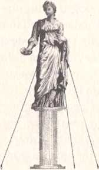
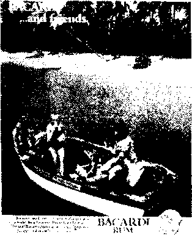
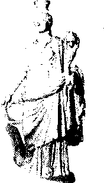

Toplum Tarafından Kabul Görmemenin Tesellisi
Birkaç yıl önce, New York'ta soğuk bir kış sürerken, bir öğleden sonra beni Londra'ya götürecek olan uçağın kalkmasını beklediğim sırada, kendimi Metropolitan Müzesi'nin üst katındaki boş bir galeride buldum. Galeri çok aydınlıktı; çevrede, yerden ısıtma sisteminin çıkardığı huzur verici vınlama dışında hiç ses duyulmuyordu. İzlenimci ressamların tablolarına bakmaktan bıkkınlık geldiği için, o zamanlar pek düşkün olduğum Amerikan usulü sıcak çikolatadan içebileceğim kafeteryanın tabelasını arıyordum ki gözüme bir tablo çarptı. Alttaki levhada, tablonun 1786 sonbaharında Paris'te, otuz sekiz yaşındaki Jacques-Louis David tarafından yapıldığı yazıyordu.
Tabloda, Atina halkının ölüme mahkum ettiği Sokrates bir tas baldıran içmeye hazırlanıyor; üzüntü içindeki arkadaşları çevresini sarmış. İ.Ö. 339 yılının ilkbaharında üç Atina yurttaşı filozofla ilgili şikayette bulunmuş, onun yargılanmasını istemişlerdi. Filozofu, şehrin tanrılarına ibadet etmemekle, dine yenilikler getirmekle ve Atinalı genç erkeklerin ahlakını bozmakla suçluyorlardı; bunlar öylesine ağır suçlardı ki filozofa ölüm cezası verilmesini talep ediyorlardı.
Sokrates olanları bilgece bir sükunetle karşıladı. Felsefesini mahkeme önünde reddetmesi için kendisine bir fırsat verilmiş olmasına karşın, toplum tarafından kabul görmesine yardım edecek olanı değil inandığı şeyi yaptı ve Platon'un bize aktardığına göre jüri üyelerine şu cüretkar sözleri söyledi:
Soluk aldığım ve aklım başımda olduğu sürece felsefeyle uğraşmaktan, size öğütler vermekten ve tanıdığım herkese doğruyu anlatmaktan asla vazgeçmeyeceğim ... Evet baylar ... beni beraat ettirseniz de ettirmeseniz de, yüz kere ölmem gerekse bile bilin ki davranışlarımı değiştirmeyeceğim.
Ve böylece filozof hayatının son günlerini geçirmek üzere Atina hapishanesine yollandı; ölümüyse felsefe tarihine çok önemli bir an olarak geçti.
ın
Bu olayın öneminin bir göstergesi de onun çok sık resmedilmiş olmasıdır. 1950 yılında Fransız ressam Charles-Alphonse Dufresnoy Sokrates'in Ölümü adlı tabloyu yaptı. Bu yapıt şimdi Floransa'da, (kafeteryası olmayan) Palatina Galerisi'nde sergileniyor.
Diderot, 18. Yüzyılda Dramatik Resim Üzerine inceleme adlı yapıtında Sokrates'in ölümünün resme taşınabilecek bir an olduğuna dikkat çekince bu olaya duyulan ilgi doruk noktasına ulaşmıştı.
Etienne de Lavallee-Poussin, Jacques Philippe Joseph de 1760 (yaklaşık yıl) Saint-Quentm, 1762
ıı
Pierre Peyron, 1790
Jacques-LouisDavid resmin siparişini 1786 yılında, varlıklı bir Parlamento üyesi ve yetenekli bir Yunan Dili araştırmacısı olan Charles-Michel Trudaine de la Sabliere'den aldı. Ücret hayli dolgundu; 6000 lira peşin, 3000 lira da resim teslim edilince ödenecekti (XVI. Louis, çok daha büyük bir tablo olan Horatii'nirı Yemini'ne yalnızca 6000 lira ödemişti). Resim 1787 yılında ilk kez sergilendiğinde, Sokrates7in sonunu konu alan tablolar arasında en iyisi olarak nitelendirildi. Sir Jashua Reynolds'a göre bu tablo "Sistim Şapelinden ve Raphael'in Odalarından sonra sanat adına gösterilmiş en takdire şayan çaba" idi. "Perikles zamanında Atmalılar bu resmi görselerdi onur duyarlardı."
Müzedeki hediyelik eşya dükkanından beş tane David kartpostalı satın aldım ve sonra, Newfoundland,in (bulutsuz gökyüzünü aydınlatan dolunay ışığıyla parlak yeşile dönmüş) buzdan tarlaları üzerinde uçarken, bir taraftan, hostesin uyukladığım sırada tabağıma bırakmış olduğu renksiz akşam yemeğimi didikleyerek bu kartpostallardan birini inceledim.
Kartpostalın üzerindeki resimde Platon yatağın ayakucunda oturmuş, devletin adaletsizliğine sessizce tanıklık ediyor; hemen yanında bir kalem ile bir parşömen tomarı görülüyor. Sokrates öldüğü zaman Platon 29 yaşındaydı ama David onu
kır saçlı, ciddi görünümlü, yaşlı bir adam olarak resmetmiş. Sokrates'in karısı Ksanthippe gardiyanlar eşliğinde hapishane hücresinden dışarı çıkartılıyor. Sokrates'in yedi arkadaşı farklı biçimlerde matem tutarken resmedilmiş. Sokrates'in en yakın dostu Kriton ise filozofun yanma oturmuş, ona bakıyor; bağlılığı ve endişesi gözlerinden okunuyor. Filozof, bir atletinkini andıran kol kasları ve gövdesiyle dimdik oturmuş. Yüzünde ne bir korku ne de bir pişmanlık var. AtinalIların onu budala ilan etmesi inançlarını sarsmamış. Aslında David, Sokrates'i zehri yudumlarken resmetmek istemiş ama şair Andre Chenier, filozofu bir taraftan hayatını sona erdirecek olan zehir dolu tasa sükunetle uzanır, bir taraftan da bir felsefi mesele üzerine son cümlelerini yazarken resmetmesini önererek bunun, dramatik gerilimi artıracağını ve filozofun hem Atina'nın yasalarına itaat ettiğini hem de kendi içinden gelen çağrılara sadakat gösterdiğini vurgulayacağını söylemiş. Resimde üstün bir insanın son dakikalarında bile bir şeyler öğretmeye çalıştığına tanıklık ediyoruz.
Belki de kartpostaldaki resmin beni bu kadar çok etkilemesinin nedeni, burada resmedilen davranış ile benimki arasında tam bir zıtlık olmasıydı. Sohbetlerde tercihim doğruyu söylemektense, başkalarının benden hoşlanmasını sağlamak oluyordu. Karşımdakini memnun etme arzum yüzünden çocuğunun okul müsameresini seyreden bir veli gibi sıradan esprilere gülüyordum. Tanımadığım insanlara karşı, otelin zengin müşterilerine selam verirken onlara yaranmaya çalışan bir kapıcının yılışık tavrını takmıyor, istinasız herkes tarafından sevilmeyi istemek gibi hastalıklı bir arzudan kaynaklanan o salyalı coşkuyu yaşıyordum. Bir topluluk içindeyken, çoğunluk tarafından kabul gören fikirleri sorgulamaya kalkmıyordum. Alanlarında otorite olmuş kişilerin onayını almaya çalışıyor, onlarla karşılaştıktan sonra da acaba beni beğendiler mi diye
endişelenip duruyordum. Gümrük kontrolünden ya da polis arabalarının yanından geçerken, üniformalı memurların benimle ilgili iyi şeyler düşünmelerini istiyordum gizliden gizliye.
Oysa filozof, toplum tarafından kabul görmediği ve devlet onu suçlu bulduğu halde dize gelmemişti. Başkaları onunla ilgili şikayette bulunduğu için düşüncelerini değiştirmemişti. Üstelik, kendine olan güveni, kibirinden, saldırgan mizacından ileri gelmiyor, felsefi temellere dayanıyordu. Onaylanmadığı zaman kendine olan güvenini histerik bir biçimde değil akılcı temellere oturtarak yansıtmasını sağlayacak düşüncelerle donatmıştı felsefe Sokrates'i.
O gece buzla kaplı topraklar üzerinde uçarken, insan aklının bu denli bağımsız olabileceği düşüncesi bana ilham ve coşku verdi. Toplum tarafından onaylanan davranış biçimlerine ve fikirlere doğru tembelce meyletmekten başka şeyler de yapabileceğimi düşündürdü bana. Sokrates'in yaşamı ve ölümü beni akılcı bir şüpheciliğe davet ediyordu.
Daha genel bakıldığında, Yunan filozofun simgesi olduğu bu mesele beni, ilk bakışta hem çok büyük hem de gülünç diye nitelendirilebilecek bir göreve çağırıyordu: Felsefe yoluyla bilge olmaya. Tarih boyunca filozof diye anılan bütün düşünürler kuşkusuz birbirlerinden çok farklıydılar (aslında aralarındaki görüş farklılıkları o denli büyüktü ki bütün bu insanlar bir kokteylde bir araya toplanacak olsalardı birbirlerine söyleyecek bir şey bulamadıkları gibi, birkaç kadehten sonra gırtlak gırtlağa gelirlerdi), ama buna karşın, aralarına yüzyıllar girdiği halde ortak yanları olan birkaçını ötekilerden ayırmak mümkündü. Bunlar, felsefe sözcüğünün Yunanca köklerinde kendini açığa vuranphilo, sevgi, sophia, bilgelikfelsefi anlayışa çok da abartıya kaçmayan bir sadakatle bağlı; en tarifsiz acılarımızın nedenleriyle ilgili teselli edici, pratik birkaç şey söyleme konusunda hevesli kişilerdi. İşte bana ancak bu adamlar yardım edebilirdi.
Kişinin şüphe uyandırmamak ve dışlanmamak için nasıl davranması gerektiğine ilişkin olarak her toplumun kendine göre anlayışları vardır. Bunlardan bazıları kanunlarda açıkça dile getirilir; bazıları ise "sağduyu" diye tanımlanan, ahlaka ve gündelik yaşama ilişkin yargılar bütünü içinde saklıdır. "Sağduyu", nasıl giyinmemiz, maddi açıdan hangi değerleri edinmemiz, kimlere saygı duymamız, hangi etiketlerin peşinden koşmamız ve nasıl bir aile hayatı sürmemiz gerektiği konusunda bizi yönlendirir. Herkesçe kabul edilen bu düzeni sorgulamaya başlamak, garip, hatta saldırgan diye nitelenmemize yol açacaktır. Sağduyunun sorulardan bu denli uzak tutulmasının nedeni, sağduyu içinde barınan yargıların yakından incelenemeyecek kadar hassas olduğu yolundaki yaygın kanıdır.
Örneğin, sıradan bir sohbette, toplumumuzun değer yargılarına göre çalışmanın amacı nedir, diye sormak pek de kabul edilebilir bir şey değildir.
Yeni evli bir çiftten, verdikleri kararın altında yatan nedenleri ayrıntılı biçimde anlatmalarını istemek, tatilcilere, bu yolculuğa niçin çıktıkları konusunda sorular sormak da hoş değildir.
Antik Yunanların da bizim gibi değer yargıları vardı; onlar da kendi değerlerine bizim kadar sıkı sıkıya bağlıydılar. Bir hafta sonu, Bloomsbury'de bir sahafta eski kitaplara bakarken, çocuklar için yazılmış bir tarih kitapları dizisine rastladım. Kitapların içi resimlerle, hoş çizimlerle doluydu. Dizide Bir Mısır Kentini Tanıyalım, Şatoları Tanıyalım gibi adlar taşıyan kitaplar yer alıyordu. Ben, zehirli bitkiler konusunda hazırlanmış bir ansiklopediyle birlikte bu dizinin ilk kitabını satın aldım; Bir Antik Yunan Kentini Tanıyalım.
Kitapta, I.O. 5. Yüzyılda, Yunanistan'da hangi giysileri giymenin normal kabul edildiğine ilişkin bilgiler verilmişti.
Ayrıca, Yunanların, aşk tanrısı, av ve savaş tanrısı, tarım, ateş ve deniz tanrısı gibi pek çok tanrıya inandıklarından söz ediliyordu. Yunanlar herhangi bir girişimde bulunmadan önce tapmakta ya da evlerinin içindeki küçük bir ibadet alanında tanrılara dua ediyor, onlara hayvanlar kurban ediyorlardı. îbadet pahalı işti: Atena için bir inek, Artemis ile Afrodit için bir keçi, Asklepyos için bir horoz kesmek gerekiyordu.
Yunanlar için köle sahibi olmak normaldi. İ.Ö. 5. Yüzyılda yalnızca Atina sınırları içinde 80-100.000 köle vardı; yani özgür olan her üç kişiye bir köle düşüyordu.
Yunanlar çok da asker ruhluydular; savaş alanında kahramanlık onlar için çok önemliydi. Kişinin, gerçek bir erkek olduğunu kanıtlaması için, düşmanının kellesini uçurmayı bilmesi gerekiyordu. İkinci Pers Savaşı zamanında yapılmış bir tabakta Atinalı bir askeri, bir Pers savaşçısının kariyerini sona erdirirken görüyoruz; işte bu resim o zamanlar bir askerin nasıl davranması gerektiğine ilişkin bilgi veriyor bize.
Kadınlar kocalarının ve babalarının boyunduruğu altında yaşıyorlardı. Politikada ya da toplumsal yaşam içinde yerleri yoktu; ne mirasa ortak ne de para sahibi olabiliyorlardı. On üç on dört yaşlarında evlendiriliyorlardı; kocaları, babaları tarafından, duygusal olarak kendilerine uygun olup olmadığı düşünülmeksizin seçiliyordu.
Bu sayılanlardan hiçbiri Sokrates'in çağdaşlarına şaşırtıcı görünmezdi. Asklepyos için neden horoz kurban ettikleri ya da erdemli olmak için bir adamın neden ille de birini öldürmesi gerektiği sorulsa, kafaları karışır, öfkelenirlerdi. Bu soruları sormak onlara göre, neden kıştan sonra bahar geldiğini ya da buzun niçin soğuk olduğunu sormak kadar ahmakça idi.
Ancak, yalnızca başkalarının düşmanca tavırları değildir bizi mevcut düzeni sorgulamaktan alıkoyan. Şüphe duyma yeteneğimiz içimize yerleşmiş bir inanç tarafından da baltalanabilir; toplum tarafından kabul gören davranış biçimlerinin sağlam bir temele dayandığına inanırız. Bu sağlam temeli kendimiz göremesek de böyle bir temel mutlaka vardır çünkü çok uzun zamandır çok fazla sayıda insan bu temel üzerine kurulmuş olan düzene uygun davranmaktadır. Toplumun baştan beri korkunç bir hata yapıyor olması, üstelik bu hatayı bir tek bizim farketmiş olmamız imkansız gibi gelir bize. Şüphelerimizi bastırıp sürüyü takip ederiz çünkü kendimizi, o zamana kadar su yüzüne çıkmamış, kabul edilmesi zor hakikatleri bulup çıkartan bir önder olarak göremeyiz.
Şimdi filozofun hayatına bir bakalım, belki ancak o, bizim bu alçakgönüllülükten biraz olsun kurtulmamıza yardım edebilir.
ı. Hayatı
İ.Ö. 469 yılında Atina'da doğdu. Babası Sophroniskos'un heykeltraş, annesi Phainarete'nin de ebe olduğu söylenir. Sokrates gençliğinde filozof Arkhelaos'un öğrencisi oldu, sonra da düşüncelerinin hiçbirini yazıya geçirmeden felsefe yapmaya başladı. Verdiği felsefe derslerinden para talep etmediği için yoksul düştü ama mal mülk edinme kaygısı zaten hiç yoktu. Bütün yıl aynı giysiyi üstünden çıkarmıyor, neredeyse her zaman çıplak ayak dolaşıyordu (ayakkabıcıları sinir etmek için dünyaya geldiğini söyleyenler bile vardı). Öldüğünde evli ve üç erkek çocuk babasıydı. Karısı Ksanthippe'nin huysuzluğu dillere destandı (niçin böyle bir kadınla evlendiği sorulduğunda filozof, at terbiyecilerinin en huysuz atlarla çalışması gerektiğini söylerdi). Zamanının çoğunu evin dışında, Atina'nın halka açık alanlarında arkadaşlarıyla söyleşerek geçirirdi. Arkadaşları onun bilge kişiliğine ve mizah yeteneğine hayrandılar. Ama herhalde çok az kişi dış görünüşüne hayran olabilirdi.
Kısa boylu, sakallı ve keldi; acayip, sanki yuvarlanırmış gibi bir yürüyüşü vardı.
Onu tanıyanlar yüzünü çok çeşitli şeylere benzetiyorlardı: Bir akrebe, bir satire ya da bir soytarıya. Burnu yassı, dudakları kalındı; pörtlek, şiş gözlerini, çalı gibi karmakarışık kaşları gölgeliyordu.
Yine de, en garip özelliği şuydu: Farklı sınıflardan, farklı yaş ve meslek gruplarından AtinalIların yanma yaklaşıp, kendisini biraz garip bulacaklarını, hatta sinirlenebileceklerini düşünmeden onlara damdan düşer gibi niçin herkes tarafından doğru kabul edilen şeylere inandıklarını ve hayatın anlamının onlara göre ne olduğunu soruyor, sorusuna açık ve net yanıtlar vermelerini istiyordu. Bu davranış karşısında şaşkınlığa düşen generallerden biri şöyle diyor:
İnsan ne zaman Sokrates ile karşılaşsa, onunla sohbet etmeye başlasa, hep aynı şey oluyor. Önce siz bambaşka bir konudan söz etmeye başlıyorsunuz, sonra Sokrates sizi yönlendirerek istediği yere çekiyor, en sonunda da sizi tuzağa düşürüp şimdiki yaşam biçiminiz ve geçmiş yaşamınız ile ilgili ayrıntılı bilgiler edinmeden, yaşamınızı her açıdan didik didik incelemeden sizi bırakmıyor.
Bu alışkanlığı bağlamında iklimden ve kent planlamasından da yardım gördüğü söylenebilir. Atina yılın altı ayı sıcaktı; dolayısıyla insanlarla, ev ortamı dışında, resmi bir tanıştırma olmaksızın sohbetler yapabilme olanağı fazlaydı. Kuzey bölgelerinde, loş, dumanaltı kulübelerin balçıkla sıvanmış duvarları arasına sıkışıp kalan etkinlikler için, burada cömert Atina semalarından başka bir şeye gereksinim duyulmuyordu. Agora'da, Boyalı Avlu'da ya da Zeus Eloterios avlusunda, sütunlar arasında gezinmek ve akşama doğru, öğle vaktinin hayhuyundan da gecenin huzursuzluğundan da uzak o özel saatlerde, yabancılarla konuşmak adettendi.
Kent büyük olduğu için çok da şenlikliydi. Atina'da ve Atina Limam'nda yaklaşık 240.000 kişi yaşıyordu. Kentin bir ucundan öteki ucuna, yani Pire'den Ege kapısına yürümek bir saatten fazla zaman almıyordu. Burada yaşayanlar, tıpkı bir okuldaki öğrenciler ya da bir düğündeki davetliler gibi kendilerini birbirlerine çok yakın hissediyorlardı. Yani, sokağın or
tasında yabancılarla sohbete başlayanlar yalnızca deliler ve ayyaşlar değildi.
Hğer varolan düzeni sorgulamaktan kaçmıyorsak, bunun nedeniiçinde yaşadığımız kentin iklimi ve büyüklüğü bir yanaloplum tarafından kabul gören her şeyin doğru olduğunu düşünmemizdir aslında. Çıplak ayaklı filozof ise, toplum tarafından benimsenen her şeyin anlamlı olup olmadığına ilişkin bir sürü soru sormuştu.
2. Sağduyu kuralı
l’ek çok kişi bu soruları kafa karıştırıcı buluyordu. Bazıları onunla alay ediyordu; hatta birkaçı onu öldürebilirdi. İlk kez I.O. 423 yılında, Dionysus Tiyatrosu'nda sahnelenen Bulutlar adlı oyununda Aristofanes, altında yatan mantığı iyice ölçüp tartmadan sağduyuyu kabul etmek istemeyen filozofun bir karikatürünü sunuyordu Atmalılara. Sokrates'i canlandıran oyuncu sahneye uzun bir sopanın ucunda sallanan sepet içinde* çıkıyordu; çünkü, söylediğine göre, kafası yüksek yerlerde
daha iyi çalışıyordu. Zamanını o denli önemli meselelere vakfediyordu ki, yıkanmaya ya da ev işleriyle uğraşmaya vakit bulamıyor; bu yüzden leş gibi kokan bir giysiyle dolaşıyor, evi haşerelerle kaynıyordu. Ama olsun, o hayatın çok daha önemli yanlarına ilişkin soruların yanıtlarını bulmaya çalışıyordu: Bir pire zıpladığında kendi boyunun kaç katı kadar yüksekliğe ulaşabilirdi? Sivrisinekler vızıldarken ağızlarını mı yoksa anüslerini mi kullanıyordu? Aristofanes, Sokrates7 in bu sorularını yanıtlamaktan kaçınmış olsa da, herhalde seyirci soruların yerinde olduğunu düşünüp keyiflenmiştir.
Aristofanes entelektüellere çok bildik bir eleştiri getiriyordu: Entelektüeller sordukları sorularla akla uygun görüşlerden iyice uzaklaşıyor, oysa meseleleri sistemli biçimde analiz etmeyi hiç öğrenmemiş kişiler her şeyi daha bütünlüklü bir biçimde kavrıyorlardı. Oyun yazarı ile filozofu birbirinden ayıran şey, sıradan açıklamaların yeterli olup olmadığına ilişkin düşünceleriydi. Aristofanes7 e göre aklı başında insanlar, pirelerin kendi boylarından çok daha yükseğe sıçradığını, sivrisineklerin şuralarından ya da buralarından vızıldadığını bilerek huzur içinde yaşarken, Sokrates sağduyuyla ilgili manik bir şüpheye kapılıyor; sapkın bir açlıkla kafasının içini karmaşık ama boş soru ve yanıtlarla dolduruyordu.
Bu itham karşısında Sokrates herhalde şu yanıtı verirdi: Pirelerin fazlaca bir rol oynamadığı bazı durumlarda, sağduyuyla hareket etmek istiyorsak meseleyi daha derinden sorgulamalıyız. Pek çok Atinalıyla yaptığı kısa sohbetler sonunda Sokrates, nasıl bir yaşam sürülmesi gerektiği konusunda ortaya atılan herkesçe benimsenmiş görüşlerin, yani çoğunluk tarafından sorgusuz sualsiz kabul edilen ve normal diye nitelenen görüşlerin, bu görüşleri dile getiren kişilerin kendine güvenlerine bakılırsa asla tahmin edemeyeceğimiz kadar yetersiz kaldığını görmüştü. Aristofanes7 in umduğunun aksine,
Sokrates'in konuştuğu bu kişiler ne dediklerini pek de biliyor gibi görünmüyorlardı.
3. îki konuşma
Platon'un Lakhes'te anlattığına göre, filozof Atina'da bir öğleden sonra, iki saygıdeğer generalle, Nikias ve Lakhes ile karşılaşır. Bunlar, Mora Savaşında Sparta ordularına karşı savaşmış, şehrin büyüklerinin saygısını, gençlerinin ise hayranlığını kazanmış generallerdir. Daha sonra ikisi de birer savaşçı olarak ölürler: Lakhes İ.Ö. 418 yılında Mantinea savaşında, Nikias da İ.Ö. 413 yılında talihsiz bir Sicilya seferi sırasında. Ne yazık ki portreleri günümüze ulaşmamış, ama Parthenon Tapmağı'nın duvarlarını süsleyen bir kabartmada görülen bu iki atlıya bakarak generallerin savaşırken neye benzediklerini belki hayal edebiliriz.
(leneraller sağduyulu bir fikir ortaya atarlar. Onlara göre cesur olmak için kişinin orduda yer alması, savaşta ilerleyip düşmanları öldürmesi gerekmektedir. Ancak generallerle açık havada sohbet etmekte olan Sokrates onlara birkaç soru daha sormadan edemez:
Sokrates: Cesaretin ne olduğunu tanımlamaya çalışalım Lakhes.
Lakhes: İnan bana Sokrates, bu hiç de zor değil. Eğer bir adam saflarda kalıp düşmanla yüzyüze geldiği halde kaçıp gitmiyorsa onun cesur biri olduğuna inanabiliriz.
Fakat Sokrates, İ.Ö. 479 yılında yapılan Platia savaşında Spartalı başkomutan Pausanias komutasındaki Yunan birliklerinin önce geri çekildiğini ama daha sonra Mardonius komutasındaki Pers ordusunu cesaretle geri püskürttüğünü hatırlar. Sokrates: Duyduğuma göre Platia savaşında Spartalılar Perslerle karşılaşmış, ama saflarda kalıp düşmanla savaşmak istemedikleri için geri çekilmişler. Persler de safları aşıp peşlerine düşmüşler. Ama sonra Spartalılar, süvariler gibi arkalarından dolaşarak savaşın o bölümünde zafer kazanmışlar.
Bir kez daha düşünme gereği hisseden Lakhes, bu defa başka bir sağduyulu fikir ortaya atar: Cesaret aslında bir işin peşini bırakmamak demektir. Sokrates de bunun bazı durumlarda kötü sonuçlar doğurabileceğini belirtir. Gerçek cesareti çılgınlık halinden ayıran bir başka öğe vardır. Nihayet Lakhes'in arkadaşı Nikias, Sokrates'in yönlendirmesiyle, cesaretin mutlaka bilgiyle, iyi ve kötünün ne olduğuna ilişkin bir bilinçle harmanlanması gerektiği, üstelik yalnızca savaş alanıyla sınırlı kalmadığı sonucuna varır.
Yalnızca kısa bir açıkhava sohbetinde bile, çok hayranlık duyulan bir Atina erdeminin tanımına ilişkin olarak pek çok yetersizlik ortaya çıkmıştı. Herkes tarafından kabul gören bu tanımda, savaş alanı dışında da cesaret gösterilebileceği ve cesur davranmak için sebat ile birlikte bilginin de kullanılması gerektiği dikkate alınmamıştı. Mesele çok basit gibi görünebilir ama aslında sonuçları açısından çok da önemli olabilir. Eğer bir generale, ordusuna geri çekilme emri vermenin, tek mantıklı manevra bu olsa dahi, korkakça bir davranış olduğu öğretilmişse, bu yeni tanım onun seçeneklerini fazlalaştırmakla kalmayacak, kendisine yöneltilecek eleştirilere karşı kendi
ni savunmasını da olanaklı kılacaktır.
Platon'un Menon adlı yapıtında, Sokrates yine, herkes tarafından kabul gören bir fikrin doğruluğundan adı gibi emin olan biriyle sohbet etmektedir. Menon, Tesalya'da yaşayan çok varlıklı bir aristokrattır; o sırada Atina'yı ziyaret etmektedir ve paranın erdemle yakından ilgili olduğu fikrini savunmaktadır. Erdemli olabilmek için, diye anlatır Menon Sokrates'e, insan çok zengin olmalı. Menon'a göre yoksulluk bir kader değildir, bir kazadan ya da talihsizlikten kaynaklanamaz. Yoksulluk mutlaka kişinin kendi başarısızlığının bir sonucudur.
Yazık ki elimizde Menon'un da bir portresi yok, ama Atina'daki bir otelin lobisinde oturmuş Yunanistan'da yayımlanan bir erkek dergisini karıştırırken Menon'un, ışıklandırılmış havuzun içinde şampanya içmekte olan bu adama benziyor olabileceğini düşündüm.
Erdemli adam, diye devam eder Menon kendinden emin bir tavırla, çok iyi şeyler satın alabilecek kadar zengin olan adamdır. Sokrates ona da birkaç soru yöneltir:
Sokrates: İyi şeylerden kastın sağlık ve refah mı?
Menon: İyi şeyler derken altın ve gümüş sahibi olmayı, devlet yönetiminde yüksek rütbeli, onurlu bir görevde bulunmayı kastediyorum.
Sokrates: İyi diye nitelediğin şeyler yalnızca bunlar mı?
Menon: Evet, yani bu türden bir sürü başka şey.
Sokrates:... "Sahip olma" sözcüğüne "dürüst ve doğru yoldan" gibi başka sözcükler de eklemek ister misin, yoksa senin için dürüst olup olmamak farketmez mi? Bütün bu saydıkların dürüstçe edinilmemiş olsa, sen bunları edinen kişiye yine de erdemli der miydin?
Menon: Tabii ki hayır.
Sokrates: Demek dürüstlük, sükunet ya da hürmet, hangi erdem olursa olsun mutlaka altın ya da gümüş sahibi olmakla ilgili, öyle mi? ... Aslında, eğer doğru yoldan, dürüstçe edinilmesi mümkün değilse,... altın ve gümüş edinmeyi başaramamak erdemin ta kendisidir.
Menon: Öyle görünüyor.
Sokrates: Demek ki bu tür şeylere sahip olmak, onlara sahip olmamaktan daha erdemli bir şey değil.
Menon: Vardığın sonuç galiba kaçınılmaz.
Bir kaç dakika içinde, Menon, erdemli olmak için ille de zengin ve nüfuzlu olmak gerekmediğini, hatta bunların erdemli olmak için yeterli olmadığını anlamıştı. Zengin insanlara hayranlık duyulabilirdi, ama bu onların, sahip oldukları şeyleri nasıl edinmiş olduklarına bağlıydı. Öyleyse yoksulluk da kişinin ahlaki değerini yansıtamazdı. Varlıklı olmak erdemli olmanın bir şartı değildi; bu nedenle zengin bir adam, pek çok şeye sahip olduğu için erdemli olduğu sonucunu çıkartamazdı. Benzer biçimde, yoksul birinin de yoksulluğunu, ahlaki açıdan eksikli oluşuna bağlaması için bir neden yoktu.
4. Başkaları bilmiyor olabilir
I3u iki sohbetin konuları biraz eskimiş olabilir ama bu konuşmalardan çıkartılabilecek sonuçlar hiç de eskimiş sayılmaz: Başkaları hatalı olabilir, önemli konumlara gelmiş kişiler bile olsalar; büyük çoğunluk tarafından yüzyıllardır kabul görmüş inançları dile getiriyor bile olsalar. Bunun nedeni de çok basit: Çünkü bu insanlar inandıkları şeylerin mantıklı olup olmadığını hiç gözden geçirmemişlerdir.
Menon'un ve generallerin sahip oldukları fikirler sağlam bir temele dayanmıyordu, çünkü onlar herkesçe kabul görmüş normları, mantıklı olup olmadıklarını sorgulamadan benimsemişlerdi. Sokrates, ne denli pasif davrandıklarını onlara daha iyi anlatabilmek için, sistemli biçimde düşünmeksizin bir yaşam sürdürmenin, teknik ayrıntıları dikkate almadan, hatta bunlarla ilgili en ufak bir fikre bile sahip olmadan çömlekçilik ya da ayakkabıcılık mesleğine soyunmaya benzediğini söyledi. İyi bir çömlek ya da ayakkabı yapmak yalnızca sezgiyle olacak bir iş değildi; öyleyse çok daha karmaşık bir iş olan yaşamı sürdürme işi nasıl olur da öncüller ya da hedefler üzerine bir an bile kafa yormaksızın yürütülebilirdi?
Bunun nedeni, belki de, yaşamımızı sürdürmenin çok da karmaşık bir şey olmadığına inanmamızdır. Bazı şeyleri yapmak dışardan bakıldığında çok zor görünür gözümüze; bazı şeyleri yapmaksa nedense basit. Nasıl yaşamak gerektiği konusunda sağlam görüşlere sahip olmak ikinci kategoriye giriyor, çömlek ya da ayakkabı yapmaksa birinciye.
Çömlek yapmak gerçekten de çok zor bir işti. Önce, şehrin 7 mil uzağmdaki Kolias Burnu'ndan çıkartılan çamur halindeki toprağın Atina'ya getirilmesi, dakikada 50-150 dönüş yapan çarkın üzerine yerleştirilmesi gerekiyordu. Çarkın dönüş hızı yapılacak çömleğin çapıyla ters orantılıydı (çömleğin çapı ne kadar dar ise çark o kadar hızlı dönecekti). Sonra süngerle silme, kazıyarak çömleğin dış yüzünü temizleme, fırçalama ve kulp yapma işlemleri geliyordu.
Daha sonra çömlek, potasyum hidratla karıştırılmış çamurdan elde edilen siyah, yoğun bir cilayla kaplanıyor, yani sırlanıyordu. Sır kuruyunca çömlek bir fırına konuluyor, fırının hava deliği açık bırakılmak suretiyle 800 <*> C ısıda pişiriliyordu. Çamur sertleşerek demir okside dönüşüyor (Fe203), çömlek koyu kırmızı bir renk alıyordu. Bunu takiben çömlek bu defa da 950 °°C'lik ısıda pişiriliyor, ancak bu kez fırının hava deliği kapatılıyor ve nem vermesi için fırının içine ıslak yapraklar konuyordu. Bu işlemlerin sonucunda çömlek gri-siyah bir renk alıyor, üzerindeki sır ise madeni siyah bir renge kavuşuyordu (manyetit, Fe304). Birkaç saat sonra, fırının hava deliği yeniden açılıyor, yapraklar dışarı almıyor ve ısı 900 <*> C'a kadar düşürülüyordu. Çömleğin üzerindeki sır siyah renkte kalırken, çömlek ilk fırınlandığı zamanki kırmızı rengini yeniden kazanıyordu.
I liç tereddüt etmeden kendi çömleklerini yapmak üzere yalnızca birkaç Atmalının harekete geçmiş olması pek de şaşırtıcı değil. Çömlekçilik gerçekten zor bir işmiş gibi görünüyor. Ne yazık ki doğru dürüst bir ahlak anlayışı edinmek hiç de öyle görünmüyor. Aslında bu iş, dışardan bakıldığında çok basit gibi görünen ama doğası gereği hayli karmaşık olan etkinlikler kategorisi içinde ele alınabilir.
Sokrates, bu karmaşık yapıya gereken saygıyı göstermeyen, görüşlerini formüle etmek için bir çömlekçinin sarfettiği kadar dikkati bile sarfetmeyen ama nedense kendine çok güvenen insanlar karşısında cesaretimizin kırılmaması gerektiğini söylüyor. Çok aşikâr, çok "doğal" diye nitelenen şeylerin gerçeklen öyle olduğuna çok az rastlanır. Bu bilinç şunu düşünmeye sevketmeli bizi: Aslında yaşam göründüğünden çok daha esnek, çünkü yaygın görüşler, genelde, hatasız çıkarımlar sonucunda değil, yüzyıllardır sürüp giden entelektüel karmaşanın
sonucunda bugünkü konumlarına geldiler. Belki de şimdiki konumlarında olmaları için iyi bir neden yoktur, kimbilir?
5. Kendimiz için düşünmek
Filozof bize yalnızca başkalarının hatalı olabileceğini göstermekle kalmıyor, bir de neyin doğru olduğuna kendi kendimize karar vermemize yarayacak basit bir yöntem sunuyor. Pek az filozof düşünerek yaşamaya başlamak için bu kadar az şeyin gerekli olduğunu düşünür. Sokrates'e göre bunu yapabilmek için yıllarca eğitim almamız ve çok fazla boş vaktimiz olması gerekmez. Meraklı, zihnindeki taşları yerli yerine oturtabilmiş ve sağduyuya uygun olduğu iddia edilen bir düşünceyi gözden geçirmek isteyen herkes, Sokrates'in yöntemini izleyerek, sokakta yürürken bir arkadaşıyla bu konuda bir sohbete başlayabilir ve sonunda, yarım saatten kısa bir zaman içinde bir ya da iki çarpıcı sonuca ulaşabilir.
Sokrates'in sağduyuyu sorgulama yöntemine, Platon'un ilk ve hatta daha sonraları kaleme aldığı diyaloglarda rastlanabilir çünkü bu yöntemde tutarlı basamaklarla ilerlemek söz konusudur ve aslında bu yöntemi, yemek tarifi ya da bir kılavuz kitap diliyle de rahatça ifade ederek herkesin kabul etmemizi istediği ya da içten içe karşı çıkmak istediğimiz bir görüş için uygulayabiliriz. Bunu yaparken filozofa haksızlık ettiğimizi düşünmemize de gerek yok. Yönteme göre, bir ifadenin doğru olup olmadığını anlamak için, bu ifadenin çoğunluk tarafından kabul görüp görmediğine ya da önemli insanlar tarafından çok uzun bir zamandır benimsenmiş olup olmadığına bakamayız. Doğru ifade mantıksal olarak bir çelişkiye yol açmayacak ifadedir. Eğer tersi kanıtlanamıyorsa bir ifade doğru diye kabul edilir. Eğer tersi kanıtlanabiliyorsa, bu ifadeyle yansı
tılan görüşe kaç kişi inanırsa inansın, ifade yanlıştır ve biz de bu görüşle ilgili bir şüpheye kapıldığımız için haklı çıkmış oluruz.
Sokrates'in düşünme yöntemi
1. Sağduyuya uygun diye nitelenen bir görüşü yansıtan bir ifade seçin.
Cesaret savaşta geri çekilmemeyi gerektirir.
Erdemli olmak varlıklı olmayı gerektirir.
2. Bu görüşü dile getiren kişinin kendine güveniyor ve bu görüşün doğruluğuna inanıyor olmasını bir süreliğine bir kenara bırakarak ifadenin yanlış olduğunu varsayın. İfadenin doğru olamayacağı durumlar ya da bağlamlar bulmaya çalışın.
Kişi savaşta geri çekilmesine karşın cesur olabilir mi?
Kişi savaş alanını terketmediği halde cesaretten yoksun olabilir mi?
Kişi parası olduğu halde erdemsiz olabilir mi?
Kişi parasız olduğu halde erdemli olabilir mi?
3. Eğer bir istisna bulabildiyseniz, yapılan tanım yanlıştır ya da en azından eksiktir.
Kişinin, cesur olduğu halde geri çekilmesi mümkündür.
Kişinin, geri çekilmediği halde cesaretten yoksun olması mümkündür.
Kişinin, parası olduğu halde sahtekarın teki olması mümkündür. Kişinin, parasız olduğu halde erdemli olması mümkündür.
4. Şimdi, başlangıçta kullandığınız ifadeye nüanslar eklemeli ve ifadeyi istisnaları da kapsayacak hale getirmelisiniz.
Kişi hem savaşta geri çekilerek hem de ilerleyerek cesaret gösterebilir.
Parası olanlar ancak bu parayı erdemli yollarla kazandılarsa erdemli diye nitelenebilirler; parası olmayanlarsa, hem erdemli olup hem para kazanmanın mümkün olmayacağı şartlar altında yaşıyorlarsa erdemlidirler.
5. Eğer iyileştirmiş olduğunuz ifadelerle ilgili başka istisnalar bulabiliyorsanız, süreci yineleyin. Tersini ispat edemeyeceğimiz ifadeler doğrudur, tabii eğer insanoğlunun böyle bir doğruya ulaşması mümkünse. İnsan ancak bir şeyin ne olmadığını anlamak suretiyle onun tam olarak ne olduğu bilgisine yaklaşabilir.
6. Aristofanes'in örtük biçimde ifade etmek istediği ne olursa olsun, düşüncenin ürünü, sezginin ürününden daha üstündür.
Tabii felsefe yapmadan da doğruya ulaşmak mümkündür. Sokrates7 in yöntemini uygulamasak da, parasız insanların hem para kazanıp hem erdemli olmanın mümkün olmadığı şartlar altında yaşıyorlarsa erdemli diye nitelenebileceklerini ya da insanın savaşta geri çekilmesine karşın cesur olabileceğini farkedebiliriz. Ancak o zaman, bizimle aynı fikirde olmayanlara nasıl yanıt vereceğimizi bilemeyebiliriz, tabii sunduğumuz görüşte mantıksal olarak karşı çıkılacak bir yan olup olmadığını önceden düşünüp tartmadıysak. Etkili kişiler, erdemli olmak için paranın kesinlikle gerekli olduğu ya da savaşta geri çekilenlerin feminen olduğu konusunda ısrar edip bizi bastırabilirler. Bize güç kazandıracak karşı argümanlardan (ör. Platia Savaşı, ahlaki açıdan kokuşmuş bir topluluğun zenginliği) yoksun isek, boynumuzu bükerek ya da ters ters "Bence ben haklıyım," demekten başka çaremiz yoktur. Tabii haklı olduğumuzu da asla kanıtlayanlayız.
Sokra tes'e göre, kişinin kafasında doğru bir düşünce olduğu halde bu kişi kendisine yöneltilen itirazlara mantıklı biçimde yanıt verecek bilinçten yoksunsa, bu kişinin düşüncesi doğru düşüncedir. Sokrates bilgiyi doğru düşünce den üstün tutar; çünkü bilgi sahibi olmak yalnızca bir şeyin niçin doğru olduğunu bilmek değil aynı zamanda öteki seçeneklerin niçin yanlış olduğunu da bilmek demektir. Filozof doğrunun bu iki biçimini, büyük heykeltraş Dadalus'un güzel heykellerinden örnek vererek açıklar. Sezgi yoluyla elde edilen doğru, bir kaide
üzerine herhangi bir destek kullanılmaksızın oturtulmuş bir heykele benzer.

Sert esen bir rüzgar bu heykelin devrilmesine yol açabilir. Öte yandan, nedenlerini ve ona getirilebilecek karşı argümanları bilirsek doğru olanı destekleyip onu daha da güçlendirmiş oluruz. O zaman bu doğru argüman, teller yardımıyla yere sabitlenmiş bir heykele benzeyecektir.

Kısacası Sokrates'in düşünme yöntemi sayesinde biz de düşünceler üretebilir, bir fırtınayla karşılaşsak bile kendimizi tam anlamıyla güvende hissedebiliriz.
Yetmişinci yaşını sürerken Sokrates bir kasırganın içinde buldu kendini. Üç Atinalışair Meletus, politikacı Anitus ve hatip I ,i klıononun tuhaf ve kötü ruhlu bir adam olduğuna karar vermişlerdi. Onun şehrin tanrılarına ibadet etmediğini, Atina'nın toplumsal düzenini bozduğunu ve genç adamları bakılarına karşı kışkırttığını iddia ediyorlardı. Filozofun susturulması, hatta belki öldürülmesi gerektiğine inanıyorlardı.
Atina kentinde, doğruyu yanlıştan ayırmak için belli bir yasal işleyiş söz konusuydu. Heliast Mahkeme binası agoranın hemen güneyindeydi. Bu büyük binanın içinde, bir tarafta jürinin oturması için tahta sıralar, sıraların karşısında da davacının ve savunmanın yer alacağı bir platform bulunuyordu. Davaya önce davacının konuşmasıyla başlanıyor, sonra savunmanın konuşması dinleniyordu. 200 ila 2500 kişiden oluşan jüri de hangi iddianın doğru olduğuna karar veriyor; jüri üyeli >ri kararlarını oy pusulalarını kullanarak ya da ellerini kaldırarak açıklıyorlardı. Bir tarafı destekleyen kişilerin sayısına bakarak neyin doğru neyin yanlış olduğuna karar verme yönlemi, Atina'nın politik ve yasal yaşamında hep kullanılagelıniş bir yöntemdi. Ayda iki üç kere, Atinalı bütün erkekler, yanı yaklaşık 30.000 kişi agoranın güneybatısında kalan Pnika tepesinde toplanmaya çağrılıyor; burada ellerini kaldırarak önemli devlet meşeleriyle ilgili kararlarını açıklıyorlardı. Çünkıı bıı kentin sakinlerine göre çoğunluğun görüşü doğruyla eşdeğerdi.
Sokrnles'in davasının görüleceği gün mahkeme salonunda MH) kişi vardı. Davacı taraf konuşmasına, karşılarında duran bu ad.ımın bir sahtekar olduğunu söyleyerek başladı. Bu adam yeryüzünün ve gökyüzünün gizlerini çözmeye uğraşı yordu; dinden sapmış, sağlam argümanları kendi zayıf argümanlarıyla çürütmek için aldatıcı retorik yöntemler geliştirmişti. Üstelik gençleri de olumsuz yönde etkilemiş, sohbetleriyle onları bilinçli olarak yoldan çıkarmaya çalışmıştı.
Sokrates suçlamalara yanıt vermeye çalıştı. Gökyüzüyle ilgili hiçbir kuram geliştirmediğini, yeryüzünün gizlerini araştırmadığını, dinden sapmış bir adam olmadığını, aksine kutsal ibadetlerde bulunulması gerektiğine gönülden inandığını, Atinalı gençleri yoldan çıkarmaya çalışmadığını söyledi. Sadece zengin babaları ve bol vakitleri olan bazı gençler onun sorgulama yöntemini kullanmaya çalışmışlar, önemli kişilerin pek çok şeyden habersiz olduklarını herkese kanıtlamaya çalışarak onları kızdırmışlardı. Eğer Sokrates birilerini yoldan çıkardıysa, bunu istemeden yapmıştı; zaten insanın kendi arkadaşlarını bile isteye kötü yola sürüklemesi pek de anlamlı değildi çünkü kötü arkadaşlardan bir gün mutlaka kendisi de zarar görürdü. Eğer istemeden bir hata yaptıysa, doğru olan şey, ona karşı bir dava açmak değil, kendine gelmesi için küçük bir uyarıda bulunmaktı.
Filozof dışarıdan bakıldığında garipsenebilecek bir yaşam sürdüğünü itiraf ediyordu:
Pek çok insanın önem verdiği şeylerle uğraşmadımörneğin para kazanmak, mülk edinmek, bir asker ya da bir yurttaş olarak şeref madalyaları kazanmak, güçlü bir konuma gelmek, kentlerimizde kurulan siyasi parti ve kulüplere katılmak gibi şeylerle hiç ilgilenmedim.
Ancak felsefeye olan tutkusunu besleyen şey aslında, Atinalı ların yaşamlarını iyileştirmek gibi basit bir arzuydu:
Gündelik yaşama ilişkin çıkarlarınızı, zihinsel ya da ahla ki zenginliklerin önünde tutmamanız için sizi ikna etmeye çalıştım.
Filozofa göre, o kendini felsefeye öylesine kaptırmıştı ki jüri oıuı beraat ettirmek karşılığında felsefeyi bırakmasını istese, bunu asla yapmazdı:
Ben her zamanki gibi şöyle demeyi sürdüreceğim, "Sevgili dostum, sen bir Atmalısın; bilgeliği ve gücüyle dünyanın en ünlü ve en büyük kentinde yaşıyorsun. Bütün dikkatini mümkün olduğu kadar çok para kazanmaya, şan şöhret sahibi olmaya verip, kendi ruhunu anlamak, mükemmelleştirmek ve hakikati aramak için hiç çaba göstermiyor olmaktan utanmıyor musun?" Eğer içinizden biri benim söylediğim şeylere de önem verdiğini iddia ederse, o zaman onun gitmesine izin vermeyeceğim; yanından ayrılmayacak, ona sorular soracak, onu inceleyecek, sınava tâbi tutacağım... Bunu tanıştığım herkese, yaşlısına, gencine, yabancısına, AtinalIsına, herkese yapacağım.
Artık sıra 500 kişiden oluşan jürinin karar vermesine gelmişti. Kısa bir tartışmadan sonra 220 kişi Sokrates'in suçsuz olduğu, 280 kişi de suçlu olduğu kanısına vardı. Filozof alaycı bir ifadeyle şöyle dedi: "Doğrusu, aradaki farkın bu kadar az olabileceğini düşünmemiştim." Yine de kendine olan güvenini yitirmedi; kararsızlığa ya da telaşa düşmedi. Onu dinleyenlerin %56'sı felsefi görüşlerine katılmadığı halde bu insanlara duyduğu inancı kaybetmedi.

suçsuz
bulanlar
suçlu
bulanlar
»M
Biz bu kadar sağlam duramıyorsak, kişiliğimizle ya da elde ol tiğimiz başarılarla ilgili birkaç ağır söz işitince göz yaşların,ı boğuluyorsak, bunun nedeni, haklı olduğumuza inanmak için ille de başkalarının onayına gereksinim duymamız olabilir. Başkaları tarafından onaylanmamayı bu kadar ciddiye almamızın temelinde ise, yalnızca terfi etmek ya da ayakta kalmayı başarmak gibi pragmatik nedenler değil, çok daha önemli bir neden yatar: Alaya alınmak yoldan çıktığımızı gösteren ve asla göz ardı edemeyeceğimiz bir işaret gibi gelir bize.
Sokrates tabii ki, zaman zaman hatalı olabileceğimizi, görüşlerimizden şüphe duymamız gerekebileceğini kabul ederdi ama gerçeklik duygumuzla başkalarının onayı arasındaki ilişkiyi değiştirebilecek çok önemli bir ayrıntıyı da eklemeden geçmezdi: Düşüncelerimizin ya da yaşam biçimimizin yanlış olduğu, asla ve asla, çoğunluğun görüşleriyle ters düştüğümüz gerçeğinden yola çıkılarak kanıtlanamazdı.
Bizi endişelendiren, bize karşı olan insanların çokluğu değil, bize karşı olmalarının altında yatan sağlam nedenler olmalıdır. Yani, dikkatimizi kabul görmediğimiz gerçeğinden uzaklaştırıp, niçin kabul görmediğimize ilişkin açıklamalara yöneltmeliyiz, içinde bulunduğumuz topluluğun büyük bölümünün bize karşı olduğunu öğrenmek korkutucu gelebilir .ima mevkimizi terketmeden önce bu kişilerin hangi yöntemleri kullanarak bu sonuca vardıklarını irdelemeliyiz. Bize muhalefet edenlerin düşünme yöntemlerinin sağlamlığı, onların muhalefetine vereceğimiz değeri belirler.
Fakat genellikle tam tersi bir eğilimle hareket ederiz: Herkesi dinleme, her kaba söz, her alaycı davranış karşısında üzülme eğilimiyle. O zaman kendimize en önemli ve en teselli edici soruyu sormayız: Bu kötü eleştiri hangi temele dayanmaktadır? Çünkü biz genellikle ölçüp tartarak, dürüstçe düşünen
bir eleştirmenin itirazlarıyla, nefret ve kıskançlıkla hareket eden eleştirmenin itirazlarını bir tutarız.
Hleştirilerin altında nelerin yattığını anlamak için kendimize zaman tanımalıyız. Sokrates'in de gayet iyi bildiği gibi, eleştirilerin altında yatan düşüncede, ilk bakışta farkedilmeyecek bir çarpıklık olabilir. Bizi eleştirenler, değişen ruh hallerinden ötürü birdenbire yanlış sonuçlara varmış olabilirler; ani bir dürtüyle ya da önyargıyla karar vermiş, hatta kamburlarının gözlere hoş görünmesini sağlamak için mevkilerini kullanmış olabilirler. Kısacası sarhoş, amatör çömlekçiler gibi yamru yumru düşüncelerle karşımıza çıkmış olabilirler.
Ne yazık ki, çömlekçiliğin tersine, düşünce ürününün iyisini kötüsünden ilk bakışta ayırmak zordur. Halbuki sarhoş bir zanaatkarın yaptığı çömleği ayık meslektaşının yaptığı çömlekten ayırmak hiç de zor değil.
Cesaret zeka ve sabır gerektirir. On saflarda durup düşmanla
savaşan kişi cesurdur.
Otoriter bir tavırla dile getirilen kötü bir düşünce, nasıl oluşturulduğuna ilişkin sağlam kanıtlar sunulmamış olsa da, bir süre için sağlam bir düşüncenin taşıdığı ağırlığı taşıyabilir. Ancak dikkatimizi yalnızca karşımızdakilerin vardıkları sonuçlara odaklarsak, onlara belki de haketmedikleri halde sayın duymaya başlarızişte bu yüzden Sokrates, bizi eleştirenle11 n yargıya varmak içip kullandıkları mantıksal yöntemler üzerinde durmamız gerektiğini vurgular. Eğer bunu yapardık, muhalefetin getireceği sonuçlardan kendimizi kurtaramadık da, hatalı olmanın bizde doğuracağı zayıflık duygusunu v ı.şamamış oluruz.
Bu fikir Sokra tes'in aklına duruşmadan hemen önce, Sicilyalı tanınmış bir retorik hocası olan Polus ile yaptığı sohbet sırasmda gelmişti. Ziyaret amacıyla Atina'da bulunan Polus'un insanı ürperten politik görüşleri vardı; üstelik adam Sokrates'i bu görüşlerin doğruluğuna inandırmayı aklına koymuştu. Polus, yalnızca diktatörlerin gerçekten mutlu olabileceklerini ileri sürüyordu; çünkü insan ancak diktatör olunca istediği gibi davranabilir, düşmanlarını hapse tıkabilir, onların mallarına el koyabilir, hatta onları idam ettirebilirdi.
Sokrates bu iddiaları kibarca dinledi; ardından bunlara bir dizi mantıklı argümanla yanıt verdi. Amacı, ancak iyi bir şey yapmanın insana mutluluk getireceğini göstermekti. Ancak Polus ayak direyerek çok sayıda insanın diktatörlere saygı duyduğunu söyledi. Makedonya Kralı Arkhelaos'un, amcasını, kuzenini ve yedi yaşındaki meşru varisini öldürttüğünü ama yine de Atina halkının ona büyük destek verdiğini belirtti. Polus'a göre, Arkhelaos'dan hoşlanan insanların sayısı, kendi diktatörlük kuramının doğruluğunu kanıtlamaya yetiyordu.
Sokrates, Arkhelaos'dan hoşlanan insanlar bulmanın çok kolay, iyi bir davranış göstermenin kişiye mutluluk getireceği görüşüne destek verecek insanlar bulmanınsa çok daha zor olabileceğini kibarca kabul etti. "Benim söylediğim şeyin yanlış olduğunu kanıtlamak için tanıklar çağırman gerektiğini düşünüyorsan, emin ol Atina'daki herkes, burada doğup büyümüş olsun olmasın herkes sana destek verecektir," diye açıkladı Sokrates.
Niseratus'un oğlu Nikias ve hatta dilersen, onun erkek kardeşleri, hani şu aralarına dizi dizi Dionysus heykelleri girmiş kardeşler sana destek verebilir. Selius'un oğlu Aristokhrates de öyle... Çok istiyorsan, bütün Perikles ahalisi ya da herhangi bir Atinalı aile de seve seve yardımına koşar.
Ama Sokrates, Polus'un görüşleri için sağlanacak bu denli büyük desteğin bile savunduklarının doğruluğunu kanıtlamaya yetmeyeceğini düşünüyordu.
Sorun şu, Polus, senin benimle sohbet ederken kullandığın retorik yöntem ve bu yöntemi kullanarak söylediklerimi çürütme çaban insanların mahkemelerde yaptıklarının aynı. Mahkemelerde de insanlar, iddialarına destek verecek çok sayıda tanık bulabilirlerse, üstelik suçladıkları kişinin az sayıda tanığı varsa ya da hiç yoksa, bunun karşı tarafın haksızlığını kanıtlamaya yeteceğini düşünürler. Ancak gerçek söz konusu olduğunda sayısal çoğunluk tamamen değersizdir, çünkü kişinin, aslında sözde saygınlıklarından başka hiçbir şeyleri olmayan ve nedense birdenbire kendisi aleyhinde ifade vermeye karar vermiş tanıklardan oluşan bir ordu tarafından yenilgiye uğratılması pekâlâ mümkündür.
t ierçek saygınlık çoğunluğun iradesinden değil, sağlam bir akıl yürütmeden kaynaklanır. Çömlek yaparken, işi bilenlerin lavsiyelerine uyup, çömleğin sırını 800 ısıda Fe^CÇe dönüşlü rmeliyiz; bir gemi yaparken daha önce bir kadırga inşa •'lıniş olanların söylediklerini dikkate almalıyız ve ahlaki merlcleriyani nasıl mutlu, cesur, adil ve iyi olabiliriz gibi sorulan ele alırken, başkalarının bu konularla ilgili kötü akıl yünümden gözümüzü korkutmamak, varılan sonuçlar retorik lı ora kırının, güçlü generallerin, Tesalyalı, iyi giyimli aristokı al lamı dudaklarından dökülmüş olsa bile.
Ihınlar seçkinci bir tavrı çağrıştırıyordu. Sokrates gerçekirn ile seçkinciydi. Yine de onun seçkinciliğinde snobluk ya da önyargı yoktu. Filozof dinlediği görüşler arasında bir ayrım \ apıyorıln kuşkusuz ama bu ayrımı, görüşü dile getiren kişinin lıaııgi sınıftan olduğuna, ne kadar zengin olduğuna, bü11k askeri başarılar kazanıp kazanmadığına ya da hangi milIdlrn olduğuna bakarak değil, bu görüşe varmak için nasıl ü ıl vnriillüğüne bakarak yapıyordu. Akıl yiirülme yelisi, li k . ol ı m da vurguladığı gibi, her inşam 1.1 var olan bir yel iydi
Sokrates'in verdiği örneğe göre, eleştirilere maruz kaldığımızda Olimpiyat Oyunları'na hazırlanan sporcular gibi davranmalıydık. Antik Yunan'daki spor etkinlikleriyle ilgili daha ayrıntılı bilgiyi Bir Antik Yunan Kentini Tanıyalım adlı kitaptan edinebilirsiniz.
Düşünün ki bir sporcusunuz. Antrenörünüz iyi cirit atabilmeniz için bazı kaslarınızı özellikle çalıştırmanızı önermiş. Tek ayak üzerinde durup ağırlık kaldırmanız gerekiyor. Dışarıdan bakanlara göre garip bir çalışma olabilir bu; başarılı olmak için elinize geçen bütün fırsatları teptiğinizi söyleyip sizinle alay edebilirler. Saunaya gittiğinizde şöyle bir konuşmaya kulak misafiri olabilirsiniz:
(Şehrimizin olimpiyatlarda başarılı olmasından çok bacak kaslarını sergilemekle ilgileniyor). Biraz zalimce ama Sokrales'iıı arkadaşı Kriton ile konuşmasına kulak verirsek böyle bir sözii ciddiye almamak gerektiğini anlarız:
Sokrates: Bir sporcu... antrenmanlarını ciddiye alıyorsa, l>,ıskalarından gelen bütün övgüleri, eleştirileri, düşünceleri hiçbir ayrım gözetmeksizin dikkate mi almalıdır? Yoksa bunlar ancak bir uzmandan, gerçek bir hekimden ya da antrenörden geldiğinde mi dikkate değerdir?
Kriton: Tabii yalnızca bir uzmandan geldiğinde.
Sokrates: Öyleyse bu adam yalnızca bir uzmandan gelebilecek eleştirilerden korkmalı ya da yine bir uzmandan gelecek övgüleri dikkate almalı, herhangi birinin dile getirdiklerini değil.
Kriton: Kesinlikle öyle.
Sokrates: Demek ki bu adam davranışlarını, yapacağı fiziksel çalışmaları, yediklerini, içtiklerini uzmanlık bilgisi olan antrenörünün görüşleri doğrultusunda düzenlemeli, başka insanların görüşleri doğrultusunda değil.
Eleştirinin değerli bir eleştiri olup olmadığı, eleştiren kişilerin çokluğuna ya da rütbelerinin yüksek olup olmadığına bakılarak değil eleştiren kişi ya da kişilerin nasıl bir düşünme sürecinden geçtiklerine bakılarak anlaşılır.
Kişinin, insanların dile getirdiği bütün görüşlere değil de yalnızca bazılarına... kötü görüşlere değil de yalnızca iyilere saygı duyması gerektiği ilkesinin iyi bir ilke olduğunu düşünmüyor musun? İyi görüşler anlama yetisi olanların, kötü görüşlerse böyle bir yetiye sahip olmayanların görüşleridir...
Yani sevgili dostum, herkesin bizim hakkımızda neler söylediğini o kadar da umursamamak, öte yandan adalet konusunda uzmanlaşmış kişilerin söylediklerini dikkate almalıyız.
Sokrates'in davasında görevlendirilen jüri üyeleri uzman değildiler. Jüri daha çok yaşlı savaş malûllerinden oluşuyordu; bunlar ek gelir sağlamak için sıklıkla mahkemelerde jüri üyeliği yapan kişilerdi. Mahkemede çalıştıkları gün başına üç altın alıyorlardı. Aslında bu para bir işçinin aldığından bile azdı
ama eğer altmış üç yaşındaysanız ve evde oturmaktan sıkılıyorsanız fena para da sayılmazdı. Jüri üyesi olmak için yalnızca şu Özellikler aranıyordu: Yunan vatandaşı olmak, sağlam bir zihne sahip olmak ve hiç kimseye borcu olmamak. Gerçi üyelerin sağlam bir zihinsel yapıya sahip olup olmadıkları Sokra tes'in ölçütlerine göre d eğeri emdirilmiyordu; buradaki tek ölçüt jüri üyeliği için başvuranların düz bir çizgi üzerinde yürüyebiliyor ve adları sorulduğunda doğru yanıt verebiliyor olmalarıydı. Jüri üyeleri duruşmalar sırasında uyuklııyorlardı; neredeyse hiçbirinin benzer vakalardan ya da ilgili kanun maddelerinden haberi yoktu; üstelik kendilerine bir karara nasıl varmaları gerektiği konusunda hiçbir eğitim verilmiyordu.
Sokra tesön duruşmasında görev yapacak jüri üyeleri korkunç önyargılarla mahkemeye gelmişlerdi. Aristofanes'in Sokrates'le ilgili oyunundan hayli etkilenmişler ve bir zamanlar dünyanın en güçlü kenti olan Atina kentinin felaketler yaşamasında filozofun çok büyük etkisi olduğuna inanmışlardı. Mora Savaşı kötü bir sonla bitmişti, Sparta-Pers ittifakı Atina'nın dize gelmesine yol açmıştı; kent ablukaya alınmış, dolunma yokedilmiş, imparatorluk parçalanmıştı. Yoksul bölgelerde bulaşıcı hastalıklar ortaya çıkmış, demokrasi diktatörler la m tından engellenmiş, diktatörlük bin kadar Yunan vatandaşım infaz etmişti. Sokrates'in düşmanlarına göre, diktatörlerden pek çoğunun en az bir kere Sokra tes ile sohbet etmiş olumları bir rastlantı değildi. Kritias ve Kharmides Sokrates ile .ilil.ıl ı nn'seleler üzerine tartışmıştı ve çoğunluk, bu tartışmaI.ıı m ‘.nnueımda diktatörlerin öldürme arzusuyla yanıp tutuşul. ıv.ı I».uladıklarına inanıyordu.
Alın.ı'mn bu inanılmaz düşüşü başka nasıl açıklanabilir en büyük Yunan kenti, Persleri, ve denizde Mikale'de yenilgiye uğratılır. simdi neden bu denli büyük aşağılamlarını maruz kalıyordu? Kirli giysileri içinde sokaklarda dola şıp insanlara yanıtlan çok açık olan sorular soran adam, olan lann kolay ve tamamen hatalı bir açıklamasıydı.
Sokrates hiç şansı olmadığını anladı. Bir savunma yapmak için bile yeterli zamanı yoktu. Savunmanın jüriye seslenmek için yalnızca birkaç dakikası vardı; bir kaptaki su öteki kabın içine boşaldığında bu süre sona eriyordu:
Ben kimseyi bilerek ve isteyerek kötü yola sürüklemediğimi biliyorum ama sizi buna ikna edemiyorum çünkü böyle bir tartışma yapamayacak kadar az zamanımız var. Eğer başka ülkelerde olduğu gibi burada da büyük davalara bir günden fazla zaman ayrılsaydı, sizi ikna edebilirdim, ancak bu şartlar altında bu denli haksız iddiaları çürütmek İliç de kolay değil.
\ima mahkemesi gerçeğin ortaya çıkartılması için oluşturulmuş bir forum değildi. Burada, inançlarını mantıksal açıdan lııçbir incelemeye tâbi tutmamış, yalnızca suyun bir kaptan * »iı-kine boşalmasını bekleyen bir dizi yaşlı, tek bacaklı adamla kısa bir süre için yüzyiızeydiniz o kadar.
Bütün bunları aklınızın bir kenarında tutmak zor olmalıydı; filozof sıradan AtinalIlarla sohbetleri, sırasında onlara sözünü ettiği gücü şimdi kendisi kullanmalıydı: Belli şartlar altında, başkalarının görüşlerini ciddiye almama gücünü. Sokrates insanların kendisiyle ilgili görüşlerini inatçılığından, herkesi horgördilgimden reddetmiyordu; bu zaten her insanın mantığını kullanabilme potansiyeline sahip olduğuna ilişkin inancıyla ters düşerdi. Filozof hayatını Atmalılarla konuşmaya adamıştı; bu insanların kafalarının nasıl işlediğini ve ne yazık ki pek çoğunun da hiç işlemediğini gayet iyi biliyor, yine de bir gün düşünmeye başlayacaklarım umut ediyordu. Keyfi biçimde karar verme ve herkesçe kabul gören fikirleri sorgulamaksızın bunların peşinelen gitme gibi eğilimleri olduğunu gözlemlemişti. Bu büyük muhalefet karşısında, AtinalIların bu özelliklerini göz önünde bulundurmak kibirden kaynaklanmıyordu. O, mantıklı bir adamdı ve her mantıklı adam gibi kendine inanıyordu; düşmanlarının gerektiği gibi düşünemediğini anlıyor olmakla birlikte kendi düşüncelerinin kesinlikle doğru olduğu konusunda diretmekten de kaçmıyordu. Bu insanlar kendisini onaylamadıkları için ölebilirdi ama bu, onun hatalı ol d uğunu göstermiyordu.
'Jabiı felsefesini inkar etmek şartıyla kendi hayatım kurtarabilirdi. jürinin kendisini suçlu bulmasından sonra bile ölüm cezasından kurtulabilirdi ama o, jürinin görüşlerine karşı çıkmayı sürdürerek bu fırsatı tepti. Ölüm cezası aldığımızda nasıl ı lavranmamız gerektiği konusunda Sokrates'in Öğütlerine kulak vermeyelim; onu daha çok, mantıksız suçlamalarla karşı I.u şıya kalan zeki bir insanın kendine olan güvenini nasıl koı uyabileceğine ilişkin müthiş bir Örnek olarak hatırlayalım.
Eilozofun konuşması duygusal bir sonla noktalanıyordu:
Eğer beni ölüme mahkum ederseniz, yerimi alacak birini kolay kolay bulamazsınız. Komik bir benzetme yapmak gerekirse, kentimiz iyi yetiştirilmiş, heybetli bir at, ben de bir atsineğiyim; Tanrı beni bu atın üstüne yerleştirdi, ona bağlıyım, çünkü heybetinden ötürü tembelliğe meyleden bu at bir atsineğinin varlığıyla hareketlenebilir.., kğer benim sözlerime kulak verirseniz, haya turu bağışlarsınız. Ne yazık ki bundan çok umutlu değilim. Belki biraz sonra uykunuzdan uyanıp Anitus'u dinleyecek ve beni tek bir darbeyle alaşağı edeceksiniz, sonra da uvııklamaya devam edeceksiniz.
Sokrates yanılmamıştı. Jüri karar vermek için ikinci ve son kez u>l bandığında 360 jüri üyesi onun idam edilmesinden yana oy t uİlandı. Üyeler evlerine döndüler, suçlu ise hapishaneye göı nrüldü.
Sokrates'in hücresi karanlık ve basık olmalıydı; caddede yürürken bu yergi suratlı düşünürün ne zaman öldürüleceği konusunda yorum yapan AtinalIların alaycı sözleri bile işitilebiliyordu hücrede. Aslında ölüm cezasının verildiği tarih bir kutsal güne denk gelmemiş olsaydı onu hiç vakit geçirmeden idam ederlerdi. Ancak geleneğe göre, Delos'a şükran gününde kimse öldü riilemi yordu. Sokra tes yumuşak mizacıyla gardiyanın sempatisini kazanmıştı; gardiyan da son günlerinde onu çok mutlu edecek bir şey yaparak ziyaretçilerin Sokrates'i görmesine izin verdi. Akın akın ziyaretçi geliyordu: Phaidon, Kriton, Kriton'un oğlu Kritobulus, Apollodorus, Hermogenes, Epigenes, Aeskines, Antistenes, Ktessipos, Meneksenos, Simias, Kebes, Fedondcs, Euklides ve Terpsion. Ziyaretçiler, Sokrates'in bir katil gibi idam edilmesini bekleyen insanlara karşı nezaket göstermekten, onların yaşamlarım merak etmekten başka bir şey yapmayan filozofun başına gelenlerden ötürü üzüntülerini gizleyemiyorlardı.
David'in tablosunda Sokrates üzüntü içindeki dostları arasında resmedilmiş; unutmamak gerekir ki bu insanların filozofa bağlılığı, önyargı ve nefret denizinde bir ada gibi.
Diderot, hapishane hücresindeki ruh haliyle bir karıklık oluştursun ve biraz da değişiklik olsun diye., bu olayı işlemek isteyen ressamlara, başka Atmalıların. Sokrates'in Ölümüyle ilgili neler hissettiklerini yansıtacak tablolar yapmalarım önerebilirdiörneğin Duruşmanın Ardından Kağıt Oynayan Beş jüri Üyesi, İddia Makamı Akşam Yemeğinden Kalkıp Yatmaı/a Hazırlanırken. Dram duygusu gelişmiş bir ressam ise bu sahneleri işleyen tablolara kısaca Sokrates'in ölümü adını verebilirdi.
Vakit geldiğinde Sokrates yalnız ve sakindi. Aslında karısını ve üç çocuğunu yanına getirmişlerdi ama Ksaııthippe öylesine histerik bir ağlama tutturmuştu ki Sokrates onun dışarı çıkartılmasını istedi. Ölümünü izlemeye gelen dostları da az gözyaşı dökmüyorlardı. Onca kişinin ölüme gidişini izlemiş olan gardiyan bile şu tuhaf veda konuşmasını yapacak kadar hüzünlenmişti:
'Burada geçirdiğin zaman İçinde seni tanıdığım kadarıyla, sen buraya şimdiye kadar getirilenlerin arasında en cömert, en nazik en iyi adamsın... Getirdiğim mesajın ne olduğunu biliyorsun: Güle güle arkadaşım, kaçınılmaz olana katlanmaya çalış.' Gardiyan bunu söyledikten sonra arkasını döndü ve gözyaşları içinde hücreden çıktı.
Sonra elinde bir tas baldıranla cellat içeri girdi:
Onu görünce Sokrates şöyle dedi: /Evet, dostum, sen bu meselelerde uzmansın, şimdi ne yapmam gerekiyor?' 'Sadece iç; diye yanıtladı cellat, ve bacaklarına bir ağırlık gelene kadar hücrenin içinde yürü; sonra uzan, zehir yapması gerekeni yapacaktır.' Bunu söyledikten sonra tası Sokrates'e uzattı. Sokrates tası soğukkanlılıkla aldı... ne bedeninde bir titreme, ne yüzünün renginde bir değişiklik... Tası dudaklarına götürdü, içindeki baldıranı uysal uysal içti; baldıranın tadından dolayı en ufak bir hoşnutsuzluk göstermedi. O ana kadar hepimiz gözyaşlarımızı tutmayı hasarmıştık [Phaidon anlatıyor!; fakat onun baldıranı içtiğini, hatta bitirdiğini göriincc artık kendimizi tutamaz olduk. Gözyaşlarımı durdu amıyordum... Kriton, gözyaşlarını tutamadığı için yanımızdan uzaklaşmıştı. Hepimizden önce ağlamaya başlayan Apollodorus artık o denli yüksek sesle haykırıp ağlıyordu ki onun bu halini gören herkes kendini iyice bıraktı, Sokrates dışında.
Sokrates dostlarım sakinleşmeye çağırdı'Su halinize bakın, benim tuhaf dostlarım/ diye eğlendi onlarlasonra ayağa kalkıp zehir etkisini göstersin diye hücrenin içinde yürümeye başladı. Bacaklarında bir ağırlık hissetmeye başlayınca sırtüstü uzandı. Bacaklarında ve ayaklarında his kalmamıştı. Zehir bedeninde yukarı doğru ilerleyip göğsüne ulaştığında bilincini yitirdi. Soluk alışı ağırlaştı. En yakın dostunun gözlerinin artık sabitleştiğini görünce Kriton uzanıp Sokrates'in gözlerini kapadı:
İşte [diyor PhaidonJ, dostumuz yaşamını bu şekilde yitirdi. Onun, kendi dönemi içinde yaşayan tanıdıklarımız arasında en yürekli, en bilge ye en dürüst insan olduğunu rahatlıkla söyleyebiliriz.
İnsan gözyaşlarını tutmakta zorlanıyor. Belki Sokrates koca kalalı, ayrık gözlü bir adam olarak anlatıldığı için, bu ölüm sahnesi bana Fil Adam adlı filmin videosunu izlerken ağladığım o öğleden sonrayı hatırlattı.
Bana öyle geldi ki bu iki adam da aynı talihsizlikle karşı kar şıya kalmışlardıiyi olmak ama yine de kötü bîri gibi algılan inak.
Belki fiziksel kusurlarımız yüzünden bizimle alay etmeyecekler ya da hayatımızın işini yaptığımız için idam edilmeyeceğiz ama bu yanlış anlaşılma üzerine kurulu senaryolarda evrensel bir şeyler var. Bu hikayeler de, bizi bu evrensel mesaja götüren trajik, mükemmel birer örnek. Toplumsal yaşam, başkalarının bizimle ilgili algıları ile bizim kendi gerçekliğimiz arasındaki uyuşmazlıklarla örülü. Temkinli olmaya çalıştığımız zaman aptallıkla suçlanıyoruz. Utangaçlığımız kendini beğenmişlik, başkalarını memnun etme isteğimiz dalkavukluk olarak algılanıyor, Bu vaıılış anlamalara son vermek istiyoruz ama birden boğazımız kuruyor, ağzımızdan çıkan sözlerden hiçbiri asıl söylemek istediklerimiz olmuyor. En büyük düşmanlarımız bizim üstümüzdeki mevkilere atanıyor, bizi çekiştirmeye devam ediyorlar. Aslında, masum bir düşünüre yönelen bu haksız nefrette, bize adil davranmayı beceremeyen ya da bunu istemeyen insanlar yüzünden yaşadığımız acıların yankıları nı duyuyoruz.
Ama bu hikayede de içimizi rahatlatacak bir şeyler var. Sokrates'in Ölümünden hemen sonra insanların düşünceleri değişmeye başlamış. Isokrates'in anlattığına göre, Euripides'in Pahı medes adlı oyununu izleyenler, Sokra tes'in adı geçince gözyaşlarına boğulmuşlar. Diodorus, Sokra tes'i suçlayanların sonunda Atinalılar tarafından linç edildiğini söylüyor. Plutark'm belirttiğine göre Atinalılar Sokra tes'i suçlayanlara karşı öylesine büyük nefret duymaya başlamışlar ki onlarla yıkanmak istememiş, onları dışlamışlar. Sonunda bu kişiler çaresiz kalıp kendilerini asmışlar. Diogenes Lacrtius ise, Sokrates'in ölümünden kısa bir süre sonra AtinalIların Meletus'un idamına karar verdiğini, Anitus ve Likhon'un sürgün edildiğini ve biiyük sanatçı Lisipus tarafından yapılan kocaman, bronzdan Sokrates heykelinin kentin göbeğine dikildiğini anlatıyor. Filozof sonunda Atina halkının bazı şeylere kendisi gibi bakmaya başlayacağını öngörmüştü, anlaşılan öyle de oldu. Kötü bir olayın böylesi olumlu sonuçlar doğuracağına inanmak zor olabilir ama önyargıların yokolması ve kıskançlığın azalması için zamana gerek var; işte biz bunu unutuyoruz. Başkaları tarafından kabul görmediğimiz gerçeğini, halk jürilerinin alaycı bakışlarından çıkardığımız sonuçlarla değil, başka yöntemler kullanarak değerlendirmeye teşvik ediyor bu hikaye bizi. Sokrates, sınırlı zekaya sahip ve içinde mantıkla desteklenmemiş şüpheler barındıran 500 kişi tarafından yargılanmıştı çünkü garip görünüşlü biriydi ve Atina, Mora Savaşını kaybetmişti. Yine de daha başka, daha büyük mahkemelerin adil kararlar verebileceğine olan inancını yitirmedi. Belli bir zamanda, belli bir yerde olsak bile, bu örneği hatırlayıp, çok daha nesnel biçimde yargılanabileceğimiz başka memleketlerde, başka dönemlerde yaşıyor olduğumuzu hayal edebiliriz. Kendi ülkemizdeki jürileri ikna edip kendimizi kurtaramasak da gelecekteki jürilerin olası kararlarıyla teselli bulabiliriz.
Yine de bir tehlikeyle karşı karşıyayız: Sokrates'in ölümü bizi yanlış nedenlere tutunmaya itebilir. Bu Örnekten yola çıkarak hissi davranıp, çoğunluğun nefret ettiği biri olmakla haklı olmak arasında bir bağlantı olduğu düşüncesine sığınabiliriz. Bilimi dahilerin, bütün azizlerin kaderinde önce yanlış anlaşılmak, sonra da Lisipus'un bronz heykelleriyle onurlandırılın, ık vardır gibi gelebilir bize. Fakat belki biz ne aziz ne de dahıyi/dir. lielki meselenin temelinde yatan sağlam nedenlere (ulunmak yerine sadece savunma duruşu alıyor; ancak başkaları haksız olduğumuzu söylediği zaman gerçekten de haklı <>1< I tığın m ızı ı düşünerek rahatlıyoruzdur çocukça.
Sokrates'in sözünü ettiği bu değildi kuşkusuz. Toplum tarafından kabul görmevişimizi haklı olduğumuzun kesin bir göstergesi olarak kabul etmek, toplum tarafından kabul görmeyişimizi ille de haksız olduğumuzu gösteren bir kanıt olarak kabul etmek kadar safça olacaktır. Bir düşüncenin doğruluğu, herkesin ona inanmasıyla ya da herkesin onu reddetmesiyle değil, bu düşüncenin mantık kurallarına uygun olup olmadığıyla belirlenir. Yani bu düşüncenin, çoğunluk tarafından kabul görmediğine bakarak onun ne yanlış ne de (savunmaya geçen bazı insanların yaptığı gibi) doğru olduğuna kanaat getirebiliriz.
Sokrates bize yol göstererek iki büyük hataya düşmemizi önlemeye çalışmıştır: Çevremizdekilerin söylediklerini her zaman dinlemek ve hiç dinlememek.
Eğer onun izinde gider ve yalnızca mantığın söylediklerini dinlersek arzuladığımız en büyük ödülü kazanabiliriz.
Yeterince Paraya Sahip Olmamanın Tesellisi
Mutlu olmak için edinilmesi gerekenlerin listesi
I. Londra'nın merkezinde George Dönem i'ne ait neoklasik bir ev* Chelsea {Paradise Yolu, Markham Meydanı), Kensirıgton (Campden Hill Caddesinin güney bölümü, Homton Sokağı), Hollanda Parkı (Aubrey Caddesi), tik bakışta, Adam Kardeşler tarafından tasarlanan (1772-74) Kraliyet Sanat Akademisi binasının ön yüzünü andırıyor. Londra akşamuitlerinin o cansız güneş ışığından faydalanmak için, İyon kolonlarıyla birbirinden ayrılan Venedik tarzı büyük pencereler (özellikle ortadaki pencerelerin kavisli, çiçek kabartmalı alınlığı) dikkat çekiyor.
Birinci kattaki salonda, Robert Adam'ın tasarımı olan Kenvvood House'un kiitüphanesindekilere benzeyen bir tavan ve bir şömine var.
2. Uçuş korkusu olan yolcular için, iniş uyarı sistemi, türbülans radarı ve CAT 11 Otopilot gibi sayısız elektronik akşamıyla, Farnborough'ya ya da Biggin Hill'e çekilmiş bir jet uçağı (bir Dassault Falcon ya da Gulfstream IV). Kuyruk kısmına, alışıldık çizgiler yerine, bir ölüdoğa tablodan ayrıntı, örneğin, Velasquez'den bir balık ya da Sanchez Cotan'm Prado Galerisinde sergilenen Meyveler ve Sebzeler adlı tablosundan üç limon resmedilmiş.
X 1 ııcca yakınlarında, Marlia'da Orsetti Villası. Denize bakan yalak odasından bahçedeki çeşmelerden akan suyun sesi duyuluyor. Villanın arka duvarını bir sarmaşık manolya sarmış; arkada ayrıca kış için kapalı bir teras, yaz ayları gölgesinden faydalanmak için kocaman bir ağaç ve oyunlar
oynayabileceğiniz kadar büyük bir de çimenlik alan bulunuyor, Gölgeli bahçeler incir ve nektarin ağaçlarıyla dolu. Her yanda selvi, lavanta, portakal ağaçlan ve büyük bir zeytinlik.
4. Büyük çalışma masasıyla, şöminesiyle ve bahçe manzarasıyla bir kütüphane. Eski kitaplarm ilk baskılarından yayılan htızur verici koku, sararmış, sertleşmiş sayfalar. Üst raflarda büyük düşünürlerin büstleri ve astroloji küreleri. Tıpkı Hollanda Kralı III. VVilliam için inşa edilen malikanenin kütüphanesine benziyor.
() ı
5. Lincolnshire'daki Belton Malikanesi'ninkine benzeyen bir yemek odası. On iki kişilik uzun, meşeden bir masa. Aynı dostlarla sık sık yenen yemekler. Esprili ama zekice sohbetler. Sevgi dolu bir ortam. Herhangi bir aksaklığın önüne geçecek düşünceli bir şef ve nazik personel (şef özellikle zuçini, mantarlı taliatelli, balık çorbası, risotto, bıldırcın, John Dory ve tavuk rostosu gibi yemekler konusunda uzman). Yemekten sonra çay içip çikolata yiyerek dinlenebileceğiniz küçük bir salon.
6. Bir duvar nişine yerleştirilmiş yatak (tıpkı Jean-Françoıs Blondel tarafından Paris'te yapılmış yatağa benziyor). Yatağa girdiğinizde, hergün değiştirilen kolalanmış yatak çarşafları bedeninizi serinletiyor. Ayaklarınız yatağın ucuna değmiyor bile; içinde bir o yana bir bu yana yuvarlanabiliyorsunuz. Yattığınız yerden, su, bisküviler, bir de televizyon koymak için hazırlanmış gizli dolaplara erişebiliyorsunuz.
7. Kocaman bir banyo; ortada, mermerden bir platformun ii/.erinde, mavi istiridye kabuklarıyla süslü, bir küvet. Ayağınızla açıp kapayabileceğiniz musluklar; küvetin içine gürü! gürül akan su. Başınızı kaldırınca gökyüzünü görebili
yorsunuz. Kireçtaşıyla kaplı yerler ısıtılmış. Duvarlarda da, Pompeii'dekı İsis Tapınağı'nın duvarlarım süsleyen fresklerin reprodüksiyonları.
S. Faizin faiziyle yaşamanıza yetecek kadar çok para.
‘l. İle de la Cite'de, hafta sonları gideceğiniz, en seçkin Fransız mobilyalarının üretildiği (aynı zamanda hükümetin en zayıf olduğu) XVI. Uouis Donemi'nden parçalarla döşenmiş bir çatı katı. Grevenich'den bir komodin, Saunier'den bir konsol, Vaııdercruse-La Croix'dan bir yatak. Uzanmış Parisı'ope okuyarak, Sevres porselenleri içinde pain au chocohıt yiyerek tembel tembel geçirdiğiniz sabahlar. Yanınızda bir kadın. Birlikteyken varoluştan söz edebildiğiniz, sıkça da şakalaştığınız bu kadın Giovanni Bellini'nin (Venedik'teki ( kılleria dell'Accademia'da sergilenen) Madouna'sına benzi
yor; yüzündeki melankolik ifadenin altında sağlam bir espri anlayışı ve doğallık yatıyor; Marais'de yürüyüşe çıkarken Agnes B'den, Max Mara'dan aldığı giysileri giyiyor.
Bedensel zevklerden nefret eden ve çok sade yaşayan düşünürler dünyasında bir filozof vardı ki o, insanların dertlerini anlıyor, onlara yardım etmek istiyordu. "Tad alma, duyma zevkini, cinsel zevkleri, güzel şeyler görünce içimde uyanan hoş duyguları bir kenara atarsam," diye yazıyordu bu filozof, "iyiyi kötüden nasıl ayırırım bilmiyorum."
Hpikuros İ.Ö. 341 yılında, Batı Küçük Asya sahillerinin birkaç mil açığındaki yemyeşil bir adada, Samos Adası'nda doğdu. Çok küçük yaşta felsefeyle uğraşmaya başladı. 14 yaşından sonra Platoncu Pampilus'tan ve atom felsefecisi Nosifanes'ten dersler almak üzere yolculuklara çıktı. Ancak bu düşünürlerin öğrettikleri onu tatmin etmedi; yirmili yaşların sonuna doğru düşüncelerini bir araya toplayıp kendi yaşam felsefesini oluşturmaya karar verdi. Epikuros'un aşağı yukarı her konuda 300'den fazla kitap yazdığı söylenir. Bunların arasında Aşk Üstüne, Müzik Üstüne, Dürüst Anlaşmalar Üstüne, İnsan Yaşamı Üstüne (dört cilt) ve Doğa Üstüne (otuz yedi cilt) gibi kitaplar bulunuyordu. Ne yazık ki, bir felaketler zinciri yüzünden bu kitapların neredeyse tümü yüzyıllar içinde kaybolup gitti. Epikuros'un felsefesi de elde kalan birkaç yazıdan ve onun izinden giden Epikurosçuların anlattıklarından yola çıkılarak yeniden oluşturuldu.
hpikuros'un felsefesini ötekilerden ayıran en önemli nokta onun bedensel zevklerin önemi üzerine yaptığı vurguydu: "Zevk, mutlu bir yaşamın başlangıcı ve amacıdır," diyordu
fıs
Epikuros. Bu sözleriyle pek çok insanın hep aklından geçirdiği ama felsefenin nadiren kabul ettiği bir düşünceyi dile getiriyordu, Filozof mükemmel yemeklere olan düşkünlüğünü de itiraf ediyordu: "Her iyi şeyin başlangıcı ve temeli damak zevkidir. Bilgelik ve kültür bile bundan kopuk olarak ele alınamaz." İyi felsefe yapmak demek, bedensel zevkler konusunda kılavuzluk etmek demekti:
Felsefe yapmaya henüz hazır olmadığım ya da felsefe yapacak yaşı çoktan geçtiğini söyleyen adam, mutlu olmak için çok genç va da çok yaşlı olduğunu söyleyen bir adama benzer.
O zamana kadar pek az filozof zevklerle dolu bir yaşam biçimine olan ilgisini bu kadar dürüstçe ortaya koymuştu. Bu herkesi şaşkına çevirdi, özellikle de Epikuros'un Önce Çanakkale Boğazı'nda yer alan Lapseki kentindeki, daha sonra da Atina'daki varlıklı insanların desteğini aldığı ve bu insanların paralarını kullanarak ımıtlulıığu öğretmek üzere bir felsefe okulu açtığı söylentileri yayılmaya başladığında. Okula hem kadınlar hem de erkekler kabul ediliyordu; okul bu öğrencileri birlikte yaşamaya ve zevkleri birlikte keşfetmeye teşvik ediyordu. Okulda olup bitenleri düşününce insanın içi gıcıklanıyordu; hatta bu girişim başlangıçta ahlaki açıdan takdire şayan bir çaba gibi bile göründü.
ı anı sıkılan bazı Epikurosçuların ders aralarında yapılan etkinliklerle ilgili bilgi sızdırdıkları da oluyordu tabii. Epikums'un ortağı Metrodorus'un kardeşi Timokrates, çok fazla yediği için Epikuros'un günde iki kez kusmak zorunda kaldığı söylentisini çıkardı. Stoacı Diotimus şehvet dolu elli mektup yayınlayarak bunların sarhoş ve cinsel olarak uyarılmış haldeki Epikuros tarafından kaleme alındığım iddia etti.
İki tün bu eleştirilere karşın, Epikuros'un Öğretileri destek görmeyi sürdürdü. Öğretiler Akdeniz dünyasını fethediyordu; zevk okulları Suriye'de, Güney Filistin'de, Mısır'da ve Galy.ı'da açılmaya devam etti, Epikuros'un felsefesi sonraki 500 yıl etkinliğini korudu. Roma İmparatorluğu Batı'da gerilemeye başladığında barbarların ve Hıristiyanların düşmanca tavırları ve yasaklarıyla Epikuros felsefesi de yavaş yavaş ortadan kalktı. Yine de, Epikuros'un adı pek çok dile sıfat biçiminde yerleşti ve onun ilgi alanlarının bir anısı olarak varlığım sürdürdü (Oxford English Dıctıanary: 'Epikurosçu: kendini 11 iinyevi zevklere adamış; lüks içinde yaşayan, şehvetli, obur').
Filozofun doğumundan tam 2340 yıl sonra, Londra'da bir gazrte bayiinde dergilere göz atarken Epikurosçu Yaşam adında, ı ıç ayda bir yayınlanan bir dergiye rastladım. Oteller, yatlar ve restoranlarla İlgili yazılar yayınlayan bu dergi, iyi parlatılmış bir elma gibi ışıldayan, kaliteli kağıda basılmıştı.
Epikuros'un ilgi alanları, küçük VVorcestershire kentindeki Epikurosçu adlı restoranda daha kapsamlı biçimde yansıtılmıştı. Bu restorana gelen misafirler sessiz bir yemek salonunda, yüksek arkalıklı sandalyelere oturtuluyor; kızarmış deniz tarağı ve mantarlı risotto gibi yemeklerle ağırlanıyorlardı.
Epikuros felsefesinin yüzyıllar boyunca, Stoacı Diotimus'tan Epikurosçu Yaşam dergisinin editörlerine kadar herkeste tutarlı biçimde aynı çağrışımları uyandırması da gösteriyor ki "zevk" sözcüğü söylenir söylenmez herkes bu sözcüğün neleri kapsadığım gayet iyi anlar. 'Mutlu olmak için neye sahip olmam gerek?' sorusu, eğer ortada para gibi bir sorun yoksa, yanıtlanması hiç de zor olmayan bir sorudur.
Oysa 'Sağlığıma kavuşmam için ne yapmam gerek?' sorusu yanıtlanması çok daha zor bir soru olabilir, özellikle de, sürekli migren ağrılarıyla kıvranıyor ya da akşam yemeklerinden sonra midenizde yanmalar hissediyorsanız. Bir derdiniz olduğunu biliyorsunuzdur ama derdinize neyin çare olacağını kolay kolay bulamayabilirsiniz,
Ağrı çekerken insan zihni çare olarak çok garip yöntemler bulmaya eğilimlidir: Sülük yapıştırma, kanatma, ısırgan otu buharı soluma, burgu ile kafatasını delme, Şakaklarda ve ense kökünde, sanki kafatasınız mengeneyle sıkıştırılıyormuş gibi korkunç bir ağrı duyarsınız, Kafanız patlayacak gibidir, Böyle bir ağrı çeken kişi içgüdüsel olarak kafatasımın İçine biraz hava girmeli, diye düşünür. Sonra da ka
fasmı bir masaya yatırıp kafatasında bir delik açmasını ister arkadaşından. Tabii baş ağrısından mustarip bu adam birkaç saat sonra beyin kanamasından ölür.
Hastanelerdeki bekleme salonları ne kadar da kasvetlidir; buna karşın yukarıda sözünü ettiğimiz durumlarda bize genellikle iyi bir doktora başvurmamız öneriliyorsa, bunun nedeni, insan bedeninin işleyişiyle ilgili mantıklı ve derin düşünmüş birinin sağlığımıza nasıl kavuşabileceğimiz konusunda yalnızca önsezileriyle hareket eden birine kıyasla çok daha iyi fikirler üretebileceğidir. Tıpta, doğru bilgilere sahip ve doğru akıl yüriitebilen doktorların fikirleri, sıradan bir insanın kendi rahatsızlığıyla ilgili olarak koyduğu teşhisten çok daha önemlidir. Doktorlar hastalarının beden işleyişi konusundaki bilgisizlikleriniki bu bilgisizlik ölümcül sonuçlar doğurabilirtelafi etmekle yükümlüdürler.
Epikurosçuluğun temelinde de şu düşünce yatar: Biz insanlar, 'Mutlu olmak için ne yapmalıyım?' sorusunu içgüdüsel olarak yanıtlarken de, 'Sağlığıma kavuşmam için ne yapmam gerek?' sorusunu yanıtlamaya çalışırken vardığımız gibi kötü sonuçlara varabiliriz. Mutluluğumuzla ilgili soruya aklımıza ilk gelen yanıtı verdiğimizde en az sağlığımızla ilgili soruya verdiğimiz yanıt kadar hatalı bir yanıt vermiş oluruz. Ruhumuz sorunlarını bedenimizden daha net bir biçimde açığa vurmaz; dolayısıyla ruhumuzla ilgili teşhislerimiz de bedenimizle ilgili teşhislerimizden daha doğru olmayacaktır. Burguyla kafatasını delme örneği, kendi yapımızı yalnız fizyolojik açıdan değil psikolojik açıdan da değerlendirme konusunda yaşayabileceğimiz zorlukların bir simgesi olarak düşünülebilir.
Bir adam düşünelim. Bu adam hayatından memnun değil. Sabahlan yataktan kalkmak istemiyor; ailesine aksi ve umursamaz davranıyor; sonunda içgüdüsel olarak yanlış meslek seçmiş olduğu kanaatine varıyor. Bütün sorunlarının kaynağını bulduğunu sanarak yeni bir işe atılmaya kalkıyor, hem de bunun getireceği ağır bedeli umursamadan. Burada yeniden Bir Antik Yunan Kentini Tanıyalım adlı yapıta dönmek istiyorum.
bir demirci, bir ayakkabıcı, bir balıkçı
Halikçılık işinde daha mutlu olacağına karar veren adam hemen bir balık ağı ediniyor ve büyük paralar ödeyerek pazarın içinde bir tezgah alıyor. Ancak bütün bunlara karşın melankolik ruh halinden bir türlü kurtulamadığım görüyor.
Biz insanlar, Epikurosçu şair Lucretius'un da dediği gibi, birer hasta adamız, hastalığının kaynağından habersiz'.
I lastalamnea doktora gideriz çünkü doktorlar bedensel hastalıklar konusunda bizden daha fazla şey bilirler. Ruhsal sorunlu yaşadığımızda da, aynı nedenden Ötürü filozoflara yönelmelive onları doktorları yargılarken kullandığımız ölçütlere benzer ölçütlerle değerlendirmeliyiz:
Hastalığı iyileştirmediği sürece tıp bilimi nasıl faydasızsa, ruhsal acılarımızı dindirmediği sürece felsefe de o denli gereksizdir.
Epikuros'a göre felsefenin en önemli işlevi, sıkıntılarımızın saklı nedenlerini, arzularımızın asıl kaynaklarını bulup onları yorumlamamıza yardım etmek ve mutlu olmak adına yanlış yollara sapmamızı engellemektir. Yapmamız gereken, ilk aklımıza geleni uygulamaya koymak yerine, öncelikle arzularımızın mantıklı olup olmadığını tartmaktır; bu bağlamda Epikuros'tan yüz yıl kadar önce yaşamış Sokrates'in, ahlaki tanımlan değerlendirmek için kullandığına benzer bir yöntem kullanmalıyız. Epikuros'un iddiasına göre, felsefe bize, içgüdülerimizle bulduğumuz iyileşme yöntemleriyle zaman zaman ters düşecek yöntemler sunacak, böylece bizi kendimiz için çok daha iyi tedaviler bulmaya yönlendirecek, gerçek mutluluğu bulmamıza yardım edecektir.
Epikuros İ. Ö 341 İ. Ö 270
Epikuros'la ilgili söylentileri duymuş olanlar, bu zevk diişküıü filozofun gerçekte nelerden zevk aldığını öğrenince emiıiın hayli şaşıracaklar. Epikuros'un büyük bir evi yoktu. Yedi-i yemekler basit yemeklerdi; şarap içmektense su içmeyi yeğer, bir parça ekmek, biraz sebze ve bir avuç zeytinden oluşan ıkşam yemeğini zevkle yerdi. Bir keresinde 'Bana bir tekerlek >eynir gönder de, istediğim zaman kendime bir ziyafet çekenleyim/ demişti bir arkadaşına. İşte dünyevi zevkleri insan uıyatının başlıca amacı olarak gören filozofun zevk aldığı şeyer bunlardı.
ipikuros'un niyeti insanları aldatmak değildi. Dünyevi zevkere olan düşkünlüğü, onu toplu seks yapmakla itham eden oşilerin hayal edebileceklerinden bile fazlaydı. Ancak Epikuus, düşüncelerini mantık süzgecinden geçirdikten sonra, hayatı gerçekte nelerin daha zevkli kıldığı konusunda çok çarpıı sonuçlara ulaşmıştı. Vardığı sonuçlar çok büyük bir gelirden yoksun olan insanlar için sevindiriciydi. Hayatı zevkli kılan uyler, kolay bulunmayan şeylerdi ama aslında hiç de pahalı I edildiler.
Epikuros'a göre, mutlu olmak için edinilmesi gerekenlerin listesi
1. Dostluk
I.(>. 306 yılında Atina'ya dönen Epikuros alışılmadık bir ev ılıi/,eni tutturdu. Atina'nın merkezinden dört beş kilometre
ötedeki Melite semtinde, pazar meydanıyla Pire limanı arasında bir yerde bir ev inşa etti ve burada arkadaşlarıyla birlikte yaşamaya başladı. Artık, Epikuros, Metrodorus, onun kız kardeşi, matematikçi Poliyanus, Hermarkus, Leonteus ve karısı Temista ve (taşındıktan kısa bir süre sonra Metrodorus'un kızkardeşiyle evlenen) Idomeneus adında bir tüccar aynı evi paylaşıyorlardı. Evde, herkesin kendi özel alanını oluşturmasına yetecek kadar yer vardı; bunun yanında yemekler ve sohbetler için düşünülmüş ortak kullanım alanları da mevcuttu. Epikuros şöyle bir gözlem yapıyordu:
İnsanın bütün hayatını mutluluk içinde geçirmesine yardım etmek üzere bilgeliğin bize sundukları arasında en önemlisi dost edinme yetisidir.
Epikuros'un arkadaşlarına düşkünlüğü o denli fazlaydı ki filozof, insanın asla yalnız başına yemek yememesini öneriyordu:
Bir şey yiyip içmeden önce, ne yiyip içeceğinizi değil, kiminle yiyip içeceğinizi düşünün; çünkü yanında arkadaşı olmaksızın yemek yemek ancak bir aslana ya da kurda mahsustur.
Epikuros'un evinde yaşayanlar büyük bir aile gibiydiler; ama belli ki bu aile yaşantısı aile üyelerinde kasvet ya da sıkışmışlık duygusu uyandırmıyordu. Tersine bu evde sempati ve nezaket hüküm sürüyordu.
Eğer kimse bizim varolduğumuzu görmüyorsa varolamayız; söylediklerimizi kimse anlamıyorsa söylediğimiz şeylerin bir anlamı yok demektir. Arkadaşlarla birlikte olmak kimliğimizin birileri tarafından onaylanması anlamına gelir; onların bilgi ve ilgileri bizi içinde bulunduğumuz ataletten kurtarır. I )ostlar şakayla karışık yaptıkları yorumlarla bizim kusurlarımızı bildiklerini ama bizi olduğumuz gibi kabul ettiklerini açığa vururlar; dolayısıyla da dünyada bir yerimiz olduğunu bi/e hatırlatmış olurlar. Onlara, 'Bundan korkmuyor musun?' ya da "Hiç böyle şeyler hissetmiş miydin?' gibi sorular sorduğumuzda bizi anlarlar; oysa sorularımızı duyunca şaşkın bir yüz ifadesiyle 'Hayır, doğrusu hissetmedim/ yanıtını veren birinin yamndayken, fiziksel olarak tek başımıza değilsek de, kendimizi kutupları keşfe çıkmış bir bilim adamı kadar yalnız hissedebiliriz.
C ierçek dostlar bizi toplumsal yaşamın sahte ölçütlerine göre değerlendirmezler; onların asıl ilgilendiği şey bizim kendi benliğimizdir. Bizim için duydukları sevgi, ideal ana-babaların çocuklarına duydukları sevgi gibi, dış görünüşümüzden ya da toplumsal hiyerarşi içindeki konumumuzdan etkilenmez. Dolayısıyla, onların yamndayken eski püskü giysiler içinde dolaşmaktan ya da bu yıl çok az para kazandığımızı söylemekten çekinmeyiz. Zenginliğe duyulan arzu da her zaman yalnızca lüks bir yaşantı sürme isteği olarak algılanmamalıdır. Belki de bu arzunun temelinde daha çok, takdir edilme ve insanlardan iyi davranış görme isteği vardır. Bir servet yapmak istememizin altında, çevremizdekilerin saygı ve ilgisini kazanmak gibi çok basit bir neden de yatıyor olabilir, çünkü bu servete sahip olmazsak çevremizdekiler bizi asla farketmeyeceklerdir. Bütün bu noktaları gözden geçiren Epikuros, I >i r avuç gerçek dostun, insana, bir servetin bile kazandıramayacağı kadar çok sevgi ve saygı kazandıracağı sonucuna var2. Özgürlük
hpikuros ve arkadaşları bir radikal değişiklik daha yaptılar. 1 loşlanmadıkları insanlar için çalışmak ve onların kaprislerini çekmek gibi aşağılayıcı olabilecek durumlara düşmemek için kendilerini Atina'nın iş dünyasından uzak tuttular ('Kemliini
zi günlük hayatın ve politikanın cehenneminden kurtarmalıyız') ve komün hayatı diye adlandırabileceğimiz bir hayat sürmeye başladılar. Çok basit bir yaşam tarzı benimseyerek özgür olmayı yeğlediler. Az parayla geçinmek zorunda kalacaklardı ama bir daha asla o iğrenç patronlardan emir almayacaklardı.
Sonra evlerinin yakınında, eski Dipilon kapısının hemen ötesinde bîr bahçe satın alıp burada sebzeler yetiştirmeye başladılar. Bu sebzeler arasında muhtemelen bliton (lahana), kromyon (soğan) ve kinara (yaprakları soyulduktan sonra içi yenen enginarın atası) bulunuyordu. Yedikleri yemekler lüks de bol da değildi ama lezzetli ve besleyiciydi. Epikuros'un, dostu Menoeseus'a söylediği gibi, '[Bilge insan] yemeğin çoğunu değil, en lezzetlisini yemeye bakar'.
Basit bir yaşantı sürdükleri için hiçbiri toplumsal konumlarıyla ilgili kuşkulara kapılmıyordu, çünkü Atina'nın değerlerinden uzak duruyor, dolayısıyla da kendilerini maddi bir temelde yargılamak zorunda kalmıyorlardı. Ne boş duvarlardan utanmaya ne de altınları sergilemeye gerek vardı. Kentin ekonomik ve politik merkezlerinden uzakta yaşayan bu bir grup insanınmali anlamdahiçbir şey kanıtlamasına gerek yoktu.
3. Düşünmek
Huzursuzluktan kurtulmak için düşünmekten daha iyi birkaç yol vardır. Yaşadığımız sorunu kağıda dökerek ya da birilerine anlatarak onu daha bir net kavrarız. Kavradıktan sonra da, sorunun kendisini olmasa bile, bize sıkıntı veren yanlarını, bizde yarattığı kafa karışıklığını, şaşkınlığı ortadan kaldırabiliriz.
l.pikuros'un ev ahalisi bahçede oturup düşünmekle ün yap mıştı; bunu yapmak için her türlü olanağa sahiptiler. Epikııros'la birlikte yaşayanların çoğu yazardı. Diyojen Laertius'a göre Metrodorus on iki kitap yazmıştı; bunlardan ikisinin adı Hitgeiik Yolu ve Epikuros'un Kötü Sağlık Durumu idi. Bu insanlar, Melite'deki evin ortak kullanım alanlarında ve sebze bahçesinde, zeki oldukları kadar sempatik de olan arkadaşlarla birlikte, yaşadıkları sorunları irdelemek için sayısız fırsat yakalamış olmalılar.
1 ■ pikuros, kendisi gibi, onunla birlikte yaşayan arkadaşlarının da para, hastalık, ölüm ve doğaüstü güçler gibi konularda yaşadıkları huzursuzlukları bütün yönleriyle incelemeyi öğrenmelerini istiyordu. Filozofun iddiasına göre, eğer insan Ölüm iizerine mantıklı düşünürse, ölümden sonra bizi kaygısız bir uykudan başka bir şeyin beklemediğini anlardı; 'ölüm vakti geldiğinde, o amn gelmesini beklerken duyduğumuz hafif kaygı dışında bir şey' hissetmeyecektik. Önceden asla kestiremeyeceğimiz bir durum üzerine bu kadar kafa yorup kaygılanmak hiç de anlamlı değildi:
Yaşamıyor olmak hiç de korkunç bir şey değil; bunu tam anlamıyla kavramış bir insan için hayatta katlanılamayacak hiçbir şey yoktur.
Sakin kafayla düşünmek zihni rahatlatıyordu; böylelikle Epikuros'un arkadaşları, sebze bahçesinin dışında, bu şekilde düşünmeye olanak tanımayan o farklı karmakarışık dünyada kendilerine musallat olacak sıkıntılarla hiç karşılaşmamış oluyorlardı.
* * *
Varlıklı olmak tabii ki insanı mutsuz etmezdi ama Epikııms'un savının Özü şuydu: Paramız olduğu halde dostlarımız, özgürlüğümüz yoksa ve yaşadığımız hayat üzerine inceden
inceye kafa yormuyorsak asla gerçek anlamda mutlu olamayız. Bütün bunlara sahip olduğumuz halde paramız yoksa, o zaman da asla mutsuz olmayız.
Kişinin mutlu olmak için neleri mutlaka edinmesi gerektiğini ve toplumsal adaletsizlik ya da ekonomik çöküş nedeniyle parasız kalmışsa, büyük pişmanlıklar duymadan neleri bir kenara bırakabileceğini vurgulamak için Epikuros gereksinimlerimizi üç gruba ayırıyordu:
Arzuladığımız şeylerden bazıları doğal ve gereklidir. Bazıları da doğal ve gereksiz. Tabii bir de ne doğal ne de gerekli olan istekler vardır.
MUTLU OLMAK İÇİN GEREKLİ OLANLAR VE OLMAYANLAR
Doğal ve gerekli
Dostlar Özgürlük Düşünmek (sıkıntıya yol açan temel şeylerle ilgili: ölüm, hastalık, yoksulluk, batıl inançlar) Yemek
Barınacak yer Giysiler
Doğal ama gereksiz Doğal ama gerekli değil
Büyük bir ev Lüks banyolar Yemek davetleri Hizmetçiler Balık, et
Un
Güç
Özellikle para kaza mayı beceremeyen ya da kazandığı parayı kaybetmekten korkanlar Epikuros'un bu üçlü modeline bakınca şunu anlayacaklar: Mutluluk karmaşık psikolojik etmenlere bağlıdır; maddi etmenlerden ise görece olarak bağımsızdır, tabii bizi sıcak tutacak giysiler almaya, barınacak bir
yer ve yiyecek bir şeyler bulmaya yetecek kadarın dışında ki bunlar, ancak büyük mali atılımlar yaparak mutlu olacağım, az bir gelirle mutsuzluğa düşeceğini sanan insanların zihinlerini biraz açıp düşünmelerine yardımcı olmak için listeye eklenmiştir.
Parayla mutluluk arasındaki ilişkiyi Epikurosçu bakış açısıyla bir grafik üzerinde göstermek gerekirse, az bir gelir elde edildiği halde de paranın mutluluk getirdiği ve bu mutluluk miktarının çok paraya sahip olunsa bile artmadığı görülür. Yani, çok zengin olursak mutsuz olmayız, ancak, Epikuros'un ısrarla vurguladığı gibi, daha fazla paraya sahip olmamız, sınırlı bir gelirle yaşayan insanlardan daha mutlu olacağımız anlamına gelmez.
DOSTLARI, ÖZGÜRLÜĞÜ VS. OLAN BİRİ İÇİN PARAYLA MUTLULUK ARASINDAKİ İLİŞKİ
Harcanan paranın miktarı
Epikuros'un yorumu farklı bir mutluluk anlayışına dayanıyordu. Ona göre insan fiziksel bir acı duymadığı zaman mutluydu. Doğru düzgün beslenemiyorsak, üzerimize giyecek bir
şey bulamıyorsak fiziksel acılar çekmeye başlardık; bu nedenle yiyecek ve giyecek satın alacak kadar paramız olmalıydı. Ancak, kaşmir bir hırka yerine sıradan, yün bir hırka giydiğimizde ya da deniz tarağı yerine bir sandviç yediğimizde bizde uyanacak duyguyu acı çekmek diye adlandırmak biraz abartılı olurdu.
Sıradan yemekler yemek, çok zengin bir sofrada yemek yemek kadar zevk verir insana, tabii daha fazla, daha lüks şeyler yeme isteğinden doğan acıyı bir kenara bırakırsak.
Sağ tarafta görülen resimdekilerden mi yoksa sol tarafta görülen resimdekilerden mi yediğimiz aslında ruhsal durumumuz üzerinde hiç de belirleyici değildir.
Örneğin et yemek; et yediğimiz zaman sıkıntılarımız geçmeyeceği gibi et yeme isteğimizi tatmin etmediğimiz takdirde rahatsızlıklarımız daha fazla artmayacaktır... Bütün bunlar yaşantımızı daha iyi kılmaz; bunlar yalnızca farklı zevklerdir, o kadar... egzotik şaraplar içmek örneğin; biz bunlar olmaksızın da yaşantımızı gayet güzel sürdürebilme yetisine sahibiz.
I içleniştik Dönemin gelişmemiş ekonomisi ve o dönemin zenginlerine sunulan lüks ürünlerin ne denli az sayıda olduğu
düşünüldüğünde, lükse bu kadar karşı çıkılması bize biraz garip gelebilir. Ancak sonraki yüzyıllarda piyasaya sürülen ürünlerin fiyatlarıyla bunların insana verdiği mutluluk arasındaki oran düşünüldüğünde, aynı görüş pekala savunulabilir.
Eğer hiç dostumuz yoksa sol tarafta görülen araç bizi mutlu etmez; özgürlüğümüz olmadan bir villada yaşamak, huzursuzluklar içinde bir o yana bir bu yana dönerek uyumaya çalışırken ipek çarşaflar üzerinde yatmak bize mutluluk getirmez. Maddi olmayan ancak mutlaka karşılanması gereken gereksinimlerimiz karşılanmadığı takdirde mutluluk grafiğinin eğirisi çok aşağılarda kalacaktır.
DOSTLARI, ÖZGÜRLÜĞÜ VS. OLMAYAN BİRİ İÇİN PARAYLA MUTLULUK ARASINDAKİ İLİŞKİ
Azla mutlu olmayan insan hiçbir şeyle mutlu olamaz.
Gereksinim duymadığımız şeyleri edinmekten kaçınmaya çalışıyor, gücümüz yetmediği için bazı şeyleri alamadık diye üzülmek istemiyorsak, pahalı bir şey almayı arzuladığımız anda kendimize, bunu almaya hakkım var mı, diye sormalıyız. Sonra, bir dizi zihinsel deney yapmalı, yani geleceğe gidip arzumuzun gerçekleşmiş olduğunu görmeli ve o anda ne kadar mutlu olacağımızı ölçmeye çalışmalıyız.
Bu yöntemi her arzu duyduğumuzda uygulamalıyız:
Çok istediğim bu şey gerçekleştiğinde ne hissedeceğim? Gerçekleşmezse ne hissedeceğim?
Bu yöntemde (ne yazık ki bir uygulama örneği günümüze ulaşmamıştır) en az beş basamak söz konusu gibi gözüküyor. Yöntemi uygulamaya çalışırken bir kılavuz kitabın ya da bir yemek kitabının dilini kullanırsak çok da haksızlık etmiş olmayız.
1. Sizi mutlu edeceğini düşündüğünüz bir şey bulun.
Tatilimi mutlu geçirmek için bir villada kalmalıyım.
2. Bu düşüncenizin yanlış olduğunu farzedin. Arzu ettiğiniz nesne ile mutluluk arasında varsaymış olduğunuz ilişkiyi değiştirebilecek bir istisna arayın. Acaba arzu ettiğiniz nesneye kavuştuğunuz halde mutlu olamayabilir misiniz? Mutlu olduğunuz halde arzu ettiğiniz nesneyi elde etmemiş olabilir misiniz?
Bir villa satın aldığım halde mutlu otamayabilir miyim?
Villaya harcayacağım kadar çok para harcamadan da tatilimi mutlu geçirebilir miyim?
3. Bir istisna bulduysanız, arzu ettiğiniz nesne mutlu olmanız için gerekli ya da yeterli değil demektir.
Eğer arkadaşlarım yanımda değilse ve kendimi yalnız hissediyorsam, znllada kalıyor olmama karşın çok kötü vakit geçirebilirim.
Eğer sevdiğim ve beni takdir ettiğini bildiğim biriyle berabersem, bir çadırda da mutlu olabilirim.
4. Mutlu olmak istiyorsamz, bulduğunuz istisnayı da ilk düşüncenize dahil ederek onu yeniden biçimlendirmeksiniz. Pahalı bir vidada mutlu yaşamam, sevdiğim ve beni takdir ettiğini bildiğim biriyle birlikte olmama bağlıdır.
Bir villa satın almasam da, sevdiğim ve beni takdir ettiğini bildiğim biriyle birlikte vakit geçirerek mutlu olabilirim.
5, Artık gerçek gereksinimleriniz ile başlangıçta gereksinim duyduğunuza inandığınız şey arasındaki farkı açıkça görebilirsiniz.
Mutluluk iyi döşenmiş bir villa edinmekten çok, yakın dostluklar kurmaya bağlıdır.
Büyük zenginliklere sahip olmak ruhumuzdaki sıkıntıları yok et mediği gibi hayattan daha çok keyif almamızı da sağlamaz.
Öyleyse neden, pahalı şeyler bize büyük mutluluk getirmediği halde onlara böyîesine düşkünüz? Hata yapıyoruz da ondan. Yaptığımız hata, migren ağrılarına dayanamadığı için kafatasında bir delik açtıran adamınkine benziyor: Pahalı şeyler satın alarak aslında kaynağını bilmediğimiz sorunlarımıza geçici bir çözüm bulmaya çalışıyoruz. Gereksinimlerimiz psikolojik olduğu halde maddi şeylere, nesnelere yöneliyoruz. Kafamızı derleyip toplamamız gerekirken evimiz derli toplu görünsün diye raflar satın alıyoruz. Dost sıcaklığının yerini tutsun diye kaşmir hırkalar giyiyoruz.
'bibii bu durumdan bir tek biz sorumlu değiliz. Gerçek gereksinimlerimiz konusunda bu kadar az şey biliyor olmamız biraz da, çevremizdekilerin, Epikuros'un deyişiyle, 'içi boş fikirler'inden kaynaklanıyor. Bu içi boş fikirler, gereksinimlerimizin doğal önceliklerini yansıtmıyor; tersine lüksü ve zenginliği dosluğun, özgürlüğün ve düşüncelerin önüne koyuyor. Bunların oluşumu bir rastlantı değil. Ticari çevrelerin çıkarları doğrultusunda gereksinimlerimiz yeni bir öncelik sırasına sokuluyor. Üretilen malın görüntüsü bize defalarca gösteriliyor; maddi şeyler satılması mümkün olmayan şeylerin yerini tutabilirmiş gibi bir izlenim yaratılıyor. İşte "içi boş fikirler" böyle ortaya çıkıyor.
Biz de, satışa sunulan bu yüzeysel nesneler ile gerçek, derinlerde kalmış gereksinimlerimiz arasında bir bağlantı olduğuna inanıyor; kurnazca hazırlanmış bu tuzağa düşüveriyornz.
Bir jip satın alıyoruz, amaEpikuros'a göreasıl aradığımı/ şey özgürlük.
Bir aperitif ısmarlıyoruz, amaEpikuros'a göreasıl gereksinimimiz olan şey dostluk.

Güzel bir banyomuz olabilir, amaEpikuros'a göreasıl istediğimiz bu banyoda, bizi sükunete kavuşturacak düşüncelere dalmaktır.
Lüksün gücüne karşı tavır alan Epikurosçular reklamın önemine inanmışlardı.
İ.S. 120'lerde, Küçük Asya'nın güneybatı köşesinde yer alan 10.000 nüfuslu Oinoanda kentinin merkezine, 80 metre eninde, yaklaşık 4 metre boyunda devasa bir taş duvar inşa edilmişti. Bu duvarın üzerine alışveriş edenlerin dikkatini çekmek için Epikurosçu sloganlar yazılmıştı:
Lüks yiyecek ve içecekler... sizi kötü hastalıklardan korumadığı gibi bedeninizin sağlıklı kalmasını da sağlamaz.
Doğal olmayan zenginliklere sahip olmak, zaten taşmak üzere olan bir şişeye su eklemek kadar gereksizdir.
Gerçek değere, tiyatrolarla, hamamlarla, parfüm ve kremlerle değil... ancak doğa biliminin yardımıyla ulaşılabilir.
Bu duvarı yaptıran kişi şehrin en zenginlerinden biri olan Diogenes'di. Diogenes, Epikuros ve arkadaşlarının Atina'daki
bahçeyi satın almasından tam 400 yıl sonra, Epikuros'un felsefesinden öğrendiği mutluluk sırlarını şehirdeki öteki vatandaşlarla paylaşmak istemişti. Duvarın bir köşesine şöyle yaymıştı:
Hayatının sonbaharına ermiş, hatta yaşlılık yüzünden bu dünyaya gözlerini kapamaya hazırlanan biri olarak, ölüm beni almadan önce, hayatın bana sunduğu zevkler için bir şükran abidesi dikmek, böylece şu anda sağlığı yerinde olanlara yardım etmek istedim. Eğer kötü durumda olanlar yalnızca bir, iki, üç, beş hatta altı kişi olsalar, onlarla kişisel olarak görüşürdüm... Ama insanların çoğu sanki bir salgın hastalığa yakalanmış gibi. Hayatla ilgili yanlış fikirlere sahip olan bu kişilerin sayısı gün geçtikçe de artıyor çünkü koyunlar gibi hastalığı birbirlerinden kapıyorlar...
Bu duvarı, kurtuluş getirecek çareleri herkese duyurmak için inşa ettirdim.
t(ıı devasa duvara Epikuros'un felsefesiyle ilgili yaklaşık ."i.000 sözcük yazılmıştı; yazılarda Epikuros felsefesi her yönden ele almıyor, dostluğun önemi vurgulanıyor, sıkıntıların enine boyuna irdelenmesi gerektiğine değiniliyordu. Kentin dükkanlarından alışveriş edenler, yaptıkları işin kendilerine pek az mutluluk getireceği konusunda uyarılıyordu.
k7
Biz telkinlerden bu kadar etkilenen yaratıklar olmasaydık, reklam yapmak da o kadar gerekli olmayabilirdi. Biz insanlar, duvarlarda güzel resimlerini gördüğümüz şeylere sahip olmak isteriz ama fazla sözü edilmeyen ya da başkaları tarafından övgü almayan şeylerle hiç ilgilenmeyiz, Lucretius da, 'isteklerimizi belirleyenin kendi duyularımız değil de, sağdan soldan duyduklarımız' olmasından üzüntü duyduğunu dile getirmişti.
Ne yazık ki, çevremiz lüks ürünlerin, pahalı şeylerin görüntüleriyle dolu olmasına karşın, sıradan şeyler ya da insanlar söz konusu olduğunda durum hiç böyle değil. Mütevazı şeylerle ilgili pek az teşvik ediliyoruzörneğin bir çocukla oynamak, bir arkadaşla sohbet etmek, bir öğleden sonra güneşe çıkmak, temiz bir ev, taze ekmeğin arasına konmuş bir dilim peynir ('Bana bir tekerlek peynir gönder de, istediğim zaman kendime bir ziyafet çekebileyim/). Epikurosçu Yaşam adlı dergide bunlardan hiçbiri ele alınmıyor.
Belki ancak sanat, bu görüşlerin değişmesine katkıda bulunabilir. Lucretius, Epikuros'un basit yaşantıyı savunmak için gösterdiği entelektüel çabaya, pahah olmayan şeylerden de zevk alınabileceğini anlatan Latince bir şiirle destek vermişti:
Bedenimizin gereksinimleri ■ıslında o kadar az ki; bedenimizden acıyı uzak tutalım, kendimize yeni zevkler bulalım yeter. Doğamız bundan başka bir şey istemez; evimizin önünde, gecenin geç saatlerine kadar toplanmayan /engin sofrayı aydınlatan meşaleleriyle, altından genç
Ergo corpoream ad naturam pauca videmus
esse opus omnino, quae demant cumque dolorem.
delicias quoque uti muit as subs ter nere possint
gratius interdum, neque natura ipsa requirit,
si non aurea sun t iuvenum simulacra per aedes
adam heykelleri olmasa ne olur? Salonumuz gümüşlerle, altınlarla ışıl ışıl parlamana, ud müziğinin yankılanacağı oymalı tavanlarımız olmasa ne olur? Oysa doğa bize ne lüksler sunar. İnsanlar dostlarıyla birlikte bir dere kenarında, çimenlerin üstünde, koca bir ağacın gölgesi altında oturup neredeyse hiç para harcamadan hoş vakit geçirip rahatlayabilirler. Hele de güneş parlıyorsa ve yılın o mevsiminde yeşil çimenlerin üzerinde çiçekler açmışsa, ne güzel.
lampadas igniferas manibus retinentia dextris,
lumina nocturnis epulis ut suppeditentur,
nec donıus argento fulget aurocjue renidet
nec citharae reboant laqueata. aurataque templa,
cum tamen inter se prostratİ in gramine molli
propter aquae rivum sub ramis arboris altae
non magnis opibus iucunde corpora cıırant,
praesertim cum tempestas adridet et atini
tempora consvergunt ınridantis florıbus her bas.
1 ucretius'un bu şiirinin, Greko-Romen dünyanın ticari etkinliği üzerinde nasıl bir etki yarattığını tahmin etmek güç. Oinoanda kentinin merkezinde alışveriş yapanların, bu dev reklam panosuna baktıktan sonra, asıl gereksinim duydukları şeyleri keşfedip keşfetmediklerini, gereksinim duymadıkları şeyleri olmaktan vazgeçip geçmediklerini de bilmiyoruz. Ancak, Epikuros'un bakış açısı doğrultusunda yürütülecek geniş çaplı bir reklam kampanyasının global ekonominin çöküşünü hızlandırabileceğini rahatlıkla söyleyebiliriz, çünkü Epikuros'a güre, pek çok iş kolu, gerçek gereksinimlerinin farkına varamayan insanlarda gereksiz bir satın alma arzusunun uyanması için uğraş veriyordu. Dolayısıyla bu insanlar biraz daha kendilik bilincine sahip olsalar ve çok daha basit bir yaşantıyı yeğleseler, tüketim düzeyi iyiden iyiye düşebilirdi. Tabii Epikııros bundan kesinlikle rahatsız olmazdı:
Hayatın asıl amacı dikkate alındığında, yoksulluk içinde, büyük bir yoksulluk içinde yaşamak aslında en sınırsız servete sahip olmaktır.
Demek ki bir seçim yapmamız gerekiyor: Bir tarafta, insanları satın almaya teşvik eden ve sonuç olarak çok büyük ekonomik güce kavuşan toplumlar var, öteki tarafta ise, yalnızca gerekli olan maddi gereksinimleri karşılamayı amaç edinmiş ve yaşam standardını asla daha yukarılara çıkarmayı istemeyen Epikurosçıı bir toplum, Epikurosçu bir dünyada büyük anıtlara rastlayamazsınız; teknolojik gelişmeler olmaz; başka kıtalardaki ülkelerle ticaret yapma girişimleri çok sınırlıdır. Gereksinimleri bu denli az olan bir toplumda tabii çok az kaynak olacaktır. Yine deEpikuros'un iddiasına göreböyle bir toplumda yaşayan insanlar mutsuz olmayacaklardır. Lucretius konuyu iki ayrı yönüyle ele alıyor; belki de bize iki seçenek sunuyor:
[Epikurosçu değerlerin hüküm sürmediği bir dünyada! insanoğlu mal mülk edinme işine nerede dur diyeceğini, gerçek zevklerin nasıl artırılabileceğini bilemediği için boşuna işkence çekip duracak, bir sonuç vermeyen kaygılar duyarak hayatını tüketecek.
Fakat öte yandan:
Hayatı çekip götüren, insanın büyük denizlere açılmasını sağlayan da aslında bu memnuniyetsizliğin ta kendisidir.
Epikuros'un bunlardan hangisini seçeceğini tahmin edebiliyoruz. Büyük denizlere açılmak ne kadar etkileyici bir girişim olursa olsun, bunun gerçek değerini anlamak için önce insana no ölçüde keyif verdiğine bakmalıyız:
Ölçü alacağımız duygu zevktir; her şeyi yargılarken kullanacağımız standart bu duygu olmalıdır, löphımların zenginleşmesi demek bunların ille de daha mutlu olmaları demek değildir; bu yüzden Epİkuros mutluluğumuzun, pahalı şeylere duyulan gereksinimlerin karşılanmasıyla bir ilgisi olmadığını savunacaktır.
Mutlu olmak için edinilmesi gerekenlerin listesi
1. Bir kulübe
3. Patronlardan, emirlerden, çekişme ve rekabetten kurtulmak için:
4. Düşünce
5. Giovanni Bellini'nin (Venedik'teki Galleria dell'Accademia'da sergilenen) Madonna'sma benzeyen; yüzündeki melankolik ifadenin altında sağlam bir espri anlayışı ve doğallık yatanve tabii mütevazı dükkanların indirim reyonlarından aldığı giysileri giyen bir kadın.
Mutluluğun elde edilmesi güç olabilir. Mutluluk yolunda
önümüze çıkan engellerse ille de parasal olmak zorunda değil.
Düşkırıklığı Yaşamanın Tesellisi
Sokrates'in Ölümü adlı tabloyu yapmadan on üç yıl önce, Jacques-Louise David, üzüntüden krizler geçirip gözyaşlarına boğulan dostlarının ve ailesinin gözleri önünde inanılmaz bir sükunetle hayatını sona erdiren bir başka filozofu tablosuna konu etmişti.
1773 yılında yirmi beş yaşındaki David tarafından yapılan Scnecanın Ölümü adlı tablo, Stoacı filozofun, İ.S. 65 yılının Nisan ayında Roma'nın dışındaki bir vilLada yaşama nasıl veda ettiğini konu alıyordu. Birkaç saat önce imparatorun habercisi, elinde imparatorun emriyle kapıda belirmişti. Emre göre Seııeca, hemen oracıkta kendi hayatına son verecekti.
O zamanlar yirmi sekiz yaşında olan Neron'u tahtından indirmek için bir komplo düzenlendiği ortaya çıkmıştı; öfkeden gözü dönen çılgın imparator, suçlu suçsuz ayırt etmeksizin önüne çıkan herkesten intikam almak istiyordu. Seneca'nın söz konusu komploya karıştığına ilişkin bir kamt yoktu. Üstelik Seneca beş yıldır imparatorun öğretmeniydi; on yılı aşkın bir süredir de onun sadık yaveri olarak görev yapıyordu. Tüm bunlara karşın Neron, Seneca'nın ölmesini buyurmuştu. Neron, o zamana kadar üvey kardeşi Britannikus'u, onun annesi Agrippiııa'yı ve karısı Oktavia'yı çoktan öldürtmüş; çok sayıda senatörü ve şövalyeyi de aslanlarla timsahlara yem yapmıştı. 64 yılındaki büyük yangın sırasında Roma yanıp kül olurken deli Neron şarkılar söylüyordu.
Seneca'nın yanındakiler Neron'un emrini duyunca korkudan bembeyaz kesilip ağlamaya başladılar ama filozof, Tacitus'un bize aktardığına göre, sükunetini kaybetmedi ve çevresindekileri sakinleştirmeye, cesaretlendirmeye çalıştı:
Felsefeleri nereye gitti, diye sordu, hani yıllardır, yaşanabilecek talihsizliklere karşı birbirlerini cesaretlendiriyorlardı? 'Neron'un zalim biri olduğunu hepsi biliyordu/ diye ekledi. 'Annesini ve kardeşini öldürdükten sonra sıra tabii öğretmenine gelecekti.'
Filozof, karısı Polina'ya dönüp onu şefkatle kucakladı ('davranışı, felsefe alanındaki soğukkanlı tavrından çok farklıydı'Tacitus). Güzel bir yaşam sürmüştü; karısı bunu düşünerek teselli bulmaya çalışacaktı. Fakat Polina onsuz bir yaşam düşünemediğini söyleyip bileklerini kesmek için filozoftan izin isledi. Seneca onun bu arzusunu reddetmedi:
lîu isteğini sana çok görmeyeceğim, çünkü bu güzel bir örnek. İkimiz de metanetle ölüme gideceğiz ama senin sonun daha asil bir son olacak.
Ancak imparator kötü ününün daha fazla yayılmasını istemiyordu; bu yüzden adamları, Polina'nın bıçağı bileğine dayadığını görür görmez, onu yakalayıp bileklerini sardılar.
Kocasının intihar girişimi de hızlı sonuç vermiyordu. Ayak bileklerindeki, hatta dizinin arkasındaki damarları kesmiş olmasına karşın, filozofun yaşlı bedeninden yeterince kan akmıyordu. Bu yüzden, tam 464 yıl önce Atina'da gerçekleşen ölümün yankılarını zihninde duyan Seneca, doktoruna bir tas baldıran hazırlamasını söyledi. Eskiden beri Sokrates'i, insanın felsefe sayesinde nasıl kendisi dışında gelişen olaylardan sıyrılıp bunların üstüne çıkabileceğini gösteren bir örnek olarak değerlendirmişti (ve Sokrates'i ne kadar takdir ettiğini, Neron'un ölüm emrinden birkaç yıl önce yazdığı bir mektupla dile getirmişti):
Evinde hep yargılanıyordu, kaba ve sivri dilli karısı tarafından, çocukları tarafından.,, Yaşadığı dönemde ya savaş ya da zalim devlet adamları hüküm sürmüştü... ama bütün bunlar Sokrates'i o kadar az etkilemişti ki dış görünüşü bile hiç değişmedi. Ne büyük, ne ender görülen bir insan! Sonuna kadar dimdik durdu... Kaderin oynadığı oyunlar karşısında sükunetini hiç kaybetmeden,
Ancak Seneca'nm Atinalı meslektaşının gittiği yoldan gitme çabaları da bir sonuç vermedi. İçtiği baldıran onu etkilememişti. İntihar girişimlerinin ikisi de sonuçsuz kalınca, kendisine buhar banyosu yaptırmalarını istedi. Yavaş yavaş, boğularak ölecek, işkenceye metanetle katlanacak, kaderin oyunu karşısında sükunetini kaybetmeyecekti,
1 )avid'in rokoko üslubuyla yaptığı tablo, Seneca'mn ölümünü konu alan tabloların ne ilki ne de en güzeliydi. Bu tabloda Sr neca, Ölmekte olan bir filozoftan çok divanına uzanmış hiı pa sayı andırıyordu. Polina, açıkta kalan sağ göğsünü ileri ıı/.al
mıştı; üzerindeki giysiyle Roma İmparatorluğunda yaşayan bir kadına değil, daha çok operaya gitmek üzere hazırlanmış bir leydiye benziyordu. Ancak David, biraz beceriksizce de olsa, o anı, Romalı filozofun uzun yaşamı boyunca takdir ettiği davranışı o anda nasıl sergilediğini, korkunç kaderini ne kadar büyük bir metanetle karşıladığını iyi yansıtmıştı.
Ruberts, 1608
Ribera (jusepe), 1632 Luca Giordano, 1680
Seneca'tun istekleriyle gerçeklik arasında aniden, büylik bir uçurum oluşmuş ama buna karşın filozof kırılganlık göstermemiş, yenik düşmemiş, gerçekliğin insanı ürküten gerekliliklerini onurunu yitirmeden yerine getirmişti. Ölüme metanetle gidişi, öteki Stoacı düşünürlerin, "felsefi" sıfatı ile felaketler karşısında sakin, kendine güvenle durabilme yetisi aramnda asla kopmayacak bir bağ kurmalarına yardım etmişti. O, en başından beri felsefeyi, arzu edilen ile gerçeklik arasındaki çatışmayı ortadan kaldırmak konusunda insanlara yol gösterecek bir disiplin olarak algılamıştı. Tacitus'un aktardığına göre, çevresindekileri ağlarken gören Seneca'nın verdiği ilk tepki, onlara, felsefelerinin nereye gittiğini ve talihsizlikler karşısında sükunetlerini kaybetmeyeceklerine dair verdikleri sözü niçin tutmadıklarını sormak olmuştu. Filozof bu iki sorunun da aslında aynı anlama geldiğini varsayıyordu.
Seneca hayatı boyunca inanılmaz felaketler yaşamış ya da bunlara tanık olmuştu. Pompeii deprem yüzünden yerle bir olmuş, Roma ve Lugdunum yanıp kül olmuş, Roma halkı ve imparatorluk Neron'a ve ondan önce de Caligula'yaSuetonius'un daha güzel ifadesiyle "canavarca boyun eğmek zorunda kalmıştı ('Canavar bir gün ... şöyle bağırmıştı öfkeyle, "Keşke bütün Romalıların boyunları tek bir boyun olsaydı!"').
Seneca kişisel kayıplar da vermişti. Aslında o, politikada kariyer yapmak üzere eğitim almıştı ama yirmili yaşlarında verem olduğundan şüphelenilmiş, Seneca hastalığın geçmesi için altı yi] beklemek zorunda kalmış, bu sırada intiharın eşiğine gelmişti. Sonraki yıllarda politikaya atıldığında, ııe yazık ki Caligula tahta geçmiş bulunuyordu. 41 yılında Canavar'm öldürülmesinden sonra bile iyi bir mevkiye gelemedi. İmparaloriçe Messalina'mn bir entrikası sonucu, hiç suçu olmadığı halde, Korsika Adası'na sürgüne yollandı. Nihayet Roma'yâ geri çağırıldığında, hiç istememesine karşın, imparatorluk yö
netimindeki en önemli görevlerden birini üstlenmek zorunda bırakıldıAgrippina'nm on iki yaşındaki oğluna, yani on beş yıl sonra karısının ve dostlarının gözleri önünde hayatına son vermesini emredecek olan Lucius Domitius Ahenobarbus'a öğretmenlik yapacaktı.
Seneca bu düşkınkhklarma göğüs germesini sağlayan şeyin ne olduğunu biliyordu:
Hayatımı [felsefeyej borçluyum; üstelik düşkırıklıkları karşısında sağlam durmak felsefeye karşı taşıdığım sorumlulukların en küçüğü.
Seneca deneyimlerinden yola çıkarak bir sözlük hazırlamış, bu sözlükte diişkırıklığına uğradığımızda nasıl davranabileceğimize ilişkin yanıtlar aramıştı. Felsefeyle geçen onca yıldan sonra, Neron'un habercisi kapıyı vurduğunda kendisini bekleyen korkunç sona çoktan hazırdı.
Seneca ile Sokrates'in çifte büstü
Snıeca'nm, düşkmklığına yol açan nedenler sözlüğü
Giriş
I Hişkırıklığma yol açan nedenler çok çeşitli olabilirsızlayan I >ir ayak parmağından tutun da zamansız bir ölüme kadar pek çok şey bizi düşkırıklığına uğratabilir. Ancak her diişkırıklığıııın temelinde aslında aym şey yatar: İsteklerimiz gerçekliğin o yıkılmaz duvarına çarpar.
Mu tür çarpışmalar ilk kez bebeklik döneminde yaşanır. Bizi «I oy uma ulaştıran şeylerin denetimimiz dışında olduğunu ve dünyanın her zaman, arzu ettiğimiz gibi olmayacağını aniaı izline de, Seneca'ya göre, bizi çevreleyen inatçı, katı dünyayı verdiğimiz tepkilerle, Öfke krizleriyle, kendine acıma duygu ■.ııyla, huzursuzluk, tatsızlık, dediğim dediklik ve paranoya y
l.ı ilaha da çekilmez kılacağımızı öğrenebilirsek, belki bilgeli gr biraz yaklaşmış oluruz.
mı
Seneca'mn yapıtlarında aslında bir tek düşünce hakimdir: Öngörüp kendimizi hazırladığımız ve nedenlerini anladığımız düşkırıklıklarına daha kolay katlanırız; en büyük yaralan ise hiç beklemediğimiz ve başa çıkamayacağımız türden düşkınklıkları karşısında alırız. Felsefe bizi gerçeklikle barıştırmak, böylece düşkırıkhğmm kendisini olmasa bile beraberinde getirdiği zararlı duygulan ortadan kaldırmalıdır.
Felsefenin görevi, biz gerçekliğin yıkılmaz duvarını aşmaya çalışırken, isteklerimizin mümkün olan en yumuşak biçimde yere inmesini sağlamaktır.
Öfke
Gerçekliğin duvarıyla ilk ve en önemli çarpışmamız. Uzaktan kıt mandayı ya da anahtarları bulamayız, trafik tıkalıdır, restoran doludurbiz de kapıları çarpar, çiçekleri kökünden söker, bağırıp çağırmaya başlarız.
1. Filozof bunu bir tur delilik diye yorumluyordu:
Deliliğe yumuşak geçiş yoktur. Pek çok [Öfkeli) insan... çocuklarının ölümüne yol açar, kendisini yoksulluğa sürükler, yuvasını yıkar ama yine de öfkeyle hareket ettiğini kabul etmez, tıpkı delilerin deli olduklarını kabul etmedikleri gibi. Bunlar, en yakm dostlarına düşman olur... kanunları hiçe sayar... her şeyi kaba kuvvetle halletmeye çalışırlar... Farkında olmadan en amansız hastalığın pençesine düşmüşlerdir; bütün kötü huylar bu insanlardan birinde bir araya gelse, bu kötü huylardan ona gelecek zarar, bu hastalığın verdiği zararın yanında hiç kalacaktır.
2. Öfkeli insan sakinleştiği zaman özür dileyip kendisinden, yani mantığından daha güçlü bir şeyin ona hakim olduğunu söyleyecektir. 'O', yani onun mantıklı beni aslında böyle davranışlarda bulunmak, bu şekilde bağırmak istememiştir; ama ne yazık ki karanlık güçler onu ele geçirmiştir. Bunu söyleyen Öfkeli insan gerçekte şu yaygın görüşü kabul etmektedir: Akıl yürütme becerisine sahip olan aklımız, mantığımız, yani gerçek benimiz, zaman zaman denetlenmesi güç, yoğun hislerin saldırısına uğrar; bu durumda akıl ne bu hislerle eş, ne de bunlardan sorumlu tutulabilir.

Bu açıklama Seneca'nın görüşüne tamamen ters düşüyor. Seneca'ya göre öfke, denetlenemez tutku patlamalarından değil, akıl yürütürken yaptığımız çok temel (ve düzeltilebilir) bir hatadan kaynaklanır. Tabii Seneca aklımızın her zaman davranışlarımızı yönlendiremediğini itiraf eder: Eğer üstümüze soğuk su dökülürse, bedenimiz titremeye başlar ve bunu engelleyemeyiz; birisi gözümüzün önünde parmak şıklatırsa hemen gözümüzü kırparız. Ancak öfke istem dışı fiziksel tepkiler kategorisine girmez. Öfke yalnızca akıl yürüterek vardığımız bazı düşüncelerden hareketle ortaya çıkar; eğer bu düşünceleri değiştirebilirsek, öfke eğilimimiz de ortadan kalkacaktır.
3. Seneca'nın görüşüne göre, dünyanın neye benzediğine ve başka insanların nasıl insanlar olduğuna ilişkin, tehlikeli olabilecek kadar iyimser fikirlere sahip olduğumuz için öfkeleniriz.
4. Düşkırıklığı karşısında ne kadar kötü tepkiler verdiğimiz, normal diye algıladığımız şeyin ne olduğuna bağlıdır. Yağmur yağdığı için bile düşkırıklığına uğrayabiliriz ama eğer sağanak yağışlara çok alışıksak, yağmur yağdığı zaman öfkelenmeyiz. Düşkırıklıklarımızın derecesini, çevremizdeki dünyadan neler bekleyebileceğimize ilişkin kavrayışımız, hangi beklentilerimizin normal olduğuna İlişkin deneyimlerimiz belirler. Arzuladığımız bir şeyi her elde edemediğimizde Öfkemize yenik düşmeyiz; aslmda, o şeyi elde etmenin bizim en doğal hakkımız olduğunu düşündüğümüz halde onu elde edemezsek öfkeleniriz. En büyük öfkeyi de, varoluşumuzun temeli olarak algıladığımız kuralları yıkan olaylarla karşılaştığımızda duyarız.
5. I '.ırası olan biri Eski Roma'da çok rahat bir yaşam sürebilirdi. Semva'nın arkadaşlarından pek çoğunun şehrin içinde
birer evleri ve şehir dışında da birer villaları vardı. Hamamlar, sütunlu bahçeler, çeşmeler, mozaikler, freskler, varaklı koltuklar. Yemekleri hazırlayacak, çocuklara bakacak ve bahçeyle ilgilenecek bir sürü köle.
(i. Bütün bunlara karşın, bu ayrıcalıklı insanlar inanılmaz derecede öfkeliydiler. 'Varlıklı olmak öfkeyi körükler/ diye yazmıştı Seneca, hayat umdukları gibi gitmedi diye öfkeden deliye dönen varlıklı arkadaşlarını gözlemledikten sonra.
Bir keresinde Seneca'nm tanıdığı bir adam, İmparator Augustus'un arkadaşı olan Vedius Pollio inanılmaz bir şey yapmıştı. Bir parti sırasında kölesi kristal bardaklarla dolu bir tepsiyi düşürmüştü; kırılan cam sesinden nefret eden Vedius buna öyle öfkelenmişti ki kölenin zehirli yılanlarla dolu bir havuza atılmasını buyurmuştu.
7. Bu tür bir Öfke hiç de açıklanamaz değildir. Vedius Pollio'nun niçin Öfkelendiğini söyleyebiliriz: Çünkü o, partilerde bardakların düşüp kırılmadığı bir dünyaya inanıyordun Uzaktan kumandayı bulamadığımızda bağırma
ya başlarız, çünkü biz de uzaktan kumandaların birdenbire ortadan kaybolmadığı bir dünyaya inanırız. Öfke, (sonuçları ne kadar trajik olursa olsun) içinde barındırdığı iyimserlik açısından neredeyse komik bir inançtan doğar: Yaşamla yaptığımız anlaşmada bu türden bir düşkırıklığı yaşayacağımızın yazılmadığına, böyle bir maddenin yer almadığına inanırız.
8. Daha dikkatli davranmalıyız. Seneca, beklentilerimizi aza indirmemiz gerektiğini, böylelikle beklediğimiz şeyler olmadığı zaman bağırıp çağırmaya başlamayacağımızı söylüyor:
Akşam yemeğimiz birkaç dakika geciktiğinde:
Masayı tekmelemeye, kadehleri yere fırlatmaya, kafamızı sütunlara vurmaya ne gerek var?
Rahatsız edici bir ses duyduğumuzda:
Kimsenin kovmaya bile zahmet etmediği bir sinek, yolunuza çıkan bir köpek ya da dikkatsiz bir hizmetçinin düşürdüğü anahtar sizi neden çileden çıkarsın ki?
Yemek odanızdaki sessizlik bozulduğunda:
Köleler kendi aralarında konuşuyorlar diye yemeğin ortasında gidip kırbacı almanın ne alemi var?
Yaşamın kusurlu yanlarına karşı hazırlıklı olmalıyız:
Kötü insanların kötü şeyler yapmaları, düşmanınızın size zarar vermesi, arkadaşınızın sizi sinirlendirmesi, oğlunuzun hata yapması ya da hizmetçinizin yanlış davranması çok mu şaşırtıcı?
Ihı denli iyimser olmaktan vazgeçersek, o kadar fazla öfkelenmeyiz.
Şok
229 kişiyi taşıyan İsviçre Havayollarına ait bir uçak Cenova'ya gitmek üzere Nem York't an rötarsız havalanıyor. Kennedy Havai inıanı’ndan ayrıldıktan elli dakika sonra, uçuş hostesleri Mc Donald Douglas MD-11 model uçağın koridorlarında servis yapmaya başlar başlamaz, kaptan pilot kokpitte duman olduğunu haber veriyor. On dakika sonra uçak radarın görüş alanından çıkıyor. Her bir kanadı 52 metre uzunluğunda olan bu dev makine, Halifax açıklarında, Nova Scotia'da denize çakılıyor. Uçaktakilerin tümü hayatını kaybediyor. Arama kurtarma ekibi, birkaç saat önce hayatta olan, planlar yapan insanlardan geriye neredeyse hiçbir şey kalmadığını bildiriyor. Denizin üzerinde yüzen evrak çantaları bulunuyor.
1. Ani bir felaketle karşılaşabileceğimizi düşünmek istemiyor, masumiyetimizin bedelini ödemeyi kabullenemiyorsak, bunun nedeni zalim gerçekliğin kafamızı karıştıran iki ayrı özelliğe sahip olmasıdır: Bir tarafta, nesiller boyu varolan bir süreklilik ve güvenilirlik; Öteki tarafta, beklenmeyen felaketler. Yarının da aşağı yukarı bugün gibi olacağına ilişkin huş bir inanç ile her an korkunç bir felaketle karşılaşabileceğimiz ve ondan sonra hiçbir şeyin eskisi gibi olmayacağı ihtimali arasında sıkışır kalırız. Bu İkincisini görmezden gel
memizi kolaylaştıran öyle güçlü dürtülere sahibiz ki Seıuva bizi uyarmak için bir tanrıça örneği kullanıyor.

Bu tanrıça Roma paralarının arka yüzünde görülebilirdi. Bir elinde boynuz, öteki elinde ise dümen tutardı. Çok güzeldi; genellikle ince kumaştan bir elbise giyer, tatlı tatlı gülümserdi. Adı Fortuna (kader, servet) idi. Önceleri bereket tanrıçası olarak biliniyordu. Jüpiterin ilk çocuğuydu. Her Mayıs'm 25'inde onun için bir festival düzenlenir, o gün İtalya'daki bütün tapmaklar çocuğu olmayan insanlarla, yağmur dileyen çiftçilerle dolup taşardı. Sonra Fortuna'nm güç sahibi olduğu alanlar yavaş yavaş arttı; Fortuna, para, yükselme, aşk ve sağlık arayan herkesin yardım istediği bir tanrıça oldu. Boynuz, onun, dilekleri yerine getirme gücünü temsil ediyor; dümense daha kötücül bir güce, insanların kaderini değiştirebilme gücüne işaret ediyordu. Fortuna sizi Önce hediyelere boğar ama sonra dümenini birdenbire ters yöne çevirir, siz boğazınıza kaçan bir kılçık yüzünden boğulurken ya da bir heyelanda can verirken hain hain gülümserdi.
X En çok beklemediğimiz şeylerle karşılaşınca yara aldığımıza, dolayısıyla da her şeye hazırlıklı olmamız gerektiğimgöre ('Fortuna'mn yapmaya cesaret edemeyeceği hiçbir şey yoktu f), bir felaketle karşılaşabileceğimiz ihtimalini de her zaman aklımızın bir köşesinde bulundurmalıyız, diyordu Seneca. Arabayla yolculuğa çıkarken, merdivenlerden aşağı inerken, hatta bir arkadaşımızla vedalaşırken, ölümcül sonuçlar doğurabilecek korkunç olaylarla karşılaşabileceğimiz ihtimalini hatırlamalı; tabii bunu yaparken ne çok fazla dehşete kapılmak ne de bunu gereksiz biçimde dramatikleştirmeliydik.
Her şeye hazırlıklı olmalıyız. Aklımız geleceğe uzanıp bütün sorunlarla önceden yüzleşmek. Sonra, muhtemelen karşılaşmayacağımız şeyler üzerine değil, karşılaşılması pekala mümkün olan şeyler üzerine düşünmeliyiz.
4. Her şeyin bitmesi o kadar küçük şeylere bağlı ki. Bunu daha iyi anlamak için, bir kez bileklerimize bakmamız, kanımızın, o yeşil, narin damarlarımızdan nasıl akıp geçtiğini düşünmemiz yeterli:
İnsan nedir ki? En ufak bir sarsılmayla, en hafif bir çarpmayla kırılacak bir cam vazo... Narin, çıplak, savunmasız, başkalarının yardımına muhtaç, Fortuııa'dan gelecek bütün darbelere açık.
ııo
5. Lugdunum bir zamanlar Gaul'deki en zengin kentti. Arar ve Rhone nehirlerinin birleştiği yere kurulmuş bu kent, ticari ve askeri yolların kesiştiği bir noktada yer aldığı için de çok ayrıcalıklı bir konuma sahipti. Kentte inanılmaz güzellikte hamamlar, tiyatrolar ve bir de darphane bulunuyordu. Derken, 64 yılının Ağustos ayında, bir kıvılcım büyük bir yangına dönüştü ve yangın kentin dar sokaklarından her yöne yayıldı. Evlerinde oturan vatandaşlar yaklaşan yangını görünce kendilerini camlardan atmaya başladılar. Alevler evden eve sıçrıyordu; güneş doğduğunda Lugdunum, varoşlarından çarşı içine, tapınağından hamamlarına kadar tamamen yanıp kül olmuştu. Canlarını kurtaranlar, ise bulanmış giysileriyle Öylece kalakaldılar; içinde yaşadıkları o güzel binalar artık tanınmayacak haldeydi. Yangın öyle hızlı yayılmıştı ki felaket haberinin Roma'ya ulaşması kentin tümüyle yanıp yokolmasından daha uzun sürdü:
'Böyle bir şeyin olacağı hiç aklıma gelmemişti', diyorsunuz. Artık her şeyin mümkün olduğunu biliyor, başınıza gelenleri görüyorsunuz... Hâlâ 'bu başıma gelmez' dediğiniz bir şey var mı?
6. 5 Şubat 62'de, Campania'da benzer bir felaket yaşandı. Yer sarsılmaya başladı ve Pompeii'nin büyük bölümü yerle bir oldu. Bu olayı izleyen aylarda, burada yaşayan pek çok insan yarımadanın başka yerlerine taşınma kararı aldı. Seneca'ya göre bu karar, bu insanların, tamamen güvende yaşayabilecekleri, Fortuna'nm gazabından uzak kalabilecekleri bir yer (örneğin Liguria ya da Calabria) olduğuna inandıklarını gösteriyordu. Seneca buna bir savla yanıt veriyordu; savı jeolojik açıdan biraz şüphe uyandırmakla birlikte hayli ikna ediciydi:
Şu ya da bu toprağın daha güvenli olduğunu kim söylüyor? Her yerde aynı şeyler başınıza gelebilir; bir yerde
şimdiye kadar deprem olmaması, oranın hiç sarsılmayacağı anlamına gelmez. Belki bıı gece, belki daha da yakın bir zamanda üzerinde güvenle adım attığınız yer yarılabilir. Fortuna'mn bir kere gücünü harcayıp yerle bir etmiş olduğıı kentlerde mi, yoksa kendi harabeleri üzerine kurulmuş kentlerde mi güvende olacağınızı nereden bileceksiniz? Dünyanın herhangi bir yerinde tümüyle güvende olacağımıza inanmak yanlıştır... Doğada olduğu gibi kalan hiçbir şey yoktur
7, Caligula'nm tahta çıktığı dönemde, Roma'da politikadan uzak yaşayan bir anne oğlunu kaybetmişti. Metilius'un yirmi beş yaşına basmasına az bir zaman vardı; o, geleceği parlak bir genç adamdı. Annesine düşkün bir çocuk olduğu için ölümü annesini perişan etti. Artık insan içine çıkmaz olan kadın eve kapanıp yas tutmayı sürdürdü. Dostları onu üzüntüyle izliyor, bir gün kendini toparlayacağını umuyorlardı. Ama öyle olmadı. Bir yıl, iki yıl, derken üç yıl geçti, fakat Marcia'nın acısı biraz olsun dinmemişti. Uç yıl sonra bile, cenaze günü döktüğü kadar gözyaşı döküyordu. Bunu duyan Seneca ona bir mektup yolladı. Filozof mektubunda önce taziyelerini sunuyor, sonra şöyle devam ediyordu: 'Burada söz konusu olan şey şu: Acı ille de çok derin ve hiç dinmeyecek bir şey mi olmalı?'
Marda aslında, bu çok korkunç ve nadir rastlanan olay bunca insan arasında gelip onu buldu diye isyan ediyordu. Hatta bu olay, Marcia'ya çok nadir rastlanan bir şey gibi geldiği için kadın bu denli büyük bir dehşete kapılmıştı. Çevresinde, hâlâ oğullan yanlarında olan bir sürü anne vardı; bu genç adamlar kariyerlerine yeni başlıyor, orduya katılıyor ya da politikaya atılıyorlardı. Peki onun oğlu niçin elinden alınmıştı?
8. Ölüm, alınamayacağımız, korkunç bir şeydi amaScnocu'ya görehiç de anormal bir şey değildi. Eğer Marcia kendi kii çük çevresinden biraz öteye bakabilseydi, Fortuna'nın daha pek çok oğulları analarından aldığını görebilecekti. Octavia oğlunu kaybetmişti; Livia da öyle, Cornelia da; hatta Xe~ nophon, Paulus, Lucius Bibulus, Lucius Sulla, Augustus ve Scipio da. Marcia'nm, kendi oğlunun ölümünden önce yaşanan bu olayları dikkate almaması anlaşılır ama bir o kadar da tehlikeliydi; çünkü böyle yaparak, bütün, bu ölümleri normal diye algıladığı şeylerin dışında bırakıyordu:
Kötü şeyler başımıza gelmeden önce onları aklımızdan bile geçirmeyiz... Kapımızın önünden cenazeler geçer ama ölüm üzerine hiç düşünmeyiz. Bu dünyayı zamanından önce terkeden insanlar görürüz ama çocuklarımızın geleceği için planlar yapar, üniforma giyecekleri, orduya katılacakları, babalarının işlerini devralacakları günü hayal eder dururuz.
Çocuklar yaşayabilir; ama yine de olgunlaşıncayahatta akşam, yemek masasına oturuncaya kadar bile hayatta kalabileceklerine inanmak ne büyük saflıktır.
Kimse size bu geceyi çıkarabileceğinize dair söz vermedihayır, çok uzak bir gelecekten söz ettimkimse size bu saati çıkarabileceğinize dair söz vermedi.
Geleceğe ilişkin beklentilerimizin altında, tehlikeli olabilecek bir saflık yatıyor; çünkü bu beklentilerin gerçekleşmesi ihtimallere bağlı. Bize ne kadar nadir rastlanan, ne kadar uzak bir olay gibi görünürse görünsün, bir gün başımıza bir kaza gelebileceğini düşünmeli, bu ihtimale karşı her zaman hazırlıklı olmalıyız.
9. Fortuna'mn üzerimize bereket saçtığı dönemler uzadığı zaman rehavete kapılma riskiyle karşı karşıyaydık; rehavete kapılmamak için Seneca her gün kısa bir süre de olsa Fortuna'yı düşünmemizi öneriyordu. Bir saniye sonra neler olacağını bilmiyorduk: O zaman, başımıza gelebilecek şeylerle karşı hazırlıklı olmalıydık. Sabahın erken saatlerinde Seneca'nın praemeditatio diye adlandırdığı, felaketlere hazırlık meditasyonumı yapmalı; tanrıçanın bedenimize ve ruhumuza çektirebileceği azapları düşünmeliydik.
SENECA MEDİTASYONU
[Bilge kişi] güne şu düşüncelerle başlar...
Fortuna bize gerçekten sahip olabileceğimiz hiçbir şey vermiyor.
Hiçbir şey, ne toplumsal ne bireysel, hiçbir şey kalıcı değil;
insanların kaderleri de
Tıpkı o sarsılan kentlerinki gibi.
Büyük çabalar harcanarak ve tanrıların cömertlikleri sayesinde
Ne kadar heybetli binalar yapmış olursak olalım;
Bunların bir gün yerle bir olabileceğini aklımızdan çıkarmayalım. Hayır, 'bir gün' diyerek,
İnsanların başına gelebilecek talihsizlikleri uzun zaman sonraya ertelemiş oluruz; bir saat,
Bir saniye, yeter de artar bile koca imparatorlukların yok olmasına.
Asya'daki, Yunanistan'daki kentler tek bir yer sarsıntısıyla yok olmadı mı?
Suriye'de, Makedonya'da yarılan yer, kentleri yutmadı mı? Kıbrıs kaç kere harabeye döndü benzer bir felaketle? Çevremizdeki her şey ölmeye mahkum.
Ölümlü olarak dünyaya geldik, dünyaya ölümlüler getirdik. Herzeyi hesaplayacak, her şeyi umacağız.
10, Aynı mesaj kuşkusuz başka yollarla da iletilebilirdi. Çok daha felsefi bir dille, bir öznenin iradesi, onun hayat akışını belirleyen faktörlerden yalnızca bir tanesidir, denebilirdi. Oysa Seneca abartıya başvuruyordu:
Birinin düştüğüne tanık olduğunuz zaman şöyle bağı,rın: Tortuna, beni aldatamayacak, beni affedemeyeceksin. Ne yapmak istediğini biliyorum. Yanımdakini düşürdün ama asıl amacın beni yere sermekti.'
(Orijinal metin çok daha etkili bir ses tekrarıyla sona eriyor: Quotiens aliquis ad latus aut pone tergum ceciderit, exclama: 'Non decipıes me, forhına, nec securum aut neglegentem opprimes. Scio quid pares; alium quidem percussisti, sed me petisti/)
11. Çoğu filozofun düşüncelerini bu şekilde ifade etme gereği duymamasının nedeni şudur: Onlar, bir sav mantıklı ise, bu savın okuyucuya sunuluş biçimi onun daha etkili olmasını sağlamayacaktır, diye düşünürler. Oysa Seneca insan akimın başka şekilde işlediğine inanıyordu. Ona göre, savlar yılan balığı gibiydi: Bir sav ne kadar mantıklı olursa olsun, eğer düşgücü ve üslupla desteklenmediyse, akıl onu elinde sıkı sıkı tutamayacaktır. Göremediğimiz, dokunamadığımız şeyleri daha İyi algılayabİlmemiz için benzetmelere gereksinim vardı; aksi halde söylenenlerin hepsini unutacaktık.
Fortuna adlı tanrıça, hiç de felsefi olmayan, hatta dini bir imgeydi. Ancak bu mükemmel İmge, İnsan biçimindeki bu gaddar tanrıça, bu düşman, güvenliğimize yönelebilecek bütün tehditleri kendi varlığında birleştiriyor; başımıza her an bir kaza gelebileceği düşüncesini sürekli aklımızda tutmamızı sağlıyordu.
Haksızlığa uğrama
Yasaların, onurlu davrandığımızda ödüllendirileceğimizi, kötü davrandığımızda da cezalandırılacağımızı söyleyen kurallarının yıkıldığını düşündüğümüz zaman haksızlığa uğradığımızı hissederiz. Adalet duygusu dalın çocukken, eğitimimizin ilk basamaklarında bize aşılanır; din kitaplarının hemen hemen hepsinde adalet duygusuna ilişkin ayrıntılı bilgiler verilir. Örneğin, erken yaşlarda şu sözleri Öğreniriz din kitaplartndan: 'Tanrıya yakın insan bir suyun kıyısına dikilmiş ağaç gibidir... yaptığı her şey bereket getirecektir. Tanrıya uzak insan böyle değildir: O rüzgarın sürükleyip götürdüğü bir saman demetine benzer/
İyilik ^ Ödül
Kötülük ^ Ceza
Doğru davrandığı halde bir felaket yaşayan insanın kafası karışır; başına gelen olayı adaletin kurallarıyla açıklayamaz bir türlü. Dünya gözüne anlaşılmaz görünmeye başlar. Aslında kötü biri olduğu ve bu yüzden cezalandırıldığı düşüncesi ile hiç de kotii biri olmadığı, bu yüzden adaletin işleyişinde çok büyük bir hata olduğu, kendisinin de bu hataya kurban gittiği düşüncesi arasında gidip gelir. Bir adaletsizlik ile karşı karşıya kaldığı için şikayet eder; bu şikayetin altında İse, dünyanın temelde adil bir yer olduğuna ilişkin bir inanç yatmaktadır.
1, Adalet duygusu, JVIarcia'ya yardımcı olamazdı.
2. Adalete olan inancı onun şu iki düşünce arasında bocalamasına yol açmıştı: Kötü biri olduğu için cezalandırılmış, dolayısıyla oğlu Metilius elinden alınmıştı; iyi bir insan olmasına karşın cezalandırılmış, oğlunu kaybetmişti. Bu ikinci düşünce onun bütün dünyaya karşı büyük bir öfke duymasına yol açıyordu.
t. Ancak başımıza gelenleri, her zaman ahlaki açıdan değerli insanlar olup olmadığımıza bakarak açıklay amayız, fi ize olanların hepsi ille de bizimle ilgili şeylerden kaynaklanma/, Metilius, annesi kötü biri olduğu için ölmemişti; annesi iyi biri olduğu halde Metilius öldü diye dünyanın adaletten yoksun olduğunu da söyleyemezdik. Seneca'nm kullandığı imgeye başvuracak olursak, Metilius'un ölümü Fortuna'nın işiydi; Fortuna da aslında bir ahlak yargıcı değildi. O kurbanlarını, din kitaplarında sözü edilen tanrının yaptığı gibi değerlendirmiyor, onları niteliklerine bakarak ödüllendirmiyordu. Fortuna, ahlaki bir körlük içinde, fırtına hızıyla zarar veriyordu kurbanlarına.
I. Seneca'nm kendisi de bir zamanlar, yanlış temcilere dayanan bu adalet modelinden yola çıkarak başına gelenlerin kişisel hatalarından kaymaklandığına ilişkin huzursuz edici düşüncelere kapılmıştı. Seneca, 41 yılının ilk aylarında ClaLiditıs'un tahta çıkmasından hemen sonra, İınparatoriçe Messalina'nm Caligula'nm kardeşi Julia Livilln'dan kurtulmak için düzenlediği bir oyunun kurbanı oldu. İmparatori
T17
çe, Julia'yı ahlak dışı bir ilişki yaşamakla suçlayıp Seneca'nın da onun sevgilisi olduğunu iddia etti. Filozof, bir anda ailesini, gelirini, dostlarını, itibarını ve politik kariyerini kaybetmiş; olayın hemen ardından büyük Roma İmparatorluğu'nun en uzak, en ıssız köşesine, Korsika Adası'na sürülmüştü.
Oradayken duygulan, kendini suçlamak İle dünyaya öfkelenmek arasında gidip gelmiş olmalı. Herhalde, zaman zaman Messalina'yla ilgili bu politik meseleyi tamamen yanlış değerlendirmiş olduğu için kendine kızıyor; zaman zaman da sadakati ve yetenekleri Claudius tarafından bu şekilde ödüllendirildiği için çileden çıkıyordu.
Bu iki ruh hali de aslında şundan kaynaklanıyordu: Biz, içinde yaşadığımız dünyanın ahlaki değerlere göre işleyen, dışımızda gelişen olayların tamamen içimizdekilerle, yani kendi niteliklerimizle açıklanabileceği bir dünya olduğuna inanıyorduk. Bu inanan sonucu olarak bize işkence eden düşüncelere kapıldığımız zaman Fortuna'yı hatırlamak bizi rahatlatabilirdi:
[Fortuna'mn] beni mahkum etmesine izin vermeyeceğim.
Seneca'nın politika alanındaki başarısızlığını, işlediği günahların bir bedeli olarak yorumlamak zorunda değildik. Her şeyi gören ve bilen Tanrı büyük mahkeme salonunda oturup elindeki bütün kanıtları dikkatle inceledikten sonra ona bu cezayı uygun görmüş de değildi. Seneca'nın başına gelen, ihtiraslı bir imparatorıçe tarafından düzenlenen kumpasların bir yan ürünüydü, o kadar; üstelik ne kadar korkunç olursa olsun ahlaki açıdan hiçbir anlam taşımıyordu. Seneca utanç duyacağı şeyler yapmaktan sakmmıştı. Ancak imparatorlukta bir görev üstlenmiş olması da kendisine her zaman büyük bir itimat duyacakları anlamına gelmiyordu.
Fortuna'nm insana iyilik ya da felaket getiren müdahaleleri, insan kaderinde rastlantı öğesinin çok önemli bir yer tuttuğunu anlatıyordu bize.
Huzursuzluk
Huzursuzluk, belirsiz bir durumdan duyıdan rahatsızlıktır. İnsan bu belirsiz durumun hem iyi bir sonla noktalanmasını ister hem de kötü bir sona varacağından korkar. Huzursuzluğun en tipik göstergesi insanların, keyif alınacak etkinliklerde, örneğin kültürel, cinsel ya da sosyal etkinliklerde bulunurken hoş zaman geçirememederidir.
Huzursuz insan bu denli güzel binaların içinde bile hayatının mahvoln cağ tam d üşün ü p d u rur; odak rdan bi rine kendini hapsedip burada yalnız kalmayı isler.
1. Huzursuz insanı rahatla imanın geleneksel yolu ona korkularının abartılı olduğunu, kısa zaman içinde her şeyin onun arzuladığı biçimde gelişeceğini söylemektir.
2. Ancak huzursuz insanı bu şekilde teselli etmek zalimce olacaktır. Geleceğe ilişkin iyimser tahminlerimiz onu en kötü sona karşı hazırlıklı olmaktan alıkoyar; üstelik böyle tahminler yaparak en kötü sonuçla karşılaşmanın bir felaket olacağı yönünde örtük bir yorumda da bulunmuş oluruz. Seneca bu tür durumlara ilişkin olarak çok daha akıllıca bir
yol izliyor ve şunu düşünmemizi istiyor: Evet, mu h ten irim kötü şeylerle karşılaşacağız ama bunlar aslında korktuğu muz kadar da kötü şeyler değil.
3. 63 yılının Şubat ayında Sicilya'da memur olarak çalışan arkadaşı Lucilius, kendisine karşı bir dava açıldığını öğrenmişti. Lucilius/ Seneca'ya yazdığı mektupta, mesleki kariyerinin her an sona erebil ereğinden, adına sürülen lekenin bir daha asla temizlenmeyebileceğinden söz ediyordu.
'Mutlu sondan söz etmemi istiyor; umudun cazibesine kapılmanı sağlayıp seni rahatlatmamı bekliyor olabilirsin/ diye yanıt verdi mektuba filozof, 'ama ben başka bir yoldan seni huzura kavuşturmaya çalışacağım.' Mektup şu tavsiyeyle sürüyordu:
Bütün kaygılarından kurtulmak istiyorsan, korktuğun şeyin başına geldiğini düşün.
Seneca şuna inanıyordu: Arzularımız gerçekleşmediği takdirde nelerle karşılaşabileceğimizi şöyle mantıklı bir şekilde düşünürsek, yaşayabileceğimiz sorunların, yol açtıkları huzursuzluğa kıyasla çok daha küçük olduklarım görürüz. Lucilius'un üzüntü duyması normaldi; üzüntüden krizler geçirmesi değil.
Bu davayı kaybedersen, sürgüne gönderilmekten ya da hapse atılmaktan daha beter bir şey gelecek mi başına? ... 'Yoksul bir adam olabilirim'; ben de pek çok yoksul insandan biri olurum, ne olur 'Sürgüne gönderilebilirim'; ben de, gönderildiğim yerde doğduğumu farzederim. 'Beni zincire vuracakla/; ne yapalım yani, şimdi de zincire vurulmuş gibi yaşamıyor muyum zaten?
Hapse atılmak, sürgüne gönderilmek kötüydü amııişle argümanın en temel noktası şuLucilius'un, huzursuzluğuna yol açan şeyler üzerine kafa yormadan önce korklıığtı ka dar da kötü değildi.
4. Buradan şu noktaya varıyoruz: Varlıklı insanlara sahip oldukları şeyleri asla kaybetmeyeceklerini söylememeliyiz. Aslında bütün bu insanların bomboş, soğuk bir odada, su gibi çorbalarını içip kuru ekmek yiyerek birkaç gün geçirmeleri yerinde olur. Seneca'ya bu fikri veren, en sevdiği filozoflardan biriydi:
Büyük hedonist öğretmen Epikuros, belli dönemlerde kendini bazı şeylerden mahrum bırakır ye o anda arzuladığı şeyleri elde etmek için büyük zahmetlere katlanmanın gerekli olup olmadığını anlamaya çalışırdı.
Varlıklı insanlar böyle bir deneyim yaşadıklarında mutlaka önemli bir şeyin farkına varacaklardı:
'Bu kadar korkup çekindiğim şey bu muymuş?' ... Uç dört gün, ya da biraz daha fazla, böyle bir şey [yoksulluk] yaşa... seni temin ederim... iç huzuru duymak için servet sahibi olmak gerekmediğini anlayacaksın.
5. Pek çok Romalı, çevresindekilere bu türden nasihatler veren filozofun lüks içinde yaşıyor olmasını, şaşırtıcı hatta saçma buluyordu. Seneca, kırk yaşlarına geldiğinde politikadan kazandığı parayla villalar, çiftlikler alacak kadar zengindi. İyi yemekler yiyor, pahalı mobilyalara, özellikle de limon ağacından yapılmış fildişi ayaklı masalara ilgi duyuyor ve böyle bir yaşam sürmenin felsefeye ters düştüğünü söyleyenlere öfkeleniyordu:
Bırakın filozoflar da para kazansın; bilgelik yoksulluğa mahkum mu yani?
Ve yararcı yaklaşımıyla şu dokunaklı sözleri söylüyordu: Fortuna'nm alanına giren her şeyden nefret ederim; ama bana bir seçenek sunulursa, tabii onun bolluk getiren yanını tercih ederim.
6. Bu ikiyüzlülük değildi. Stoacı olmak ille de yoksul olmayı gerektirmez. Stoacının yoksulluktan korkmaması, ond.uı nefret etmemesi gerekir o kadar. Stoacı görüşe göre varlıklı olmak, teknik bir terimle söylemek gerekirse, bir prodtutum'dur; yani tercih edilen bir şeydirne olmazsa olmaz bir şeydir, ne de bir suç. Stoacılar da aptal insanlar gibi Fortuna'nın bahşettiklerinden yararlanabilirler. Onlar da ihtişamlı evlere, güzel mobilyalara sahip olabilirler. Onları aptallardan ayıran yalnızca bir ayrıntıdır: Aniden yoksulluğa düştüklerinde aptallardan farklı davranacaklardır. Öfke duymadan, büyük üzüntülere kapılmadan ihtişamlı evlerini ve hizmetçilerini geride bırakacaklardır.
7. Bilge insanın, Fortuna'nın kendisine bahşettiği her şeyi soğukkanlılıkla geride bırakabileceği düşüncesi bize biraz abartılı, hatta garip gelebilir; çünkü Fortuna insanlara yalnızca evler, mobilyalar ve para değil, bir aile, dostlar ve hatta bir beden verir:
Bilge kişinin kaybedeceği hiçbir şey yoktur. O, sahip olduğu her şeyi kendinde taşır.
Bilge kişi kendini her durumda idare eder... Bir hastalık yüzünden ya da savaşta elini kaybetse ya da bir kaza geçirip gözlerini yitirse bile geriye kalanlarla mutlu olmasını bilecektir.
Bunları saçma bulabiliriz, tabii Seneca'nın 'mutlu olmak' sözüyle tam olarak neyi kastettiğini biraz daha açmazsak. Şüphesiz gözlerimizi kaybettiğimiz için mutlu olmamız beklenemez, ama kaybetmiş olsak bile yaşamayı sürdürebiliriz. İki ele, iki göze sahip olmak bir productum'dur. Bununla ilgili iki örnek daha verelim:
Bilge kişi cüce gibi kısa boylu olsa da kendinden nefret etmez, ama yine de uzun boylu biri olmayı arzular.
Bilge kişinin kendine yetmesi demek hiç dostu olmadan yaşamak istemesi demek değil/ dostları yanında olmaksızın da yaşayabilmesi demektir.
8. Seneca'nın bilgeliği yalnızca kuram düzeyinde kalmıyordu, Seneca Korsika'ya sürgüne yollanınca, lüks hayatını da birdenbire kaybetmiş oldu. Ada İ.Ö. 238 tarihinden beri Romalıların elindeydi ama uygarlıktan nasibini almışa hiç benzemiyordu. Adadaki birkaç Romalı da doğu kıyılarındaki kolonilerini/ Aleria ve Mariana'yı nadiren terkediyordu. Seneca'nın da o bölgelere gitmesine izin verilmiyor olmalı ki filozof çevresinde yalnızca 'barbar dili' duymaktan şikayet edip duruyordu. Adanın kuzey ucunda, Luri yakınlarında inşa edilmiş korkunç görünüşlü bina hâlâ 'Seneca Kulesi' adıyla anılır.
Oradaki şartlar Roma'daki şartlardan çok farklı olduğu için filozof hayli zorluk çekmişti anlaşılan. Fakat bir zamanların zengin devlet adamı, annesine yazdığı bir mektupta, yıllardır her sabah yaptığı meditasyonlar ve zaman zaman su gibi çorbaya talim etmiş olması sayesinde adadaki şartlara ayak uydurabildiğini söylüyordu:
Hiçbir zaman Fortuna'ya güvenmedim, bana huzur verdiği zamanlarda bile. Bana bahşettiği her şeyiparayı, mevkiiyi, gücüÖyle bir yere koydum ki geri almak istediği zaman beni rahatsız etmeden alabilsin. Bütün bu sahip olduğum şeylere belli bir mesafede durdum ki istediği zaman onları bulundukları yerden rahatça alsın, benden söküp koparmasın.
Alaya alınmak
(i) cansızlar
Bi :iınle dalga geçer gibi masadan düşüp duran bir kalem ya da inatla açılmayı reddeden bir çekmece öfkelenmemize yol açar. Bu öfkeye genellikle bu nesnelerin aslında bizi aşağıladıkları inancı eşlik eder, ıörneğin kalemin bizi canımızdan bezdirmek için yere düşüp durdue una, bunu yaparak da bir anlamda, başkaları tarafından onaylamam zekamızı ya da bulunduğumuz mevkiiyi hiçe saydığım göstermek istediğine inanırız.
(ii) canlılar
Başkalarının gizliden gizliye bizimle alay ettiklerini düşündüğümüz zaman da benzer biçimde acı çekeriz.
Bir keresinde İsveç'te bir otelde kalmıştım. Otele vardığımda, bir görevli bavullarımı odama kadar taşımayı teklif etti. 'Bunlar siin gibi bir adam için fazla ağır,' dedi gülümseyerek. Bunu söylerken 'adam' sözcüğünü öyle vurgulamıştı ki sanki 'sen de adam mı■uı,'demek istiyormuş gibi geldi bana. Kuzey AvrupalIlara özgü saıı saçları ve kararlı bir yüz ifadesi vardı (belki de bir kayakçı ya da i>tr geyik avcısıydt; geçmiş yaşantısında bir savaşçıydı belki). 'Moıı■ıcur odaya bayılacak,' dedi sonra. Bana niçin Monsieur diye hitap etliğini anlayamadım, çünkü Londra'dan geldiğimi biliyordu. Üstelik 'bayılacak' sözcüğünü söylerken bana emir verir gibiydi. Bunu .eylerken aslında tam tersini kastettiğini kısa zaman sonra anladım; al en sözcükte bir komplo kokusu almıştım. Trafik gürültüsünden miada durmak imkansızdı; duş akmıyor, televizyon çalışmıyordu.
Aslında utangaç ve sakin bir mizaca sahip olan insanlar, kendiIniyle alay edildiğini farkettİklerinde birdenbire deliye döner, bağııtp çağırmaya başlarlaröyle ki bu öfkenin sonu şiddete, hatta rina tide bile varabilir.
1. İncindiğimizde, incinmemize yol açan şeyin ya da kişinin bizi isteyerek incittiğini düşünme eğiliminde oluruz. 'Bu yüzden' bağlacını kullanacağımız bir cümle kurmaktansa içinde '-mek için' bağlacı geçen bir cümleyi yeğleriz. Yani, 'Kalem yere düştü, bu yüzden sinirlendim/ demektense 'Kalem beni sinirlendirmek için yere düştü,' deriz.
2. Seneca, nesneler yüzünden insanın ne denli öfkelenebileceğini gösteren örnekler toplamaya meraklıydı. Heredot'uıı Tarihten Hikayeler adlı yapıtında böyle bir örnek yer alıyordu. Pers İmparatorluğu'nun büyük kurucusu ve Pers kralı Cyrus'un çok sevdiği, beyaz, güzel bir atı vardı. Cyrus savaşa giderken ille de ona binmek isterdi. Kral Cyrus İ.Ö. 539 yılının baharında topraklarını genişletmek amacıyla Asurlulara savaş açtı ve Fırat Irmağı'nm kenarına kurulmuş, Asur'un başkenti Babil'e doğru büyük bir orduyla yola çıktı. Yolculuk Diyale Irmağı'na varana kadar iyi gitmişti. Zagros Dağlan'ndan doğup Dicle'ye kadar uzanan bu ırmak yazın bile azgın olmasıyla ün yapmıştı. Bu bahar vaktinde ise kış yağmurlarıyla iyice kabarmış, azgınlaşmıştı. Irmağın kahverengi, köpüklü suları gürleyerek akıyordu. Generaller taarruzu ertelemeyi önerdiler ama Cyrus buna razı olmadı ve ırmağın hemen geçilmesini emretti. Sallar hazırlanırken Cyrus'un atı birdenbire ırmağa dalıp yüzerek karşıya geçmek istedi. Akıntıya kapılan at dalgalarla boğuşarak can verdi.
Cyrus öfkeden mosmor kesilmişti. İrmak sevgili beyaz atını, Croesus'a toz yutturan, Yunanlılara korku salan bir savaşçının atını almaya cüret etmişti. Kral bağırıp lanetler
okumaya başladı ve öfkesinin doruğa çıktığı anda, bu cüretkarlığını Diyale Irmağı'na ödeteceğini haykırdı. Irmağı ce
zalandıracaktı. Artık ırmağın suları o denli azalacaktı ki kadınlar eteklerini bile ıslatmadan ırmağı geçebileceklerdi.
Cyrus topraklarını genişletme arzusunu bir kenara bırakıp ordusunu ikiye ayırdı. Irmağın her iki kıyısında 180'er kanal açılacaktı. Cyrus adamlarına kazmaya başlamalarını emretti. Askerler bütün bir yaz boyunca kazmayı sürdürdüler, Üstelik Asurluları bozguna uğratma hayalleri suya düştiiğü için moralleri de bozulmuştu. Kazma işi bittiğinde Diyale Irmağı'nın suları 360 kanaldan ayrı yönlere doğru akıyordu. Su seviyesi o kadar azalmıştı ki şaşkınlıktan ağızları açık kalan yöre kadınları gerçekten de eteklerini ıslatmadan karşı kıyıya geçebiliyorlardı. Öfkesi dinen kral yorgunlukl«ın bitap düşmüş ordusuna Babil'e doğru ilerlemeyi emretti.
ı. Seneca canlılara duyulan öfkeyle ilgili örneklere de meraklıydı. Bunlardan birinde Roma'nın Suriye valisi Gnaeus Piso'nun yaptıkları konu ediliyordu. Piso, yürekli olmakla beraber ruhsal açıdan dengesiz bir generaldi. Bir gün, izin yaptıktan sonra bölüğüne dönen bir asker, birlikte izne çıktığı arkadaşının nerede olduğunu bilmediğini söyleyince l’iso askerin yalan söylediğine, arkadaşını öldürmüş olduğuna ve bu nedenle de idam edilmesi gerektiğine kanaat gelirdi.
Zavallı asker kimseyi öldürmediğine yeminler ediyor, bir soruşturma başlatılması için yalvarıyordu; ama Piso kimseyi dinlemedi ve askerin hiç zaman kaybedilmeden idam edilmesi için emir verdi.
Ancak, görevli yüzbaşı, askerin kafasını uçurmak üzenhazırlıklarını sürdürdüğü sırada kayıp asker kampın kapı kırından içeri girdi. Bunun üzerine bütün ordu alkışa başla ıh. Tabii içi rahatlayan yüzbaşı da idamı iptal etti.
Fakat Piso haberi herkes gibi iyi karşılamadı. Alkış seslerini duyan general askerlerin, verdiği karar yüzünden kendisini alaya aldıklarını düşünerek öfkesinden kıpkırmızı kesildi ve bu defa izne birlikte giden iki askerin de idam
edilmesini bu vurdu. Üstelik kendisini o denli kötü hissedi✓
yordu ki yüzbaşıyı da idam etmenin akıllıca olacağına karar verdi.
4. Suriye valisi askerlerin alkışlarını otoriteye başkaldırmak ve üstleri tarafından verilmiş bir kararı sorgulamak biçiminde algılamıştı. Cyrus da ırmağın atını sürükleyip götürmesini bir cinayet olarak değerlendirmişti.
Seneca'nm, bir yargıya varılırken niçin bu türden hatalar yapıldığına ilişkin bir açıklaması vardı: Cyrus ve Piso gibi adamlar 'sefil bir ruh' taşıyan adamlardı. Bunlar, her an binlerinin kendilerine hakaret etmesini bekliyor gibiydiler. Bunun altında yatansa, alaya alınmalarının haklı nedenlere dayanabileceği korkusuydu. Kendimizi başkalarının kolayca saldırabileceği uygun bir hedef olarak görüyorsak, birinin ya da bir şeyin bize acı çektirmeye kastetmiş olduğunu düşünmemiz çok doğaldır:
'Falanca kimse beni huzuruna kabul etmedi ama başkalarını etti'; 'Söylediklerime kibirli bir tavırla burun kıvırdı ya da alenen güldü'; 'Beni şeref konuğu olarak görmedi, masanın ta ucuna oturttu.'
Bütün bunların altında kötü niyet yatmıyor olabilir. Bugün beni huzuruna kabul etmedi çünkü benimle bir hafta sonra görüşmenin daha uygun olacağını düşünüyordu. Bana gülüyormuş gibi geldi ama galiba adamın tiki vardı. Sefil bir ruhumuz varsa aklımıza ilk gelen açıklamalar bunlar olmayacaktır kuşkusuz.
'ı. Öyleyse ilk izlenimlerimizi denetim altına almalı, bunlar dan hareketle bir davranışta bulunmamalıyız. Eğer biri mektubumuzu yanıtsız bırakmışsa, o kişinin bunu özellikle bizi Öfkelendirmek için yapıp yapmadığını ya da kaybettiğimiz anahtarların ille de çalınmış olması mı gerektiğini kendimize sormalıyız;
[Bilge kişi] önüne çıkan her şeyin üzerine hatalı bir yapı inşa etmez.
(>. Bilge kişinin niçin böyle bir şey yapmayacağı, Seneca'nın Lucilius'a yazdığı bir mektupta dolaylı olarak açıklanıyor. Seneca filozof Heeato'nun yapıtlarından birinde bir cümleye rastlamış:
Bugün [onun yazılarım] okurken şu söz çok hoşuma gitti: 'Bana ne kadar ilerleme kaydettiğimi soruyorsun? Kendi kendimle dost olmaya başladım.’ Bu gerçekten de büyük bir meziyet; ...emin ol, böyle bir adam bütün insanlıkla dost olabilir.
7. Derinlerde bir yerlerde, kendimize karşı ne kadar sefilce ya da ne kadar dostça duygular taşıdığımızı anlamanın kolay bir yolu var: Gürültüye nasıl bir tepki verdiğimize bakmak. Seneca'mn evi bir spor salonunun yakınlarındaydı. Duvarlar ince olduğu için sesler olduğu gibi duyuluyor, neredeyse hiç kesilmiyordu. Seneca yaşadığı bu sorunu Lucilius'a şöyle anlatıyor:
Örneğin, güçlü kuvvetli bir adam ağırlık kaldırıyor. Zorlandığı zaman ya da zorlanıyormuş gibi yaptığı zaman, homurdandığını duyabiliyorum. Nefesini bıraktığı z.ı mansa ıslık çalar gibi, tiz sesler çıkarıyor. Sonra dikkatim, kendini zorlamaktan hoşlanmayan, sıradan, ucuz bir ma sajla mutlu olan birine kayıyor. Bu defa da bir elin, .ula mın omuzlarında şakladığını duyuyorum ... Tabii büliin
bunlara bir de, alemden dönen bir sarhoşun ya da bîr kapkaççının tutuklanması sırasında çıkan gürültü, banyoda kendi sesini duymaktan hoşlanan bir adamın şarkıları, ağdacıdan gelen ahlamalar, çığlıklar,çörek satan adamın bağırışları, sosisçinin, şekercinin ve dükkanların önündeki seyyar satıcıların haykırışları ekleniyor.
8. Kendilerine dostça yaklaşamayan kişiler, çörek satıcısının yalnızca çöreklerini satabilmek için bağırdığını düşünmekte zorlanacaklardır. Roma'daki otelin giriş katında bir duvarı onarıyormuş gibi görünen bu duvar işçisinin (1) asıl amacı, otelin üst katında kalan ve o sırada kitap okumaya çalışan bir adamla (2) dalga geçmektir.
Kendine karşı sefilce duygular besleyenin yorumu: İşçi beni öfkelendirmek için duvara çekiçle vuruyor.
Kendine karşı dostça duygular besleyenin yorumu: İşçi duvara çekiçle vurup duruyor; işte ben bu yüzden Öfkeleniyorum.
). Eğer gürültülü sokaklarda sükunetimizi kaybetmeden yürüyebilmek istiyorsak, gürültü çıkaran kişilerin bizi hiç tanımadıklarını hatırlamalı; dışarıdan gelen gürültü ile cezayı hak ettiğimizi fısıldayan iç sesimiz arasına bir engel koymalıyız. Başkalarının niyetleriyle ilgili kötümser yorumlarımızdan yola çıkarak senaryolar yazmamalıyız. O zaman, gürültü bizi yine rahatsız edecektir belki, ama hiç değilse öfkelendirmeyecektir:
Dışarıdaki gürültü patırtı hiç bitmeyebilir, yeter ki içimizden yükselen sesler bize rahatsızlık vermesin.
u
Tabii, karşımıza çıkan bütün engelleri öylece kabullenmiş olsaydık, insanlık bugün çok daha az başarı elde etmiş olurdu. Yaratıcılığımızı körükleyen en önemli şey, 'bu böyle olmak zorunda mı?' sorusudur. Bu sorudan yola çıkarak siyasi devrimler yapar, bilimde ilerler, daha iyi ilişkiler kurar, daha iyi kitaplar yazarız. Romalılar engellerin üstüne gitmeyi seviyorlardı. Kışın soğukta kalmaktan nefret ettikleri için yerden ısıtma sistemi geliştirdiler. Çamurlu yollarda yürümekten hoşlanmadıkları için kaldırımlar yaptılar. İ.5.1. yüzyılın ortalarında Nîmes bölgesinde yaşayan Romalılar, doğanın onlara sunduğuyla yetinmeyip daha fazla suya kavuşmak istediler ve yüz milyon ses terce* harcayarak, insanlığın varolan düzene baş
* Eski Roma'da dinarın dörtte biri olan Roma sikkesi, (ç.n.)
kaldırışını simgeleyen müthiş bir sistem inşa ettiler. Romalı mühendisler, Nîmes bölgesinin kuzeyinde, Uzes yakınlarında, şehirlerindeki hamamları ve çeşmeleri bol suya kavuşturarak kadar güçlü akan bir su kaynağı buldular. Elli mil uzaktaki hu suyun dağları, vadileri aşarak şehirlerine varmasını sağlamak için su kemerleri inşa etmeye ve yerin altına su boruları döşemeye karar verdiler. Mühendisler, Gard ırmağının derin vadisiyle karşı karşıya kaldıklarında, doğanın önlerine koyduğu I >u engel yüzünden umutsuzluğa kapılmak yerine, kent sakinleri az suyla banyo yapma sıkıntısını yaşamak zorunda kalmasınlar diye, 360 metre eninde, 48 metre yüksekliğinde, günde 33.000 metre küp su taşıma kapasitesine sahip, üç katlı, devasa bir su kemeri inşa ettiler.
Ne yazık ki, sürekli farklı alternatifler arayan zihinleri durdurmak kolay değil. Gerçekliği değiştirme umudu hiç olmadığı /aman bile zihinlerimiz olanı değiştirmek ve ilerlemek için yollar arıyor, senaryolar üretiyor. Harekete geçmek için gereksinim duyduğumuz enerjiyi bulmak amacıyla, bize gerçekliğim isteklerimizle ters düştüğünü hatırlatacak şeylere, huzursuzluk, acı, öfke gibi duygulara yöneltiyoruz dikkatimizi. Fakat, bu sıkıntılara katlanmak eğer bizim ilerlememize yardımcı olmuyorsa, Örneğin sükunetimizi kaybettiğimiz halde ırmakların istediğimiz yöne akmasını sağlaya iniyorsak, yaşanan sıkıntılar hiçbir amaca hizmet etmiyor demektir. İşte bu vaizden Seneca bize şöyle söylüyor: Asıl bilgelik, gerçekliği ne .mman kendi isteklerimize göre şekiUendirebileceğimizi, ile y.iştirilemeyecek olanı ise ne zaman sükunetle kabulleneceği m izi bi lmektir.
Sloacılar, zaman zaman değişiklikler yapabilen ancak yine de her zaman dış dünyanın gerekliliklerine boyun eğmek zorun Ra kalan insanların bu durumunu açıklamak için bir başka im
ge kullanmışlardı. Bizi er ne yöne gid eceği belli olmayan bir arabaya bağlı köpekler gibiydik. Tasmamız bize bir miktar hareket olanağı sağlayacak kadar uzundu ama her gitmek istediğimiz yere gidebileceğimiz kadar da uzun değildi.
Bu benzetme Stoacı filozoflardan olan Zenon ile Khrysippos tarafından yapılmıştı. Benzetmeyi bize aktaran ise Romalı psikopos Hipolitus'tıır:
Bir köpek bir arabaya bağlandığı zaman, eğer arabanın peşinden gitmek isterse zaten tasması onu çekecek ve köpek arabanın peşinden gidecektir. Burada,, köpeğin bu anlık hareketi rastlantısal olarak kaçınılmaz olanla örtüşecektir. Ancak köpek arabanın peşinden gitmek istemezse bile her durumda bunu yapmaya mecbur kalacaktır, insanlar için de durum aynıdır: İsteseler de istemeseler de kaderin kendilerine çizdiği yoldan ilerleyeceklerdir.
Köpek doğal olarak arzu ettiği yere gitmek isteyecektir ama Zenon ve Khrysippos'un benzetmesinden anladığımız kadarıyla, istediği yere gidemeyeceğine göre, arabanın arkasında koşturması, çekiştirilip yerlerde sürüklenmesinden daha iyidir. Arabanın bilinmeyen bir yöne doğru aniden ilerlemeye başlaması ve köpeği çekmesi üzerine köpek, ilk anda buna karşı koymak isteyebilir; ancak ne kadar direnirse rahatsızlığı da o kadar artacaktır.
Seneca şöyle söylüyor:
Tasmasından kurtulmaya çalışan bir hayvan, tasmanın boynunu daha fazla sıkmasına yol açar,,. Hiçbir tasma yoktur ki hayvan onunla yürümeyi kabullenmektense ondan kurtulmaya çalıştığında boynunu acıtmasın. Ancak bizi canımızdan bezdirecek kadar kötü olaylarla karşılaştığımızda yapabileceğimiz yegane şeyin acılara katlanmak ve kaçınılmaz olana boyun eğmek olduğunu bilirsek teselli. bulabiliriz.
İsteğimiz dışında gelişen olaylar karşısında verdiğimiz tepkilerin aşırıya kaçmaması için şunu hatırlamalıyız: Biz de benzetmedeki köpek gibi boynumuzda bir tasma ile yaşıyoruz. Akıllı insan direnerek kendini tüketmektense nevin kaçınılmaz olduğunu anlayıp onun peşinden gider. Bilge kişiye uçak aktarması sırasında bavulunun kaybolduğu söylendiğinde, o İmi gerçeğe birkaç saniye içinde kendini alıştıracaktır. Seneca, ‘ iloacı düşüncenin yaratıcısı Zenon'un eşyalarını kaybettiğindr nasıl bir tepki verdiğini aktarıyor:
Zenon geminin battığını ve bütün eşyalarının sulara gömüldüğünü öğrendiğinde şöyle dedi: 'Demek kader benim, sırtında daha az yükü olan bîr filozof olmamı istiyor.'
İki düşünceler, pasif, pısırık insanlar olmamızı, üstesinden geIrl İleceğimiz sıkıntıları sineye çekmemizi öğiitlüyor gibi gelebilir. lîu öğütlere kulak verirsek, Pont du Gard'm birkaç kilometre kuzeyinde, Bornegre köyünde bulunan, 17 metre uzunluğunda, 4 metre yüksekliğindeki mütevazı su kemerini bile inşa ('demeyiz, diyebilirsiniz.
\nr.ik Seneca'nm düşünceleri bu kadar temelsiz değil. Ona ışne, kaçınılmaz olmayan bir şeyi kaçınılmazmış gibi sineye ' elmek de en az kaçınılmaz olana başkaldırmak kadar man
tıksız. İnsanlar bir şeyin kaçınılmaz olduğunu kabul etmeyip imkansız olanı istedikleri gibi, olasılıkları göremeyip kaçınılmaz olmayanı da kabullenebilirler. Bu ikisini birbirinden ayırmak içinse akıl yürütmek gerekir.
Taşınalı bir köpekle aramızda ne kadar benzerlik olursa olsun, bizim insan olarak akıl yürütmek gibi bir avantajımız var: Yani köpek başlangıçta bir tasmayla arabaya bağlı olduğunu bile anlayamaz; arabanın ilerlemesiyle boynundaki acı arasında bir bağlantı kuramaz. Arabanın yön değiştirmesi onun kafasını karıştıracaktır; dolayısıyla arabanın hangi yöne doğru gideceğini kestiremeyecek ve sürüklendiği için hep acı çekecektir. • Ancak biz aklımızı kullanarak arabanın hangi yöne gidebileceğini doğru olarak tahmin edebiliriz. Aklımızın bize sunduğu bu fırsat başka hiçbir canlının elde edemeyeceği bir fırsattır. Böylece, kendimizle kaçınılmaz olan arasında iyi bir ilişki kurarak kendimizi daha özgür hissedebiliriz. Aklımız sayesinde, isteklerimiz ile gerçekliğin ne zaman çeliştiğini, bu çelişkiyi ortadan kaldırmanın mümkün olup olmadığını anlayabiliriz. Bu durumda aklımız bize, kaçınılmaz olana öfkeyle başkaldırmak yerine ona boyun eğmenin daha mantıklı olduğunu söyler. Bazı şeyleri değiştirme gücümüz olmayabilir ama bunlar karşısında şu ya da bu tepkiyi vermekte özgürüz ve ancak kaçınılmaz olanı hemen kabullenirsek bizi öteki canlılardan ayıran özelliğimize, yani gerçek özgürlüğümüze kavuşabiliriz.
62 yılının Şubat ayında Seneca değiştiremeyeceği türden bir gerçekle yüzyüze gelmişti. Neron eski öğretmeninin sözünü dinlemekten vazgeçmiş, onu yanından uzaklaştırmış, ondan mahkemede başkalarına iftira etmesini istemiş ve cinayetlerini, cinsel sapıklıklarını rahatça uygulamaya geçirebilmesi için kendisine yardım etmek üzere imparatorluğun yüksek rütbelı memurlarından biri olan Ofonius Tigellinus'u görevlenil ir inikti. Roma sokaklarından toplanan bakireler imparatorun odalarına hapsediliyordu. Senatörlerin eşleri toplu seks yapmaya zorlanıyor; kocaları gözlerinin önünde öldürülüyordu. Neron geceleri Roma sokaklarında tebdil-i kıyafet dolaşıyor, karanlık köşelerde kıstırdığı vatandaşların boğazlarını kesiyordu. Neron bir gün genç bir oğlana aşık oldu ve onun kız olmasını arzu ettiği için oğlanı iğdiş ettirip uydurma bir evlenme töreni yaparak onunla evlendi. Romalılar acı acı gülerek, :.u espriyi yapıyorlardı: Keşke Neron'un babası Domitius böyle bir kadınla evlenmiş olsaydı, o zaman hayatımız bu kadar çekilmez olmazdı. Ciddi bir tehlikeyle karşı karşıya olduğunu anlayan Seneca mahkemedeki görevinden istifa etmek, Roma dışındaki villasında sessiz sakin yaşamak istiyordu. Filozof iki kez istifasını vermiş olmasına karşın Neron, her defasında unu omuzlarından tutarak sevgili öğretmenine zarar vermeklense ölmeyi yeğleyeceğini söyleyip istifaları reddetti. Ancak Seneca böyle sözlere inanmayacak kadar deneyimli bir adamdı.
Seneca da kendini felsefeye adadı. Neron'dan kaçamıyordu; mantığı da ona kaçamayacağı şeye boyun eğmesi gerektiğini .söylüyordu. Huzursuzluk içinde geçen bu yıllarda Seneca kendini doğa bilimine verdi; dünya ve gezegenlerle ilgili bir kitap yazmaya başladı., Kocaman gökyüzüne bakıyor, yıldızları inceliyor, ucu bucağı olmayan denizlerle, yüksek dağlarla ilgileniyordu. Şimşekleri gözlemleyip şimşek çakmasının nedenleri üzerine fikir yürütüyordu:
Şimşek sıkıştırılmış ve yeryüzüne fırlatılmış ateştir, lkızeıı avuçlarımızın içine su alır, sonra iki avucumuzu birbirine bastırarak, yani bir pompa gibi suyu dışarı fışkırtırız ya. İşte benzer bir şeyin bulutlarda da olduğunu düşiinım. birbirine sürtünen iki bulut arasında sıkışan hava dışarı fışkı
rır, oluşan basınç nedeniyle hava alev alır, alev alan hava da mancınıkla fırlatılmışça sına yeryüzüne düşer.
Seneca depremler üzerine de kafa yormuş; toprağın içine sıkışan ve dışarı çıkmak için bir yol bulmaya çalışan havanın depreme yol açtığı; depremin bir tür jeolojik gazlanma olduğu sonucuna varmıştı:
Depremlerin toprağın içinde hareket eden hava yüzünden oluştuğu düşüncesine destek veren savlar arasında bir tek şu, çekinmeden ortaya atabileceğiniz bir savdır: Deprem büyük bir öfkeyle şehirleri, ülkeleri bir kez sarstıktan sonra, hemen arkasından o denli büyük bir sarsıntı daha gelmez. En büyük şok yaşandıktan sonra ancak küçük küçük sarsıntılar olacaktır; çünkü o ilk korkunç sarsıntı sayesinde hava dışarı çıkacak bir yol bulmuştur.
Seneca'nm vardığı sonuçların bilimsel açıdan hatalı olması o kadar da önemli değildi; cani bir imparatorun kaprisleri yüzünden hayatı her an sona erebilecek bir adamın doğayı gözlemleyerek huzur bulmasıydı burada önemli olan. Seneca doğaya bakarak huzur buluyordu çünkü belki de doğa olayları, değiştirmeye gücümüzün yetmediği şeyleri kabullenmemiz gerektiğini hatırlatıyordu ona. Buzullar, volkanlar, depremler, kasırgalar bizi aşan şeylerin birer simgesi gibiydi. Dünyaya geldiğimiz andan itibaren kaderlerimizi değiştirebileceğimiz öğretiliyor bize, umutlarımız ve endişelerimiz de buna göre belirleniyor. Oysa isteklerimizden, arzularımızdan habersiz, bunlardan tamamen bağımsız okyanuslar dalgalarıyla umursamazca sahilleri dövüyor; yıldızlar gökyüzünden birer birer kayıyor. Bu yalnızca doğaya özgü bir şey değil. İnsanlar da aynı biçimde davranıyor, davranışlarının üzerimizdeki etkilerini bilmiyor ya da umursamıyorlar. Ancak doğa bize zorunluluklarla ilgili unutulmayacak dersler veriyor:
Kışın hava soğuk olur; titreriz. Yaz gelince sıcak havada terleriz. Hava sıcaklığındaki zamansız değişimler insan sağlığım olumsuz etkiler; bu defa da hastalanırız. Bazı yerlerde vahşi hayvanlarla karşılaşırız; ya da bazen en vahşi hayvandan bile daha zarar verici olan insanlarla... Ve bu akışı değiştiremeyiz.... Kendisini bu kurala [doğanın kuralına] göre ayarlaması, buna uyması, bunu kabullenmesi gereken bizleriz.... En iyisi değiştiremeyeceğin şeyi kabullenmektir.
Seneca doğa üzerine yazmaya, Neron'a ilk istifasını sundukIan hemen sonra başlamıştı. Tabii o zaman önünde yalnızca üç yılı olduğunu bilmiyordu. Üç yıl sonra, 65 yılının Nisan ayında Piso'nun imparatora karşı bir komplo kurduğu ortaya çık11, kısa süre sonra da bir yüzbaşı filozofun kapısını çaldı. O hazırdı. Tek göğsü elbisesinden dışarı fırlamış Paulina ile hizmetçileri gözyaşlarına boğuladursunlar; Seneca koşullara boyun eğip arabanın peşinden gitmeyi öğrenmişti. Emre hiç karsı çıkmadan damarlarını kesiverdi. Filozofun, oğlu Metilius'u kaybeden Marcia'ya da söylediği gibi:
Hayatın bize getirdikleri için gözyaşı dökmeye ne hacet?
Hayatın kendisine şöyle bir bakmak bizi gözyaşlarına boğmaya yetmez mi?
Kendini Yetersiz Hissetmenin Tesellisi
Yüzyıllar boyunca ihmal edildikten, hırpalandıktan, sağa sola alılıp yakıldıktan sonra, artık sadece parçalar halinde mahzenlerde ve manastır kütüphanelerinde yaşayan Antik Yunan ve Koma dönemi yapıtları 16. yüzyılda muzaffer bir geri dönüşle yeniden ilgi görmeye başladı. Avrupa'nın seçkin, entelektüel çevrelerinde, o zamana değin üretilmiş en büyük düşüncelerin, Parthenon Tapmağı'nırı inşa edilmesinden Romanın yağmalanmasına kadar geçen zaman diliminde, Yunanistan'daki şehir devletlerinde ve İtalya yarımadasında yaşamış olan bir avuç dahi tarafından dile getirildiği yolunda bir fikir yaygınlaştıeğitimli kişiler için bu yapıtların zenginliğiyle tanışmak artık şart olmuştu. Platon'un, Lucretius'un, Seneca'nm, Aristoteles'in, Catullus'un, Longinus'un, Cicero'nun ve daha pek çok büyük düşünürün yapıtları yeniden basıldı; klasiklerden seçmeler, örneğin Erasmus'un Apophthegmata ve Adages [Atasözleri ve Özlü Sözler], Stobeus'un Sententiae [Cümleler], Anlonio de Guevera'nın Golden Epistles [Altın Mektuplar] ve Petrus Crinitus'un Honorable Learning [Onurlu Öğrenme] adlı yapıtları Avrupa'nın dört bir yanmdaki kütüphanelerde okuyuculara sunuldu.
l’ransa'nın güney batısında, Bordeaux'nun 30 mil doğusuna düşen ağaçlı bir tepenin doruğunda, sarı taşlarla inşa edilmiş, kırmızı çatılı güzel bir şato vardı. Orta yaşlı bir asilzade, karı sı Françoise, kızı Leonor, çalışanları ve hayvanları (tavukları, keçileri, köpekleri ve atları) ile birlikte burada yaşıyordu. M i e h el de Montaigne'in büyükbabası bu mülkü 1477'de, l ıı/.lı ı Isı
ı l ı

Iık işinden elde ettiği kazanç ile satın almıştı. Babası ise şatoya birkaç kanat ekleyip, tarım için daha fazla alan ayırmıştı. Oğul Montaigne de, ev idaresinden ve çiftçilikten hiç anlamamasına karşın ('Lahanaları marullardan güç bela ayırabiliyorum'), otuz beş yaşına bastığından beri burayla ilgileniyordu.
Montaigne zamanını, şatonun bir ucundaki kulelerden birinin üçüncü katında bulunan oval kütüphanede geçirmeyi yeğliyordu. 'Günlerimin çoğunu, her günün de çoğu saatini burada geçiriyorum.'
>1-1
Kütüphanede, (Montaigne'in 'muhteşem ve göz alabildiğince geniş manzaraları vardı' diye tanımladığı) üç pencere, bir sıra, bir iskemle ve beş sıra yarım daire rafa dizili, felsefe, tarilı, şi iı ve din üzerine binlerce cilt bulunuyordu. Montaigne, l’la lon'un kaleminden, ('gelmiş geçmiş en bilge insan') Socnıles'in sabırsız Atina jürisi Önünde yaptığı savunmanın Marsilio Ficino tarafından çevrilen Latince baskısını, Denys Lambin'in 1563'de yayına hazırladığı, Lucretius'un De Renim Nulı/ra'smı ve Dioegenes Laertius'un Hayatlar adlı yapıtında sözü edilen Epikuros'un mutluluk görüşlerini bu kütüphanede okumuştu. 'Benim mizah anlayışıma inanılmaz derecede Tıyan' bir yazar diye nitelediği Seneca'nın 1557'de Basel'de yeni yayınlanan toplu yapıtlarını da yine bu kütüphanede tekrar lekrar okumuştu.
Montaigne, klasikleri okumaya çok erken yaşlarda başladı. İlk öğrendiği yabancı dil Latinceydi. Yedi sekiz yaşında Ovid'in I )ii iı üş ü mler' ini okudu. 16 yaşına gelmeden, bir Virgil koleksiyonu satın almıştı, üstelik Aeneid'i olduğu kadar Terence'i, Plaulus'u ve Sezai'm Yorumlar'mı neredeyse ezbere biliyordu. Kiı,ıp]ara o denli düşkündü ki Bordeaux Parlamentosıı'nda 13 yıl danışman olarak çalıştıktan sonra kendini onlara adamak için emekliye ayrıldı. Okumak hayatının tesellisiydi:
Okumak beni çekildiğim bu inzivada avutuyor; hem aylaklığın ağırlığından hem de sohbetleriyle canımı sıkan misafirlerden kurtarıyor. Eğer çekilen acı, altından kalkılamayacak kadar ağır değilse okumak acının açtığı yaraları da iyileştiriyor. Tatsız düşüncelerden kurtulmak için tek yapmam gereken kitaplara başvurmak.
labii bizi Montaigne'in zihinsel yetileri karşısında büyük İm hayranlık duymaya davet eden kütüphane rafları, onun hiıiuu yaşam öyküsünü anlatmıyor. Düşünürün yaşamıyla ilgili ün
ha lazlu şev öğrenmek istiyorsak bu kütüphanenin içine daha dikkatli bakmamız, hatta odanın ortasında oturup tavanı incelememiz gerek çün ü Montaigne 1570’lerin ortalarında, İnci lülen ve klasiklerden seçtiği 57 kısa alıntıyı tavanı bölen kalaslar üzerine yazdırmıştı. Bunlar akla sahip olmanın insana çok büyük faydalar sağladığı yolundaki görüşlere şüpheyle yaklaşan kişiler tarafından söylenmiş sözlerdi:
En mutlu yaşam düşünmeden geçirilen yaşamdır.Soplıokles
Bilge olduğunu sanan bir adam mı gördün? Bir deliden beklemeyeceğin davranışları bu adamdan bekle.Atasözü Kesin olan bir tek şey vardır, o da hiçbir şeyin kesin olmadığı, yeryüzünde insandan daha sefil, daha kibirli bir yaratık bulunmadığı.Pîiny
Her şey insan akimın kavrayamayacağı kadar karmaşıktır.
-Vaiz
Eski filozoflar, öteki yaratıklardan esirgenmiş olan aklımız sayesinde biz insanların çok daha mutlu olabileceğine; aklın büyüklüğüne ve önemine inanıyorlardı. Akıl, bizim ihtiraslarını ı/ı denetleyebilmemizi, içgüdülerimize dayanarak oluşturdoğumuz yanlış görüşlerimizi düzeltmemizi sağlıyordu. Akıl, bedenimizin vahşi taleplerine gem vuruyor; yemek yeme, seks yapma gibi isteklerimizi dengede tutmamıza yardım ediyordu. Akıl, hem dünya hem de kendi benliklerimiz üzerinde hakimiyet kurmamızı olanaklı kılan, karmaşık, hatta neredeyse ilahi bir bir araçtı.
t 'icero, oval kütüphanede de bir örneği bulunan Tuskulan TarI ışından'nda, zihinsel çalışmaların yararlarından söz eder: Bilimsel çalışmalar yapmak kadar güzel bir başka iş daha yoktur; bu uğraşlar sayesinde, yaşarken de, maddenin sonsuzluğunu, doğanın uçsuz bucaksız görkemini, gökyüzünü, karaları ve denizleri öğrenebiliriz, Bilim bize dindarlığı, ılımlılığı, kalbin yüceliğini Öğretir; ruhumuzu karanlıktan çekip çıkarır, ona her şeyi bir bir gösterir; iyi ile kötüyü, ilk olan ile sonuncuyu, hatta bunlar arasında kalan her şeyi; bilim bizi sağlıklı ve mutlu yaşama yöntemleriyle donatır; bize hayatımızı nasıl üzüntülerden, sıkıntılardan uzak yaşayacağımızı gösterir.
Bi ıilerce kitaba sahip olmasına, üstelik çok iyi bir klasik eğitim .ilmiş olmasına karşın, insan aklı ve zihinsel etkinlikler için sıralanan bu övgüler Montaigne'i Öylesine çileden çıkarmış, küiıi|>hane tavanına yazdırttığı sözler ruhuna o denli aykırı düşmüştü ki yazar, mizacına hiç de uymayan bir öfkeyle hoşnut•aı/luğunu şöyle dile getirmişti;
İnsan denen yaratık ne kadar da zavallı olabiliyor... şunun övünmesine bir bakın hele... Adam her şeye gücü yeten, ölümsüz Tanrı'mn özelliklerini betimliyor sanki! Aslında, küçücük köylerde, Cicero'dan çok daha hoş, çok daha sakin ve çok daha istikrarlı hayatlar yaşayan binlerce köylü kadım var.
KoiimIi lilozof bilimle uğraşan çoğu insanın ne denli büyük ırh11*■ uzluklar yaşadığını görememiş, bütün canlılar arasında bu Irk insanoğlunun başına musallat olan korkunç acıları ki ıslahça yok saymıştı. Oysa biz o karanlık, o sıkıntılı anlarda krmti kendimize şöyle demez miydik: Keşke insan olmasaydım da başka bir şey olsaydım; örneğin bir karınca, bir kaplumbağa.
Ya da bir keçi. Onu Montaigne'in şatosuna birkaç kilometre mesafede, Les Gauchers köyündeki bir çiftliğin avlusunda buldum.
Ne Tuskulan Tartışmaları'nı ne de Yasalar Üstüne adlı yapıtı okumuştu. Yine de halinden memnun gözüküyordu. Marulundan kopardığı parçaları yavaş yavaş çiğniyor, arada bir memnuniyetsizliğini dile getirmek isteyen yaşlı bir kadın gibi kafasını sallıyordu. Bu haliyle onu kıskanmamak olanaksızdı.
Montaigne de, kütüphanesi ve muhakeme yetisi olan bir insan olarak yaşamaktansa bir hayvan olarak yaşamanın avantajları üzerinde durmuştu. Hayvanlar hastalandıklarında kendilerini nasıl tedavi edeceklerini içgüdüsel olarak biliyorlardı. Örneğin keçiler yaralandıklarında geyikotumı binlerce benzer otun arasından seçebiliyor, kaplumbağalar engerek yılanının saldırısına uğradıklarında hemen yabani mercanköşk otuna yöneliyordu. Leylekler tuzlu suyla kendi kendilerine
, . u
lavman yapabiliyordu. İnsanlarınsa pahalı, yanlış yönlen t in öğrenmiş hekimlere güvenmekten başka çareleri yoklu (he kimlerin çekmeceleri garip reçetelerle doluydu: "kertenkele sı diği, fil dışkısı, köstebek karaciğeri, beyaz güvercinin s.ıg k.t nadının altından alınmış kan, karın ağrısı çekenler içinse t o/ haline getirilmiş fare dışkısı').
Ayrıca hayvanların karmaşık şeyleri kavrayabilmek için bil mez tükenmez eğitimlerden geçmelerine gerek yoktu, Örneğin, orkinos balığı bir astroloji uzmanıydı, 'Kış geldiğinde ne rede bulunuyorsa, ilk ekinoksa kadar aynı yerde kalır,' diye yazmıştı Montaıgne orkinos balığı için. Orkinoslar gruplar İmlinde yüzerlerdi; birlikte yüzerken suyun içinde kusursuz bir küp biçimi oluşturduklarından orkinosların geometri ve aritmetiğe de hakim oldukları söylenebilirdi. 'Küpün herhangi bir kenarını oluşturan balıkları sayarsanız sürüdeki balıkların say ismi öğrenebilirsiniz çünkü bütün kenarları oluşturan balıkların sayısı aynıdır.' Köpeklerde ise diyalektik mantık hayli gelişmişti. Montaigne'in anlattığı bir hikayede, sahibini arayan bir köpek bir sapağa gelir. Bu sapakta yol üçe ayrılmakladır. Kopek önce birinci, sonra ikinci yola bakar; sonra sahibinin üçüncü yolu seçtiğine kanaat getirip o yoldan koşmaya devam eder:
Bu hikayede diyalektiktiğin en saf hali göze çarpar: Kopek ayrık ve bağlayıcı önermelerden faydalanır ve parçalan düzgün bir biçimde bir araya getirir. Bunu Trabzonlu Cvorge'un Diıüectica'smdan Öğrenip uygulamak yerine kendiliğinden akıl etmiş olmasının ne önemi var?
Hayvanlar sevgi konusunda da insanlardan daha iislündu. Montaigne, İskenderiyeli bir çiçekçi kıza aşık olan filin lıik,t yesini gıpta ederek okumuştu. Bu hayvan ne zaman pn/nın götürülse buruş buruş hortumunu kızın gerdanına sarıyor. 11 zın göğüslerini büyük bir beceriyle okşuyordu.
Çiftlikteki en sıradan hayvan bile, antik çağ bilgelerinin korkunç olaylar karşısında sükuneti kaybetmeme yetisine doğuştan sahipti. Bir keresinde Yunan filozof Pyrrhon'ıın seyahat ettiği gemi şiddetli bir fırtınaya yakalanmıştı. Bütün yolcular azgın dalgaların gemilerini paramparça edeceğinden korkmuş, paniğe kapılmışlardı. Yolculardan yalnızca bir tanesi soğukkanlılığını kaybetmemiş, sakin bir ifadeyle köşesinde oturmaya devam etmişti. Bu bir domuzdu:
Yüceltip durduğumuz, bizi bütün yaratıkların efendisi yaptığına inandığımız aklımızın, aslında azap çekmemiz için bize sunulduğunu söylemeye cüret edebilir miyiz? Bilgisizken daha keyifli olabileceğimiz anlarda bilgi bizim sükunetimizi kaybetmemize yol açıyor, bizi Phyrron'un domuzundan daha kotu bir duruma getiriyorsa ne işimize yarıyor ki?
Montaigne'e göre, aklın bize, müteşekkir olmamızı gerektirecek bir şey sunup sunmadığı sorgulanmalıydı:
Tutarsızlık, tereddüt, şüphe, acı, batıl inanç, gelecekte (hatta Öldükten sonra bile) neler yaşayacağımıza ilişkin kaygılar, hırs, açgözlülük, kıskançlık, çekememezlik, azgınlık, delice, iflah olmaz arzular, savaş, yalanlar, sadakatsizlik, dedikodu, merak... Biz insanlar bunlar ile donatılmışız. Vasat düzeydeki, tutarsız mantığımızla, öğrenme ve yargılama kapasitemizle Övünüp duruyoruz, oysa ne gariptir bunlar karşılığında ödediğimiz bedel haddinden fazla.
Kendisine bir seçim yapma olanağı tanınsaydı Montaigne belki de keçi olarak yaşamayı tercih etmezdiama o kadar. Cicero aklın bize ne büyük şeyler bahşettiğinden söz etmişti. Monlaigııe ise 16 yüzyıl sonra bunun tam tersini iddia ediyordu: Aptalca bir şey söylediğimizi ya da yaptığımızı idrak etmemi/, hiçbir şey ifade etmiyor; aslında biz İnsanlar kendimize bakarak çok daha büyük, çok daha önemli hiı ders çıkarmalıyız: Hepimiz ahmağız.
Tabii bu ahmakların en âlâları da ahmak olabileceklerini asla akıllarına getirmeyen Cicero gibi filozoflardı. Akla duyulan bu yersiz güven ahmaklığın, dolaylı olarak da yetersizliğin en temel nedeniydi.
Montaigne üstü yazılı kalaslarla bölünmüş çatının altında ye ni bir felsefe geliştirdi; bu felsefe, pek çok antik çağ filozofunun iddialarına zıtlık oluşturacak biçimde, biz insanların mantıktan, sükunetten ne denli uzak olduğunu gözler önüm* seriyordu. Sağlık ve erdem gibi konularda hayvanlar bize örnek olabilirlerdi; oysa biz genellikle duygularını denetleyemeyen, yoldan çıkmaya müsait, kibirli, huzursuz yaratıklardık. İşte felsefenin görevi bu gerçeği yansıtmaktı ama ne yazık ki bunu yapan çok az filozof vardı:
Yaşamımızın bir yanma çılgınlık bir yanına da bilgelik hakim: Yaşamla ilgili bir şeyler yazan herkes, saygıda kusur etmemek ve kuralların dışına çıkmamak için yaşamımızı oluşturan şeylerin yarısından çoğunu bir kenara bırakıyor.
Eğer zayıflıklarımızı kabul eder, olmadığımız halde üstün olduğumuzu iddia etmekten vazgeçersek, Montaigne'in o zenginliklerle dolu, yol gösteren felsefesinden şu dersi çıkarabiliriz: Aslında biz bu yarı bilge, yarı ahmak halimizle bile yetersiz değiliz.
Cinsel yetersizlik üzerine
Hem bedene hem de akla sahip olmak nasıl da büyük sorunlar yaratır; akim bize verdiği ağırbaşlılık ve zeka dikkate alındığında beden ile akıl arasında inanılmaz bir zıtlık göze çarpar. Bedenimiz koku yayar, ağrı çeker, eğilip bükülür, titremeye başlar, yaşlanır. Bizi gaz çıkarmaya, geğirmeye zorlar; Amerika'nın kurak çöllerinde yaşayan, çiftleşme mevsiminde uluyarak eşini çağıran bir sırtlanmkine benzer korkunç sesler çıkartıp kan ter içinde kalacağımız yatak maceraları uğruna çok daha önemli planlarımızı bir kenara bırakmamıza yol açar. Bedenimiz kendi ritmine, kaprislerine boyun eğsin diye aklımızı rehin tutar. Yaşama bakış açımız ağır bir yemeğin sindirimi sırasında kolayca alt üst olabilir. “Yemekten önce ve yemekten sonra ben sanki iki ayrı insanım," demişti Montaigne: Sağlığım ycrindeyken, güneşli güzel bir gün bana gülümserken, tam havamdayımdır; ama ayak tırnaklarımdan biri batmaya görsün, o za ma n benden alıngan, benden huysuz, benden çekilmez bir adam yoktur, im büyük filozoflar bile, bedenlerinin yol açtığı küçük düşürücü durumlardan kurtulamamışlardır. “Farzedelim Platon sam ya da felç oldu," diyordu Montaigne. "Bu haldeyken ona o yüce zekası, o büyük yetenekleri yardım etsin de görelim." Y.ı da bir sempozyumun tam orta yerinde Platon gaz çıkarmak zorunda kalsa örneğin:
Sindirim sistemimizi boşaltmaya yarayan bu anüs kasının kendine özgü büzülmeleri, kasılmaları bizim isteğimizden
bağımsız olarak, çoğunlukla da hiç olmadık anlarda j;*ı çekleşir.
Montaigne, isteyince gaz çıkartabilcn, üstelik bu işi bir şiir in ölçü düzenine uygun biçimde yapabilen bir adamdan söz edildiğini duymuştu ama bu ustalık onun bedenimizin aklımıza hükmettiği, anüs kasımn da "en münasabetsiz, en pala valsız" kas olduğu yolundaki kanısına ters düşmüyordu. 1 lal la Montaigne bir başka trajik hikaye de duymuştu: "Adamın biri bir gün öyle bir kuvvetle, fırtınayı andıran bir gürlemeyle yellenmiş ki yellenmesi aralıksız kırk yıl sürmüş, adam da oracıkta ölmüş."
Ne kadar yadsımaya çalışsak da, bizi rahatsız eden, başkalarının yanında küçük düşüren bu organlarla birlikte yaşamak zorundayız; bundan kaçamayız. Montaigne bir keresinde, sindirim organlarının tiksindirici olduğunu düşünen, bu yüzden de kendisinde bu organlardan yokmuş gibi davranmaya çalışan bir kadınla tanışmıştı: